La cita del programa aparece también en la sección Cómo citar de la portada de la app, con su versión para gestores de referencias (BibTeX), y en los métodos que redacta el Bloque 10. El DOI de Zenodo 10.5281/zenodo.23147012 resuelve siempre a la versión más reciente.
CladisticsPro funciona por completo dentro de tu navegador. La matriz que abres, las imágenes que le pones y los árboles que encuentras se calculan en tu computadora y nunca se envían a ningún servidor. Puedes trabajar con la matriz inédita de una tesis o de un artículo en revisión sin que salga de tu equipo. El programa tampoco necesita internet: una vez copiado, funciona con la máquina desconectada.
Las ilustraciones, los diagramas y las capturas de pantalla de este manual son originales: se generaron con el propio programa o con código escrito para el manual. Las tres matrices de práctica que trae el programa —y con las que se ilustra este manual— son simuladas: los nombres de las especies son reales y los enunciados de los caracteres son morfología verosímil, pero los estados se generaron con un proceso aleatorio a lo largo de árboles escritos para ello; no se observaron en ejemplares y no deben citarse como datos. La app lo dice cada vez que se carga una de ellas.
El manual sigue el mismo orden que la app: diez bloques numerados que se recorren de arriba abajo en la barra lateral. Cada capítulo explica un bloque y lleva su mismo número —el capítulo 5 es el Bloque 5, y sus secciones y figuras se numeran 5.1, 5.2…—. Cada uno empieza con la idea cladística que el bloque necesita, sigue con lo que la pantalla calcula y cómo se lee, y termina con los avisos que el bloque puede mostrar y qué hacer con ellos. Esta introducción no lleva número: sus secciones van como I.1, I.2…
El color del bloque aparece en la apertura de su capítulo, en el número de cada sección, en la pestaña del borde de la hoja y en el índice, y es el mismo de la franja de la portada. Así sabes de un vistazo en qué parte de la app estás.
| Bloque | Nombre en la app | Qué hace |
|---|---|---|
| 1 | Inicio | La portada, los siete pasos de un estudio, dos laboratorios que calculan de verdad, los 42 métodos con su fuente, la teoría en lenguaje llano y las referencias |
| 2 | Matriz | Abrir, pegar o escribir la matriz; enunciados, estados, tipos de carácter, inaplicables, continuos, matrices de pasos e imágenes; el control de calidad y la exportación |
| 3 | Búsqueda | Los árboles más cortos por rama y cota exacta o por búsqueda heurística (Wagner + TBR, ratchet, búsqueda sectorial, deriva y fusión), con restricciones y en varios hilos |
| 4 | Pesos | Pesos implícitos y su constante k, implícitos extendidos, pesos sucesivos y la sensibilidad del resultado a k |
| 5 | Cladograma | Cada cambio dibujado sobre su rama con ACCTRAN, DELTRAN o sólo los no ambiguos; el árbol pintado por un carácter; la edición con el ratón con la longitud al instante |
| 6 | Diagnóstico | Pasos, IC, IR e ICR de cada carácter; las sinapomorfías y homoplasias de cada clado; la matriz ordenada por el árbol; lo que cambia entre árboles |
| 7 | Apoyo | Bremer absoluto y relativo, bootstrap, jackknife, remuestreo simétrico y diferencias GC, con una escala de lectura |
| 8 | Consensos | Estricto, mayoría, mayoría extendida, semiestricto y Adams; los taxones comodín que esconden la resolución |
| 9 | Hipótesis | Cuántos pasos cuesta un grupo propuesto o un árbol completo, con las pruebas de Templeton, de sitios ganadores y de Kishino–Hasegawa |
| 10 | Informe | El cladograma para publicar, todas las figuras, los árboles en NEXUS, xread y Newick, los métodos redactados y el paquete .zip reproducible |
Aclaraciones y consejos prácticos que ahorran tiempo.
Lo que puede cambiar tus conclusiones si se pasa por alto.
La idea detrás de un cálculo, sin fórmulas innecesarias.
Un caso con las matrices incluidas en el programa, paso a paso.
| Si el resultado cae en este caso… | entonces esta es la lectura recomendada. |
Son guías para interpretar, no leyes: lo que sabes de los organismos manda.
| Así se escribe | Significa |
|---|---|
| Buscar los árboles más cortos | Un botón, casilla o menú de la app, con su texto tal como aparece en pantalla en español. |
| Bloque 7›Remuestreo | Una ruta: abre lo primero y dentro busca lo segundo. |
.nex, {01}, – | Un nombre de archivo o un valor que se escribe tal cual. |
| IC, IR, ICR · CI, RI, RC | Índices de consistencia, de retención y de consistencia reescalado; entre paréntesis, cuando ayuda, la sigla inglesa de la literatura (la app en inglés usa las segundas). |
| Dahlia coccinea · «?» · «–» | Nombres de taxones en cursiva; dato faltante e inaplicable, entre comillas. |
| 97.036 pasos | Las longitudes con el punto decimal, como en la app; con caracteres continuos o pesos, una longitud tiene decimales. |
| ● ◐ — | Disponible · disponible en parte o con condiciones · no aplica. |
Los resultados del texto salen de la matriz de práctica «Dahlia, 20 × 45» con los valores por omisión de cada bloque. Si repites los pasos con ella verás los mismos números: las búsquedas usan una semilla fija. Cuando un capítulo usa otra matriz («Bursera» o la «Matriz grande»), lo dice antes de dar la cifra.
Qué es el programa, qué preguntas de la sistemática responde, qué datos acepta y cómo se recorre de principio a fin. Incluye las cinco ideas que sostienen todo lo demás —sólo las novedades compartidas agrupan, el árbol más corto es la mejor explicación, la raíz la pone el grupo externo, encontrar el árbol más corto es buscar en un espacio inmenso y ningún árbol se presenta solo— y una lista honesta de lo que el programa no hace.
CladisticsPro es una plataforma para hacer un análisis cladístico con caracteres morfológicos de la matriz al cladograma diagnosticado: ayuda a escribir los caracteres con sus enunciados y sus estados, busca los árboles más parsimoniosos, pesa los caracteres, dibuja cada cambio sobre la rama donde ocurrió, diagnostica cada clado con sus sinapomorfías, mide cuánto apoyo tiene cada grupo, resume los árboles empatados con consensos, pone a prueba hipótesis de parentesco y entrega la figura, los métodos redactados y un paquete que reproduce todo.
Todo ocurre dentro del navegador. No hay que instalar nada, no se necesita saber programar y la matriz no sale de la computadora. Está escrito para taxónomos, sistemáticos, tesistas y profesores: sabe que una matriz morfológica mezcla caracteres binarios con multiestado, ordenados con no ordenados, medidas continuas y caracteres que sólo existen cuando existe otra estructura; que la primera búsqueda casi nunca es la última; que un cladograma sin apoyo ni diagnosis es una hipótesis a medias; y que un resultado se defiende con el árbol, con la figura y con el método escrito, no con la pantalla.
Cada bloque de la app contesta una pregunta que un sistemático se hace de verdad. Estas son, en el orden en que se recorren:
| Bloque | La pregunta | Con qué la contesta |
|---|---|---|
| 2 | ¿Está bien codificada mi matriz? ¿Hay algo que el análisis no vaya a leer como yo quiero? | El editor con el enunciado de cada carácter, el inspector de cada celda y un control de calidad que señala errores, avisos y notas |
| 3 | ¿Cuál es el árbol más corto? ¿Encontré todos los que empatan? | Rama y cota exacta o búsqueda heurística con réplicas, la curva de convergencia y cuántas réplicas llegaron a la mejor longitud |
| 4 | ¿Cambia el árbol si castigo los caracteres homoplásicos? | Pesos implícitos y extendidos con su k, pesos sucesivos y la comparación de los clados con cada k |
| 5 | ¿Dónde ocurrió cada cambio? ¿Qué pasa si muevo este taxón? | El cladograma con cada cambio sobre su rama, el árbol pintado por un carácter y la edición con la longitud al instante |
| 6 | ¿Qué caracteres sostienen cada grupo? ¿Cuáles son homoplásicos? | IC, IR e ICR por carácter; sinapomorfías únicas y homoplásicas de cada clado; la matriz ordenada por el árbol |
| 7 | ¿Cuánto debo creerle a cada grupo? | Bremer absoluto y relativo, bootstrap, jackknife y remuestreo simétrico con GC, en el árbol y en una tabla |
| 8 | ¿Qué tienen en común los árboles empatados? ¿Qué taxón deshace la resolución? | Cinco consensos lado a lado y la búsqueda de taxones comodín con su consenso reducido |
| 9 | ¿Rechazan mis datos el grupo que propone la clasificación tradicional? | La búsqueda bajo restricción, los pasos de más y tres pruebas carácter por carácter |
| 10 | ¿Cómo lo entrego en una tesis o un artículo? | El cladograma para publicar, las figuras en SVG, los árboles para otros programas, los métodos redactados y el paquete .zip |
No hace falta ser especialista en filogenia para usar la app, pero hay cinco ideas que vuelven una y otra vez. Entenderlas hace que los resultados dejen de ser dibujos y se vuelvan argumentos.
Que dos especies se parezcan no basta para decir que son parientes cercanas. Hennig vio que sólo el parecido compartido y derivado —una sinapomorfía, una novedad que heredaron de un antepasado común exclusivo— indica parentesco. El estado antiguo (plesiomorfía) no agrupa, porque también lo tenían los antepasados de grupos que no están emparentados entre sí. Por eso la app no cuenta parecidos: reconstruye en qué rama apareció cada novedad, y el Bloque 6 lista para cada grupo las que lo definen.
Cada carácter es una hipótesis de homología. Cuando un estado aparece más de una vez en el árbol, esa semejanza no era homología sino homoplasia (convergencia, paralelismo o reversión). Entre todos los árboles posibles se prefiere el que necesita menos cambios, porque es el que explica más semejanzas como homologías y deja menos como coincidencias ad hoc. Eso es la parsimonia, y la «longitud» de un árbol es justo ese número de cambios. No supone un modelo de evolución, y por eso es la herramienta habitual con morfología, donde cada carácter es distinto.
La longitud de un árbol no cambia si se mueve la raíz: la parsimonia da árboles sin raíz. Qué estado es antiguo y cuál derivado —y por tanto qué grupos son naturales— lo decide el grupo externo, uno o más taxones que se sabe que quedan fuera del grupo estudiado. Se incluyen en la matriz y se marcan en el Bloque 2; la app enraíza todos sus árboles con ellos. Lo correcto es incluir el grupo externo en el análisis, no polarizar los caracteres a mano antes de empezar.
Con 10 taxones hay más de dos millones de árboles sin raíz; con 20, más de 1020. Sólo en matrices pequeñas se pueden revisar todos (en la práctica, con la rama y cota, hasta unos 12–14 taxones). Con más, la búsqueda es heurística: arma árboles razonables y los mejora reacomodando ramas, y no garantiza el óptimo. Lo que da confianza es que muchas réplicas independientes lleguen a la misma longitud. La app cuenta cuántas llegaron, dibuja la curva de la búsqueda y avisa cuando conviene buscar más.
Casi siempre hay varios árboles igual de cortos, y el árbol más corto no dice cuánto hay que creerle a cada grupo. Un resultado completo se presenta con su consenso (lo que todos los árboles empatados comparten), con el apoyo de cada grupo (cuántos pasos cuesta perderlo, cuántas veces aparece al remuestrear los caracteres) y con la diagnosis de cada clado. Una politomía en un consenso estricto significa «los datos no lo resuelven», no una especiación múltiple. Los Bloques 6, 7 y 8 existen por esto.
.nex, .nexus, .nxs), en el formato xread de los programas clásicos de parsimonia (.ss, .xread) o como tabla separada por comas, punto y coma o tabuladores, con los taxones en la primera columna (.csv, .tsv, .txt). También se puede pegar el texto, por ejemplo el bloque de celdas copiado de una hoja de cálculo, o escribir la matriz desde cero..json: la matriz completa tal como estaba, con sus árboles y sus imágenes..csv..zip con la matriz, los árboles, las figuras, las tablas, los métodos y un índice que dice qué es cada archivo.Una computadora con un navegador reciente —de los últimos dos o tres años— y la carpeta del programa. No hay instalación: se copia la carpeta y se abre index.html con doble clic. También funciona desde una memoria USB y en una computadora sin internet. Sin copiar nada, la misma app se abre en línea en https://luisangelbg.github.io/CladisticsPro/; aun así, todo se calcula en tu navegador y los datos no salen de tu equipo.
http://localhost:9850; sólo hace falta para abrirla desde otro equipo de la misma red). La primera pantalla es el Bloque 1, la portada.La matriz que estás editando se guarda en el navegador de esa computadora un momento después de cada cambio, de modo que al volver a abrir la app el botón Recuperar la última sesión la trae de vuelta. Es sólo una comodidad: el respaldo de verdad es el proyecto .json que se descarga desde Bloque 2›Exportar, que se abre en cualquier otra máquina y lleva también las imágenes.
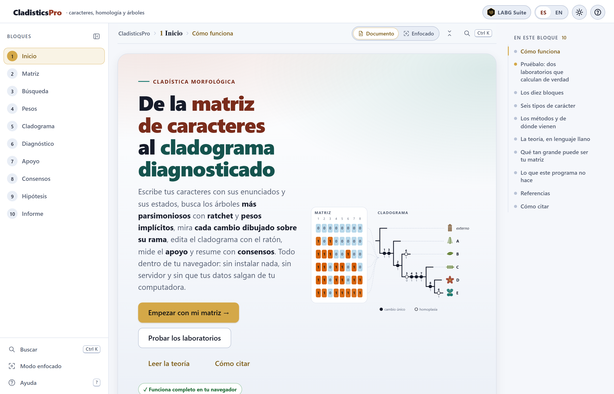
| Elemento | Para qué sirve |
|---|---|
| La barra de bloques | Diez bloques numerados, siempre visibles a la izquierda. El activo va resaltado y los que ya tienen resultado llevan una palomita. Se puede saltar a cualquiera en cualquier momento; el que necesita algo que todavía no existe lo dice y ofrece el botón para ir a resolverlo. Se contrae con [; en una pantalla angosta se vuelve una fila de pestañas abajo. |
| La ruta | Arriba del contenido: CladisticsPro › Bloque › sección. Dice dónde estás mientras bajas por la página. |
| Documento · Enfocado | Dos modos de lectura. Documento muestra todas las secciones del bloque una tras otra; Enfocado, una sola a la vez, con Anterior y Siguiente. El botón de al lado contrae o expande todas las secciones. |
| Buscar · Ctrl K | Una paleta que encuentra cualquier bloque, sección, botón o campo por su nombre y lleva hasta él, además de acciones como cambiar el idioma o copiar el enlace a la sección. |
| En este bloque | El índice de las secciones del bloque abierto, a la derecha; la sección que estás leyendo va marcada. |
| Las tarjetas | Cada bloque se divide en tarjetas —«Qué se va a analizar», «Método y parámetros», «Resultados de la búsqueda»…— que se leen de arriba abajo: primero lo que se elige, después lo que se obtiene. |
| Los recuadros de resultados | Una fila de cifras grandes con su etiqueta y una línea de contexto debajo. Es el resumen de la tarjeta: lo que se diría en una frase. El borde de color dice si el valor es bueno (verde), dudoso (ámbar) o malo (rojo). |
| Los botones de cada figura | En la esquina de cada figura: ✎ abre el editor de esa figura (títulos, ejes, colores, textos, anotaciones) y el botón de la regla y el lápiz la abre en el estudio de figuras, a pantalla dividida, para exportarla al tamaño, la resolución y el formato que pida la revista. |
| Los botones flotantes | Abajo a la derecha: Último cambio regresa a lo último que editaste y la flecha sube al principio. Cuando llegas al final de un bloque se colocan por encima del pie para no tapar nada. |
| El pie de cada bloque | ← Anterior y Siguiente →, con el nombre del bloque al que llevan. También Alt + ← / →. |
| La espera | Las búsquedas largas abren una ventana con el avance, la mejor longitud hasta el momento y un botón para cancelar; el resto de la app sigue a la vista. |
| Los mensajes | Bandas de color bajo una tarjeta: verde cuando algo salió bien, azul para información, ámbar para un aviso y rojo para un error que impide seguir. Cada capítulo termina con la lista de los de su bloque. |
| ? | El botón de la barra superior (o la tecla ?) muestra los atajos de teclado. |
El Bloque 2 trae tres matrices de ejemplo, incrustadas en el programa para que funcionen con doble clic. Son simuladas: los nombres de las especies son reales —plantas mexicanas— y los enunciados de los caracteres son morfología verosímil, pero los estados se generaron con un proceso aleatorio a lo largo de un árbol escrito para ello, que también viene en el archivo. Sirven para aprender la app, para probar un método antes de usarlo con tus datos y para reproducir este manual; no sirven para concluir nada sobre esas plantas.
| Matriz | Tamaño | Qué tiene | Para qué sirve en el manual |
|---|---|---|---|
| Bursera (didáctico) | 8 × 12 | Doce caracteres binarios no aditivos, 2 % de datos faltantes, Spondias purpurea como grupo externo; la búsqueda exacta la resuelve en un instante | La rama y cota (cap. 3) |
| Dahlia (didáctico) | 20 × 45 | De todo: 38 caracteres no aditivos, 3 aditivos, 1 con matriz de pasos y 3 continuos; 5 caracteres que dependen de otros, con 62 celdas inaplicables; 15 celdas polimórficas; 4.6 % de datos faltantes; Bidens pilosa y Cosmos bipinnatus como grupo externo | El ejemplo principal de todos los capítulos |
| Matriz grande simulada | 120 × 300 | Trescientos caracteres no aditivos de hasta cuatro estados, 4 % de datos faltantes | El tiempo de las búsquedas heurísticas y del ratchet (cap. 3) |
El orden de los bloques es el orden en que se hace un análisis cladístico. No es obligatorio recorrerlo completo: para dibujar y editar un árbol publicado basta con la matriz y el Bloque 5; para una búsqueda rápida, los Bloques 2 y 3. Lo que un bloque necesita de otro lo toma solo al abrirlo, y si todavía no existe lo dice y ofrece el botón para ir por ello.
Si cambias una celda, un carácter o un taxón en el Bloque 2, los resultados de la búsqueda y de todo lo que depende de ella se borran, porque ya no corresponden a la matriz: hay que buscar de nuevo. Lo único que no borra nada es poner o cambiar la imagen de un taxón. Si buscas otra vez en el Bloque 3, el apoyo, los consensos y las hipótesis también se borran. Los métodos del Bloque 10 se redactan con lo que exista en ese momento: por eso conviene generarlos al final.
.xlsx no se abre directamente: se guarda como .csv o se copia y pega el bloque de celdas. La app no carga código ajeno, y eso es lo que le permite abrirse con doble clic y funcionar sin internet.La portada de la app no es un adorno: explica en lenguaje llano la lógica de la cladística, deja probar la parsimonia con dos laboratorios que calculan de verdad, presenta los diez bloques y los seis tipos de carácter, lista cada método con el artículo que lo define, dice qué tan grande puede ser una matriz y qué no hace el programa, y trae la bibliografía y la forma de citarlo. Es el bloque para leer antes de abrir la primera matriz y para volver cada vez que una palabra no quede clara.
La primera pantalla (figura I.2) dice en una frase lo que hace el programa: de la matriz de caracteres al cladograma diagnosticado. A la derecha, una ilustración resume el camino: una pequeña matriz de unos y ceros y el cladograma que sale de ella, con cada cambio dibujado sobre su rama.
Debajo del título hay cuatro botones. Empezar con mi matriz → lleva al Bloque 2 para abrir, pegar o escribir una matriz; Probar los laboratorios baja a los dos laboratorios de la sección 1.3; Leer la teoría, a las diez ideas de la sección 1.7, y Cómo citar, al final de la página. La etiqueta ✓ Funciona completo en tu navegador recuerda que nada sale de la computadora. El resto de la portada se lee hacia abajo, y el índice de la derecha (En este bloque) lleva a cada sección.
Nada de lo que se haga en esta portada afecta a la matriz ni a los análisis: los laboratorios trabajan con sus propios datos. Quien ya conoce la cladística puede ir directo al Bloque 2; quien la está aprendiendo encontrará aquí, en diez páginas de la app, lo mismo que el capítulo de introducción de un libro de texto, con ejemplos que responden al clic.
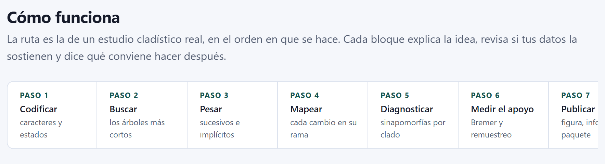
La ruta es la de un estudio real. Cada paso corresponde a uno o más bloques, y cada bloque explica la idea, revisa si tus datos la sostienen y dice qué conviene hacer después:
| Paso | En la portada | Bloques | Qué se hace |
|---|---|---|---|
| 1 | Codificar caracteres y estados | 2 | Escribir o revisar la matriz, el enunciado de cada carácter y el nombre de cada estado |
| 2 | Buscar los árboles más cortos | 3 | Encontrar los árboles más parsimoniosos con el método que convenga al tamaño de la matriz |
| 3 | Pesar: sucesivos e implícitos | 4 | Ver si el resultado cambia al castigar la homoplasia |
| 4 | Mapear cada cambio en su rama | 5 | Dibujar dónde ocurrió cada cambio y editar el árbol |
| 5 | Diagnosticar: sinapomorfías por clado | 6 | Medir la homoplasia de cada carácter y listar lo que define a cada grupo |
| 6 | Medir el apoyo: Bremer y remuestreo | 7 8 9 | Cuánto creerle a cada grupo, qué comparten los árboles empatados y qué hipótesis rechazan los datos |
| 7 | Publicar: figura, informe y paquete | 10 | Preparar la figura, los métodos y el paquete que reproduce todo |
El primer laboratorio es la parsimonia completa en miniatura: cinco taxones y seis caracteres binarios. Con cinco taxones hay exactamente 15 árboles sin raíz posibles, así que la app los evalúa todos, cuenta los pasos que necesita cada uno y los ordena del más corto al más largo. Nada de esto es una animación: cada clic recalcula con la misma optimización que la app usará con tu matriz.
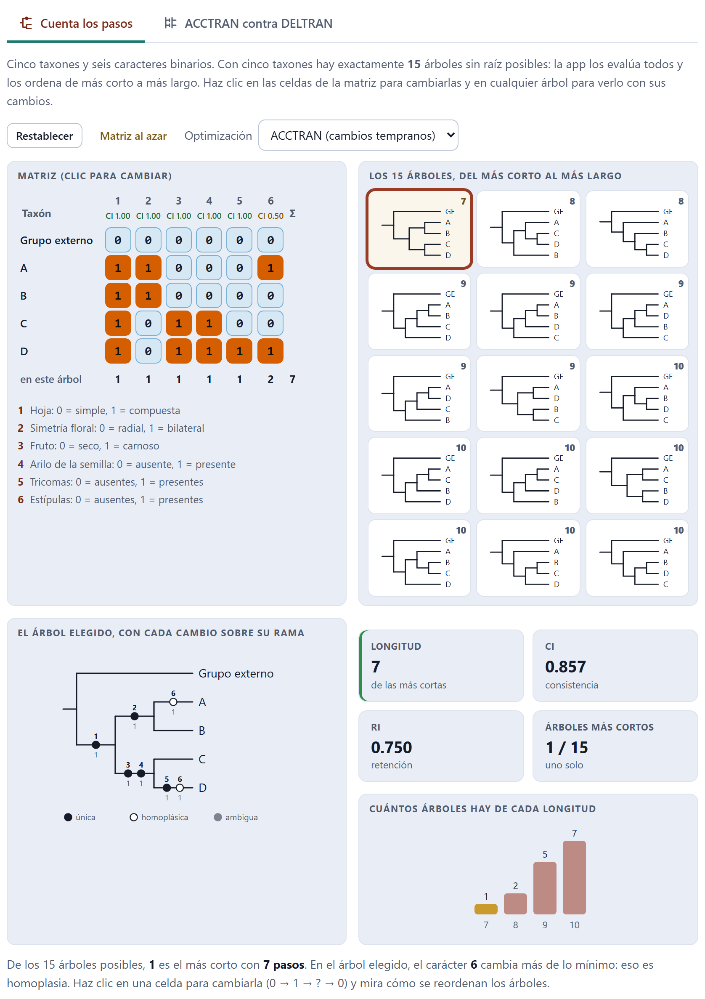
| Parte | Qué muestra |
|---|---|
| Matriz (clic para cambiar) | Cinco filas —el grupo externo y los taxones A a D— y seis caracteres con su enunciado debajo (hoja simple o compuesta, simetría floral, fruto seco o carnoso…). Cada clic en una celda la cambia de 0 a 1, de 1 a «?» y de «?» a 0. Sobre cada columna, el índice de consistencia del carácter en el árbol elegido; abajo, los pasos que toma en él. |
| Los 15 árboles | Cada miniatura lleva su longitud en la esquina; la del árbol elegido va enmarcada. Un clic en cualquier otra lo elige. |
| El árbol elegido | Dibujado con cada cambio sobre su rama: el número del carácter arriba y el estado nuevo abajo. Las marcas siguen la convención del Bloque 5: llena si el estado aparece una sola vez, vacía si es homoplásico, gris si el cambio es ambiguo. |
| Los recuadros | La longitud del árbol elegido, sus índices de consistencia (CI) y de retención (RI), y cuántos de los 15 empatan en la longitud mínima. |
| Cuántos árboles hay de cada longitud | El histograma de las 15 longitudes; la barra de la mínima va en otro color. |
| Optimización | ACCTRAN (cambios tempranos), DELTRAN (cambios tardíos) o sólo los cambios no ambiguos. La longitud no cambia; cambia dónde se dibujan los cambios. |
| Restablecer · Matriz al azar | Vuelve a la matriz de partida o genera otra al azar. |
Con la matriz que trae el laboratorio, uno solo de los 15 árboles es el más corto, con 7 pasos: ((A, B), (C, D)) enraizado en el grupo externo. Su CI es 0.857 y su RI 0.750. Los demás miden 8 (dos árboles), 9 (cinco) y 10 (siete). La lectura que da la app al pie: «De los 15 árboles posibles, 1 es el más corto con 7 pasos. En el árbol elegido, el carácter 6 cambia más de lo mínimo: eso es homoplasia.» En efecto, las estípulas (carácter 6) aparecen en A y en D, que no son grupo hermano: dos marcas vacías, una en cada rama. Prueba a poner un «1» en la columna 6 de B: el carácter deja de ser homoplásico en otro árbol, el orden de los 15 cambia y el más corto puede ser otro.
El segundo laboratorio aísla una idea que confunde a casi todos al principio: dos reconstrucciones igual de cortas pueden contar historias distintas. El árbol está fijo; sólo se cambian los estados de las puntas de un solo carácter.
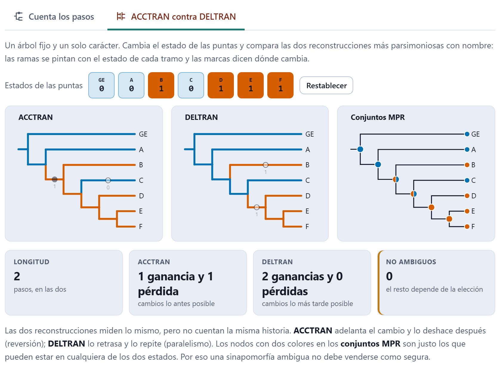
Con los estados de partida (B, D, E y F en 1; el grupo externo, A y C en 0), las dos reconstrucciones miden 2 pasos. ACCTRAN pone el cambio a 1 lo antes posible —en la rama que lleva a B, C, D, E y F— y luego lo deshace en C: 1 ganancia y 1 pérdida (una reversión). DELTRAN lo retrasa todo lo posible y lo hace aparecer dos veces, en B y en el grupo D–F: 2 ganancias y 0 pérdidas (un paralelismo). El recuadro No ambiguos dice 0: ninguno de los dos cambios cae en la misma rama en las dos reconstrucciones, así que dónde ocurrió depende de la elección.
Si un carácter es una sinapomorfía del grupo B–F con ACCTRAN pero no con DELTRAN, decir que «define» a ese grupo es vender una conjetura como un hecho. Los nodos de dos colores en los conjuntos MPR (de most parsimonious reconstructions) son justo los que pueden estar en cualquiera de los dos estados. El Bloque 5 deja elegir ACCTRAN, DELTRAN o sólo los cambios no ambiguos, y el Bloque 6 marca como ambiguas las sinapomorfías que dependen de esa elección (Swofford y Maddison 1987; Agnarsson y Miller 2008).
La sección Los diez bloques presenta cada bloque en una tarjeta con su número, una ilustración, la palabra que lo resume (Codificar, Buscar, Pesar, Mapear…) y lo que hace. Un clic en la tarjeta lleva al bloque. Un bloque es un paso del estudio y un capítulo de este manual: el capítulo 5 explica el Bloque 5.
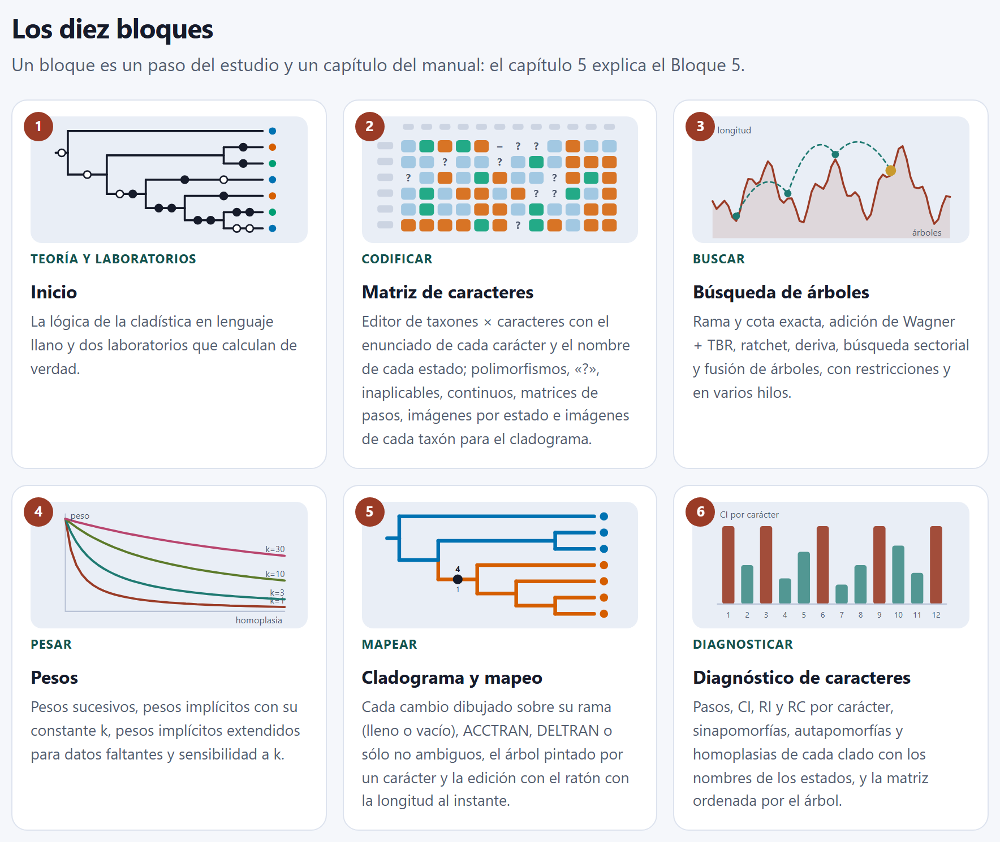
La sección Seis tipos de carácter recuerda que la morfología no cabe en un solo modelo de cambio. Cada carácter declara el suyo en el Bloque 2, y la optimización y la búsqueda lo respetan:
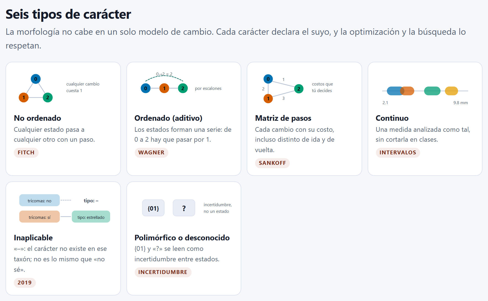
| Tipo | Cómo cuenta los pasos | Fuente |
|---|---|---|
| No ordenado (no aditivo) | Cualquier estado pasa a cualquier otro con un paso. Es el tipo por omisión. | Fitch 1971 |
| Ordenado (aditivo) | Los estados forman una serie: de 0 a 2 hay que pasar por 1, y cuesta dos pasos. | Farris 1970 |
| Matriz de pasos | Cada cambio tiene su propio costo, que puede ser distinto de ida y de vuelta (por ejemplo, perder una estructura cuesta menos que ganarla). | Sankoff 1975 |
| Continuo | Una medida analizada como tal, sin cortarla en clases: el costo es la diferencia entre valores, y cada taxón puede llevar un intervalo. | Goloboff et al. 2006 |
| Inaplicable («–») | El carácter no existe en ese taxón (el color de una cola que no hay). No es lo mismo que «no sé»: sólo cuenta los cambios donde la estructura existe. | Brazeau et al. 2019 |
| Polimórfico o desconocido | {01} y «?» se leen como incertidumbre entre estados: el taxón puede tomar cualquiera de ellos, el que alargue menos el árbol. | Nixon y Davis 1991 |
La sección Los métodos y de dónde vienen es una galería de los 42 métodos que la app implementa, cada uno con una pequeña ilustración y el artículo que lo define. Los botones de arriba filtran por familia: matriz y codificación (6), búsqueda (7), pesos (4), optimización (6), índices (3), apoyo (5), consenso (6), hipótesis (3) y figuras e informe (2). La lista completa de referencias está al final de la portada, y los métodos que redacta el Bloque 10 citan sólo los que hayas usado.
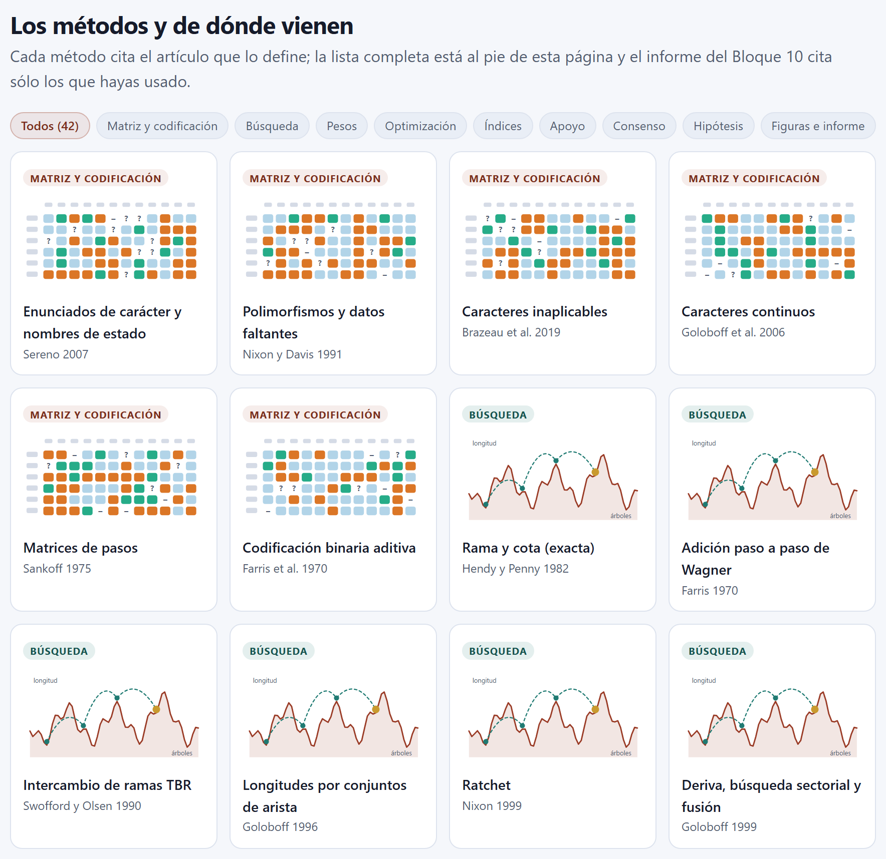
Diez ideas que sostienen todo lo demás, cada una en un panel que se abre con un clic y dice en qué bloque se usa. Varias traen una figura dibujada por la app. Son el resumen de un curso de sistemática filogenética, sin fórmulas innecesarias:
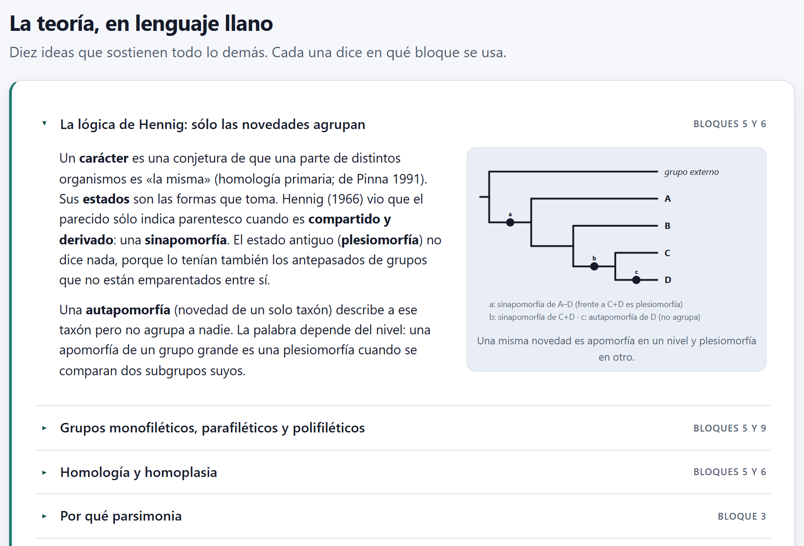
| Idea | Lo esencial | Bloques |
|---|---|---|
| La lógica de Hennig | Sólo el parecido compartido y derivado (sinapomorfía) agrupa; el estado antiguo no dice nada; una autapomorfía describe a un taxón pero no agrupa a nadie. | 5, 6 |
| Grupos mono-, para- y polifiléticos | Un clado reúne a un antepasado y a todos sus descendientes; los grupos parafiléticos se definen por lo que «aún no tienen» y los polifiléticos por convergencia. | 5, 9 |
| Homología y homoplasia | La codificación propone homologías y el árbol las pone a prueba; un estado que aparece más de una vez es homoplasia. | 5, 6 |
| Por qué parsimonia | El árbol con menos cambios explica más semejanzas como homologías; el número de árboles crece como (2n − 5)!!. | 3 |
| Polaridad y grupo externo | La parsimonia da árboles sin raíz; la raíz la pone el grupo externo incluido en el análisis. | 2, 5 |
| Codificar caracteres y el «–» | Un buen carácter tiene enunciado y estados excluyentes; los inaplicables no son «?». | 2 |
| Optimizar | Fitch, Wagner y Sankoff asignan estados a los nodos con el menor número de cambios; ACCTRAN y DELTRAN eligen entre reconstrucciones empatadas. | 5 |
| Los índices CI, RI, RC | CI = m/s, RI = (g − s)/(g − m), RC = CI × RI; un carácter no informativo tiene RI 0/0, no cero. | 6 |
| Pesar los caracteres | Pesos sucesivos y pesos implícitos con su constante k; lo firme es lo que sobrevive a varios k. | 4 |
| Apoyo y consenso | El árbol más corto no dice cuánto creerle a cada grupo; un consenso resume los árboles empatados; una politomía es «no sé». | 7, 8 |
La tabla de la sección Qué tan grande puede ser tu matriz (figura 1.8) da el tiempo de una ronda completa de TBR —revisar una vez todos los reacomodos posibles de un árbol— medido con el mismo motor que corre en el navegador. Una búsqueda repite esa ronda varias veces y el ratchet cientos, así que la tabla sirve para estimar el orden de la espera: con 25 taxones y 100 caracteres es instantáneo; con 100 × 300, decenas de segundos con ratchet; con 200 × 500, varios minutos, con las réplicas repartidas en los núcleos del procesador. Los caracteres inaplicables y las matrices de pasos son más lentos que los no ordenados, porque se cuentan uno por uno.
Las cuatro tarjetas de abajo dicen lo que el programa no hace: modelos de sustitución (para eso está PhylogenyPro, de la misma suite), alinear secuencias, fechar el árbol y matrices enormes. La sección I.9 de este manual da la lista completa.
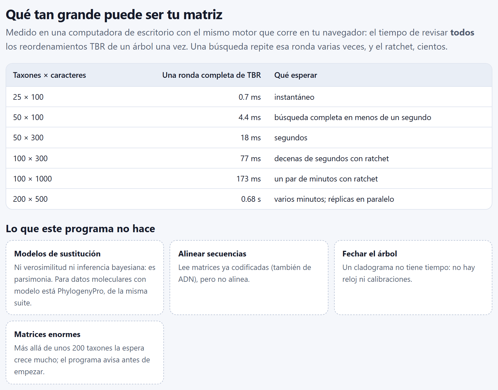
La sección Referencias reúne las 53 publicaciones de las que salen los métodos y la teoría, con su referencia completa y una etiqueta del tema; los botones de arriba filtran por tema. Es la misma lista que el apéndice E de este manual, y de ella toma el Bloque 10 las referencias de los métodos que redacta.
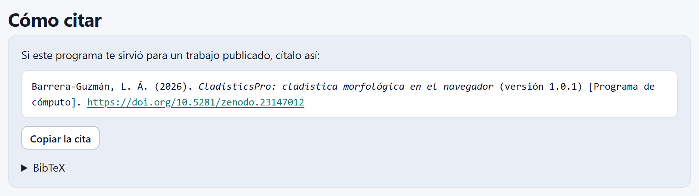
La sección Cómo citar da la cita del programa con su versión y su DOI de Zenodo, un botón para copiarla y, plegada, la misma cita en BibTeX para gestores de referencias. Si el programa te sirvió para un trabajo publicado, cítalo; si usaste un método en particular (el remuestreo simétrico, los pesos implícitos extendidos, el algoritmo de inaplicables), cita también el artículo original: los métodos redactados del Bloque 10 ya lo hacen.
Todo el análisis descansa en la matriz: cada columna es una hipótesis sobre qué estructuras son la misma cosa en distintos taxones. Este bloque la abre, la crea o la recupera; la resume en siete cifras; la deja editar celda por celda como una hoja de cálculo, con un inspector para el enunciado, el tipo, los estados, los costos y las dependencias de cada carácter; guarda una imagen de cada taxón para los cladogramas; revisa la matriz antes de buscar árboles, y la exporta como lista de caracteres o en los formatos de los programas de parsimonia.
Una matriz de caracteres no es una tabla de observaciones neutrales: es un conjunto de conjeturas. Al escribir que dos especies tienen el estado «glandulares» en el carácter «Tipo de tricoma del tallo» se afirma que esos tricomas son la misma estructura, heredada de un antepasado común. Es lo que de Pinna (1991) llamó homología primaria.
El análisis cladístico pone a prueba esas conjeturas todas a la vez. El árbol más corto es el que menos homologías primarias obliga a rechazar; las que sobreviven, porque aparecen una sola vez en el árbol y definen un grupo, son homologías secundarias o sinapomorfías; las que no, son homoplasia: convergencias, paralelismos o reversiones (Patterson 1982). Por eso la calidad del cladograma depende, antes que de cualquier algoritmo, de cómo se escribió cada carácter.
Sereno (2007) propone escribir cada carácter con la misma estructura: un localizador que dice dónde mirar (el tallo, el folíolo, la lígula), una variable que dice qué se compara (el tipo de tricoma, el color, la forma) y unos estados mutuamente excluyentes. La app guarda esa estructura en el campo Enunciado del carácter y en los nombres de los estados, y la reproduce tal cual en la lista de caracteres (sección 2.8) y en los métodos del Bloque 10.
Dos tipos de duda merecen símbolos distintos. El «?» dice existe, pero no se sabe cómo es: el ejemplar está roto, la estructura no se conserva o no se ha observado. El «–» dice no existe: el carácter no puede tener estado porque la estructura de la que habla falta. Si un taxón sin tricomas llevara «?» en el tipo de tricoma, el análisis podría asignarle «simples» o «glandulares» —lo que alargue menos el árbol— y fabricar una semejanza que no está en la planta.
Con «–», en cambio, el algoritmo de inaplicables (Brazeau et al. 2019) sólo cuenta los cambios donde la estructura existe. La forma recomendada de codificar una estructura que falta en algunos taxones es la codificación contingente: un carácter de presencia (el 5, «Tricomas del tallo») y, para cada rasgo de la estructura, un carácter que depende de él (el 6 y el 7) con «–» donde no aplica (Strong y Lipscomb 1999).
| Si los estados no tienen un orden que puedas defender | entonces No ordenado, el tipo por omisión: cualquier cambio cuesta un paso. |
| Si los estados forman una serie con intermedios argumentados (hoja simple → pinnada → bipinnada → tripinnada) | entonces Ordenado: pasar de simple a bipinnada cuesta dos pasos. Escribe en la nota del carácter por qué. |
| Si unos cambios son más fáciles que otros, o la ida no cuesta lo mismo que la vuelta | entonces Matriz de pasos, con un costo para cada par de estados. |
| Si es una medida (una altura, una longitud) y cortarla en clases sería arbitrario | entonces Continuo, con el valor o el intervalo de cada taxón. |
| Si la estructura falta en algunos taxones | entonces un carácter de presencia y otros que dependen de él, con «–» donde no aplica. |
| Si un taxón presenta dos estados (una población variable) | entonces un polimorfismo (01); si no se sabe cuál de los dos tiene, {01}; si no se sabe nada, «?». |
La primera tarjeta del bloque (figura 2.2) reúne todas las formas de tener una matriz en la app. Arriba, las tres matrices de práctica; abajo, tus datos. Al leer una matriz aparece una línea verde con su tamaño y su origen —«Matriz leída: 20 taxones × 45 caracteres · ejemplo_dahlia.nex»— y, si algo se interpretó de una manera que conviene saber, las notas de la lectura.
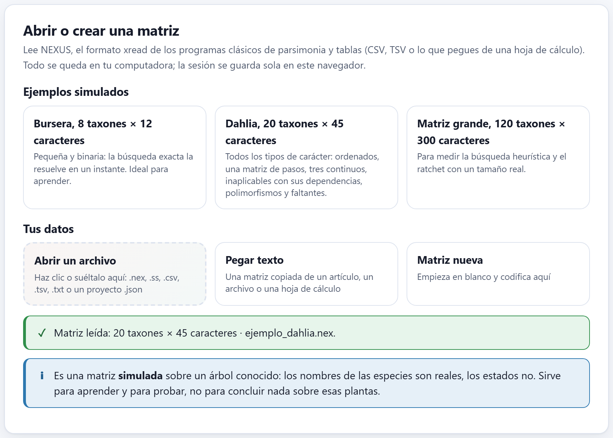
| Opción | Qué hace |
|---|---|
| Ejemplos simulados | Tres matrices de práctica: Bursera (8 × 12, binaria, para la búsqueda exacta), Dahlia (20 × 45, con todos los tipos de carácter) y la Matriz grande (120 × 300, para medir las búsquedas heurísticas). Son simuladas sobre un árbol conocido: los nombres de las especies son reales, los estados no. |
| Abrir un archivo | Clic para elegirlo o soltarlo sobre la zona punteada. Lee .nex, .ss, .csv, .tsv, .txt y los proyectos .json que escribe la propia app. El formato se reconoce por el contenido, no por la extensión. |
| Pegar texto | Abre un cuadro donde se pega una matriz copiada de un artículo, de un archivo o de una hoja de cálculo; Leer la interpreta con las mismas reglas que un archivo. |
| Matriz nueva | Pide el número de Taxones (de 3 a 2000; 10 por omisión) y de Caracteres (de 1 a 5000; 20 por omisión). Crear la arma con todas las celdas en «?», los taxones llamados «Taxón 1», «Taxón 2»… y los caracteres sin enunciado, lista para codificar en el editor. |
| Recuperar la última sesión | Sólo aparece si el navegador guardó una matriz antes. Muestra su título, su tamaño y la fecha en que se guardó; un clic la vuelve a cargar. |
Los tres formatos de texto que entran son los mismos que salen (sección 2.8), y cada uno guarda cosas distintas:
| Formato | Lo que la app lee |
|---|---|
| NEXUS ( .nex) | Los bloques TAXA, CHARACTERS o DATA (estándar, continuos o secuencias; intercalados o no), los nombres de caracteres y estados (CHARSTATELABELS, CHARLABELS, STATELABELS), los supuestos (TYPESET, WTSET, EXSET, matrices de pasos USERTYPE, CHARSET) y los árboles (TREES, con TRANSLATE). Lo que el estándar no prevé —el grupo externo, las dependencias, las unidades, las notas, los taxones inactivos— va en un bloque propio, CLADISTICSPRO, que los demás programas ignoran sin error. |
| xread ( .ss) | El formato de matriz de los programas clásicos de parsimonia: la palabra xread, un título opcional, el número de caracteres y de taxones, las filas (con [01] para los polimorfismos) y las particiones &[num] y &[cont]. Después, ccode (+ ordenado, - no ordenado, [ inactivo, ] activo, /n peso), cnames, smatrix (matrices de pasos), outgroup y los árboles de tread. |
| Tabla ( .csv, .tsv, .txt) | Separada por comas, punto y coma o tabuladores. Primera fila: el encabezado, con los caracteres; primera columna: los taxones. Filas opcionales que empiezan con # estados (nombres separados por |), # tipo, # peso, # depende (5=1) o # activo. Una columna con decimales o intervalos se lee como continua. |
Cualquiera que sea el formato, si el archivo no declara un grupo externo la app marca como tal al primer taxón. Revísalo en el inspector del taxón (sección 2.5): el grupo externo decide la raíz de todos los árboles, la polaridad de cada cambio y, con matrices de pasos asimétricas, la longitud misma del árbol.
Los árboles, los pesos, el cladograma, el diagnóstico, el apoyo, los consensos y las hipótesis (Bloques 3 a 9) se calculan sobre una matriz concreta. Al cargar otra, o al editar una sola celda, todos se descartan y hay que volver a buscar. Es a propósito: un cladograma que ya no corresponde a su matriz es peor que ninguno. La matriz, en cambio, nunca se pierde: el navegador la guarda sola un instante después de cada cambio, y el botón Recuperar la última sesión la devuelve al día siguiente.
En cuanto hay una matriz, la tarjeta Resumen de la matriz la describe en siete recuadros. Es lo primero que conviene leer: un número fuera de lo esperado —más faltantes de los que creías, inaplicables sin dependencias, un grupo externo que no elegiste— avisa de un problema antes de que se convierta en un árbol extraño.
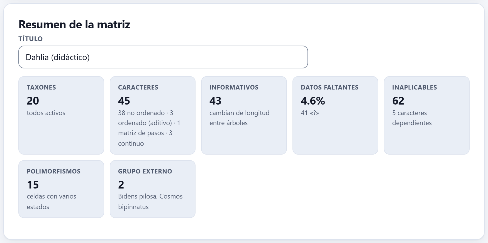
| Recuadro | Qué cuenta | En Dahlia |
|---|---|---|
| Título | El nombre de la matriz; lo usan las figuras, los métodos y los nombres de los archivos que se descargan. Se cambia aquí mismo. | Dahlia (didáctico) |
| Taxones | Cuántos hay y cuántos están inactivos (fuera del análisis). | 20, todos activos |
| Caracteres | Cuántos hay de cada tipo. | 45: 38 no ordenados, 3 ordenados, 1 matriz de pasos, 3 continuos |
| Informativos | Los caracteres cuya longitud cambia de un árbol a otro: los únicos que eligen entre árboles. | 43 |
| Datos faltantes | El porcentaje de celdas con «?». | 4.6 % (41 celdas) |
| Inaplicables | Las celdas con «–» y cuántos caracteres declaran de cuál dependen. | 62, en 5 caracteres dependientes |
| Polimorfismos | Las celdas con más de un estado. | 15 |
| Grupo externo | Cuántos taxones lo forman y cuáles son. | 2: Bidens pilosa y Cosmos bipinnatus |
Un carácter discreto es informativo para la parsimonia cuando al menos dos de sus estados aparecen cada uno en dos taxones o más. Si un estado aparece en un solo taxón (una autapomorfía), ese cambio cuesta un paso en cualquier árbol: el carácter suma longitud, pero no prefiere ningún árbol; y como su CI es 1, sube el índice de consistencia de toda la matriz sin decir nada del árbol (Kitching et al. 1998). En Dahlia, los dos caracteres no informativos son el 34, «Tipo de ala», y el 41, «Látex»; el control de calidad los señala (sección 2.7). No hace falta quitarlos: no cambian qué árbol es el más corto. Hay que recordarlos al comparar el CI con el de otros estudios: un CI calculado con autapomorfías parece mejor de lo que es.
La tarjeta Editor es una hoja de cálculo hecha para matrices morfológicas: los taxones en filas, los caracteres en columnas, cada celda del color de su estado y, a la derecha, el inspector de lo que esté seleccionado (sección 2.5). Funciona igual con 20 taxones que con 2000: sólo se dibuja la parte visible.
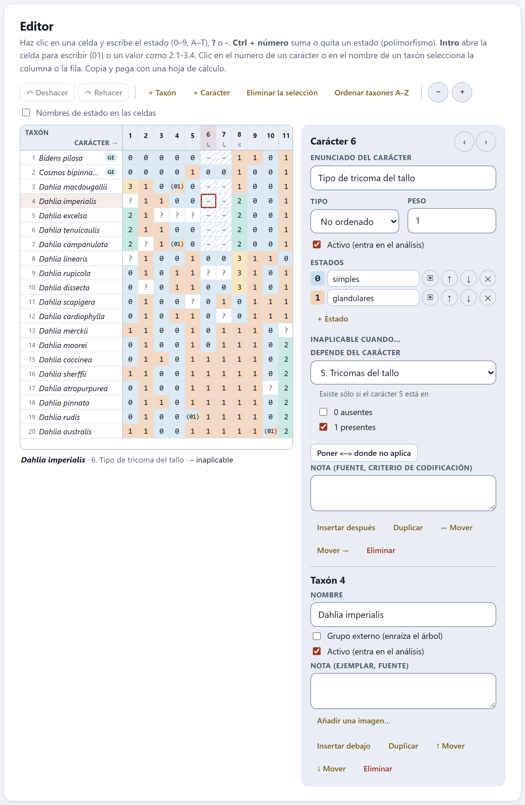
La barra de herramientas tiene, de izquierda a derecha: ↶ Deshacer y ↷ Rehacer (al pasar el ratón dicen qué van a deshacer, por ejemplo «Deshacer: Pegar»); + Taxón y + Carácter, que añaden uno al final; Eliminar la selección, que borra las columnas o filas enteras seleccionadas; Ordenar taxones A–Z, que deja primero al grupo externo y luego a los demás en orden alfabético; los botones − y +, que achican o agrandan la cuadrícula, y la casilla Nombres de estado en las celdas, que cambia los símbolos por los nombres («glandulares» en vez de «1») para revisar la codificación sin consultar la lista.
Cada parte de la cuadrícula dice algo:
| Lo que se ve | Qué significa |
|---|---|
| Encabezado de columna | El número del carácter y, debajo, sus marcas: ≤ ordenado, ▦ matriz de pasos, ∼ continuo, ↳ depende de otro carácter y ×2 (o el número que sea) si su peso no es 1. Al pasar el ratón muestra el enunciado. Un carácter inactivo se ve atenuado. |
| Nombre de fila | El número y el nombre del taxón; la etiqueta GE marca el grupo externo. Un taxón inactivo se ve atenuado. |
| Color de la celda | Un color por estado, el mismo en toda la app: 0 azul claro, 1 durazno, 2 verde, 3 amarillo… Una celda blanca es «?»; una rayada, «–». |
(01) · {01} | Un polimorfismo (el taxón tiene los dos estados) y una incertidumbre (tiene uno de los dos, no se sabe cuál). El análisis los lee igual —puede tomar cualquiera de ellos, el que alargue menos el árbol— pero la app los distingue para que un archivo salga como entró. |
| Valores continuos | Un número (12.5) o un intervalo (150.9-192), con las unidades del carácter. |
| Línea bajo la cuadrícula | Describe la celda seleccionada en palabras: el taxón, el carácter y el estado con su nombre, por ejemplo «Dahlia imperialis · 6. Tipo de tricoma del tallo · – inaplicable». |
La cuadrícula se maneja con el teclado como una hoja de cálculo. Basta hacer clic en una celda y escribir:
| Tecla | Qué hace |
|---|---|
0–9, A–T | Pone ese estado en la celda o en toda la selección (hasta 30 estados por carácter). En una columna continua no hace nada: el valor se escribe con Intro. |
? · - | Faltante e inaplicable. Supr y Retroceso también dejan la celda en «?». |
Ctrl + número | Suma ese estado a la celda o lo quita: sobre un 0, Ctrl+1 deja (01); otra vez Ctrl+1, vuelve a 0. |
Intro o F2 | Abre la celda para escribir texto libre: {01}, (012), 2.5 o 2.1-3.4. Intro guarda y baja; Tab guarda y avanza a la derecha; Esc cancela. Doble clic hace lo mismo. |
Flechas · RePág · AvPág | Mueven la selección una celda o una pantalla. Con Mayús, la extienden. |
Inicio · Fin | Van al primer o al último carácter de la fila; con Ctrl, a la primera o a la última celda de la matriz. |
Ctrl+C · Ctrl+X · Ctrl+V | Copian, cortan y pegan como texto separado por tabuladores, el mismo de una hoja de cálculo. Cortar deja las celdas en «?». |
Ctrl+A · Ctrl+Z · Ctrl+Y | Seleccionan toda la matriz, deshacen y rehacen. |
| Clic en un número o un nombre | Selecciona la columna entera (el carácter) o la fila entera (el taxón); arrastrar o Mayús+clic selecciona varias. |
En la hoja de cálculo, se copian las 20 celdas de un carácter nuevo, una debajo de otra. En la app, + Carácter añade la columna 46; se hace clic en su primera celda y Ctrl+V. Cada valor cae en su fila. Tres casos útiles: un solo valor pegado sobre una selección la llena entera; una tira de símbolos sin separar, como 0110?, se reparte en celdas consecutivas hacia la derecha, y lo que no se puede leer se deja como estaba, con el aviso «N celdas no se pudieron leer y se dejaron como estaban». Todo pegado se deshace de una vez con Ctrl+Z.
A la derecha de la cuadrícula, el inspector muestra todo lo que se sabe de la celda seleccionada, en dos partes: arriba su carácter y abajo su taxón (figura 2.4). Lo que se cambia aquí se ve al instante en la cuadrícula y se puede deshacer con ↶ Deshacer, igual que una celda. La figura 2.5 muestra la parte del carácter para el 25, «Color de la lígula», el único de Dahlia con matriz de pasos.
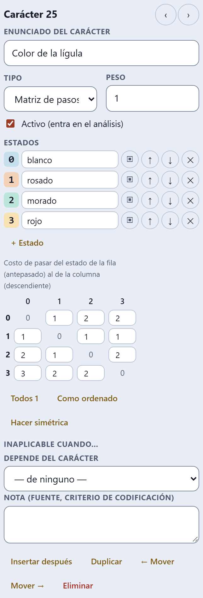
| Campo | Qué hace |
|---|---|
| Carácter N ‹ › | El número del carácter; las flechas pasan al anterior o al siguiente. |
| Enunciado | Localizador y variable (sección 2.1), por ejemplo «Hoja: división». |
| Tipo · Peso | No ordenado, ordenado, matriz de pasos o continuo; el peso multiplica sus pasos (1 por omisión, 0 lo anula sin desactivarlo). |
| Activo | Sin la palomita, el carácter se queda en la matriz pero no entra en el análisis. |
| Estados | Cada estado con su símbolo y su nombre. ▣ le asigna una imagen; ↑ ↓ lo mueven y recodifican las celdas; ✕ lo quita (sus celdas quedan en «?», previa confirmación). + Estado añade uno. |
| Costos | Sólo en matrices de pasos: el costo de pasar del estado de la fila (antepasado) al de la columna (descendiente). Todos 1, Como ordenado y Hacer simétrica la llenan de golpe. |
| Inaplicable cuando… | De qué carácter depende y en qué estados existe. Poner «–» donde no aplica corrige la columna. |
| Nota | La fuente, el criterio de codificación, por qué se ordenó. Viaja en el NEXUS y en el proyecto. |
| Botones | Insertar después, Duplicar, ← Mover, Mover → y Eliminar. |
En la tabla de costos, la fila es el estado del antepasado y la columna el del descendiente; la diagonal vale 0. En el carácter 25 de Dahlia, pasar de blanco (0) a rojo (3) cuesta 2 pasos, pero volver de rojo a blanco cuesta 3: la matriz es asimétrica, y entonces la raíz importa, porque el mismo árbol puede medir distinto según dónde empiece (Sankoff 1975). Los tres botones son atajos: Todos 1 la vuelve equivalente a un carácter no ordenado; Como ordenado pone como costo la distancia entre estados (de 0 a 3, tres pasos), y Hacer simétrica copia cada costo de ida en el de vuelta. Si un cambio directo cuesta más que pasar por un estado intermedio, el control de calidad lo advierte: el análisis tomará siempre el camino barato.
Con el tipo Continuo, la lista de estados se cambia por el campo Unidad (cm, mm, número de flores…), y cada celda lleva un valor o un intervalo: en Dahlia, la altura de Dahlia imperialis, la dalia arbórea, va de 766.9 a 976.1 cm. El costo de un cambio es la diferencia entre valores, sin cortarlos en clases (Goloboff et al. 2006). Como un carácter continuo pesa tanto como su escala —una diferencia de 100 cm cuenta cien veces más que una de 1 cm—, conviene expresarlo en una unidad razonable o ajustarle el peso. Cambiar un carácter de discreto a continuo, o al revés, borra los valores de su columna; la app pide confirmación antes.
En la sección Inaplicable cuando…, Depende del carácter dice de qué carácter depende este, y las casillas de Existe sólo si el carácter N está en, en qué estados existe. En la figura 2.4, el carácter 6 depende del 5 y sólo existe si el 5 está en «presentes». La dependencia no cambia el análisis —el algoritmo de inaplicables lee directamente los «–»—, pero permite que el control de calidad revise que cada «–» esté donde debe y que no falte ninguno. Poner «–» donde no aplica hace la corrección en un clic: pone «–» donde la estructura no existe y avisa cuántas celdas cambió («N celdas corregidas») o que «Todo estaba en su lugar».
La parte de abajo del inspector es la del taxón de la fila seleccionada: su Nombre; la casilla Grupo externo (enraíza el árbol), que puede marcarse en varios; Activo (entra en el análisis); una Nota para el ejemplar de referencia o la fuente; Añadir una imagen… (sección 2.6), y los botones Insertar debajo, Duplicar, ↑ Mover, ↓ Mover y Eliminar. La app no deja eliminar el último carácter ni bajar de tres taxones, el mínimo para que haya más de un árbol posible.
Un taxón o un carácter inactivo se queda en la matriz, con todos sus datos, pero el análisis lo ignora. Es la forma limpia de probar qué pasa sin un taxón fragmentario o sin un carácter dudoso: se desactiva, se busca, se comparan los árboles y se vuelve a activar. El NEXUS guarda los caracteres inactivos como EXSET y los taxones inactivos en el bloque propio de la app.
Al seleccionar varias columnas enteras —clic en el número de la primera y Mayús+clic en el de la última—, el inspector cambia a la edición en grupo (figura 2.6): un Tipo para todos y un Peso para todos que se aplican con Aplicar, y los botones Desactivar, Activar y Eliminar. Sirve, por ejemplo, para dar peso 2 a todos los caracteres florales o para desactivar de una vez un bloque de caracteres dudosos.
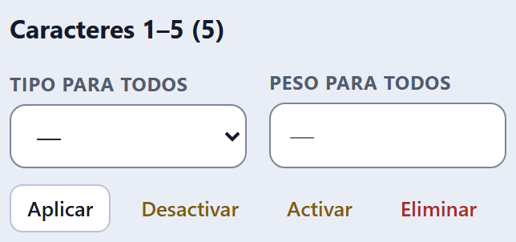
Un cladograma con una foto o un dibujo junto a cada nombre se lee de un vistazo: el lector ve las plantas, no sólo sus nombres. La tarjeta Imágenes de los taxones guarda una imagen por taxón, encuadrada en un cuadrado como se verá junto a su nombre en los cladogramas de los Bloques 5 y 10. Arriba dice cuántos taxones tienen ya su imagen confirmada; cada taxón tiene su recuadro, con la etiqueta lista, sin confirmar o sin imagen.
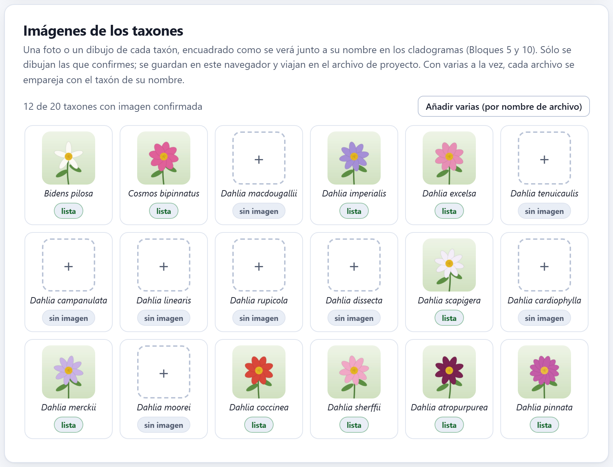
Hay dos maneras de añadir imágenes. Una por una: clic en el recuadro de un taxón (o Añadir una imagen… en el inspector del taxón) abre el editor de la figura 2.8. Varias a la vez: Añadir varias (por nombre de archivo) pide un grupo de archivos y empareja cada uno con el taxón de su nombre —Dahlia_coccinea.jpg va con Dahlia coccinea; los guiones bajos, las mayúsculas y la extensión no importan, y basta con que el nombre del taxón esté dentro del nombre del archivo—. Una ventana muestra cada archivo con el taxón que le tocó, para corregir lo que haga falta, y pide un crédito y una licencia comunes.
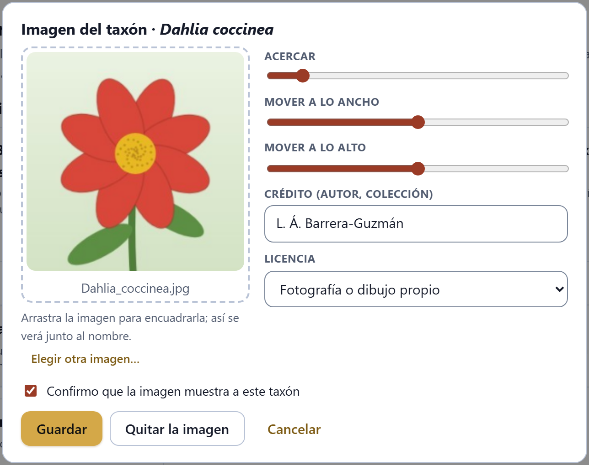
En el editor, la imagen se encuadra arrastrándola con el ratón o con los controles Acercar (hasta cuatro veces), Mover a lo ancho y Mover a lo alto: lo que queda dentro del cuadrado es lo que se dibujará. Elegir otra imagen… la cambia. Debajo van el Crédito (autor, colección) y la Licencia: Fotografía o dibujo propio, CC BY 4.0, CC BY-SA 4.0, CC BY-NC 4.0, CC0 (dominio público) o Con permiso del autor. El Bloque 10 arma con ellos la línea de créditos de la figura. Se aceptan las imágenes que el navegador sabe abrir (JPG, PNG, WebP…); las muy grandes se reducen a 1400 píxeles por lado, suficiente para cualquier figura impresa.
Una foto equivocada junto a un nombre engaña más que ninguna foto. Por eso cada imagen lleva la casilla Confirmo que la imagen muestra a este taxón, y sólo las confirmadas aparecen en los cladogramas; las demás se guardan con la etiqueta sin confirmar hasta que alguien las revise. Al añadir varias a la vez, la confirmación es para todas: si el emparejamiento por nombre no te da plena seguridad, deja la casilla sin marcar y confírmalas una por una.
Las imágenes se guardan en la base de datos del navegador, junto con la matriz, y viajan en el proyecto .json (sección 2.8): quien abra el proyecto en otra computadora las recibe con su encuadre, su crédito y su licencia. Los formatos NEXUS, xread y las tablas no las guardan. Quitar la imagen, en el editor, la borra.
Antes de buscar árboles conviene una revisión que ningún ojo hace bien en una matriz de cientos de celdas. La tarjeta Control de calidad la hace sola, cada vez que la matriz cambia, y separa lo que encuentra en tres niveles. El selector Mostrar filtra por nivel, y el botón Ir de cada línea lleva a la celda, al carácter o al taxón del problema, seleccionado en el editor y con su inspector abierto.
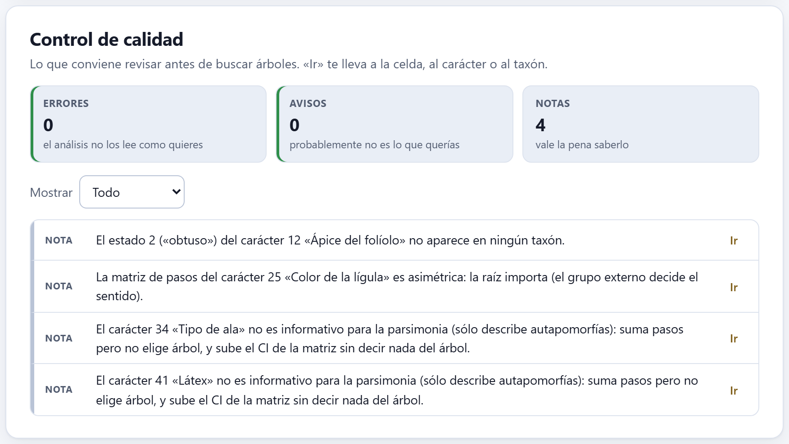
| Nivel | En la app | Qué hacer |
|---|---|---|
| Errores | el análisis no los lee como quieres | Corregirlos siempre antes de buscar: el resultado no significaría lo que crees. |
| Avisos | probablemente no es lo que querías | Leer cada uno y decidir; a veces son intencionales, como un taxón fósil con muchos faltantes. |
| Notas | vale la pena saberlo | Información para el informe; no exigen cambiar nada. |
La matriz de práctica está limpia de errores y avisos, y deja cuatro notas que vale la pena entender. Primera: el estado 2 («obtuso») del carácter 12 no aparece en ningún taxón; es un estado previsto en la lista que ninguna especie de la muestra tiene, algo normal si la lista se escribió para todo el género. Segunda: la matriz de pasos del carácter 25 es asimétrica, así que el grupo externo decide el sentido de los cambios de color. Tercera y cuarta: el 34 y el 41 no son informativos (sección 2.3).
La lista completa de lo que se revisa, con el texto que aparece en la app:
| Nivel | Mensaje | Qué hacer |
|---|---|---|
| Error | El taxón N no tiene nombre · Los taxones N y M se llaman igual | Nombrarlos; dos nombres iguales no se distinguen en un árbol. |
| Error | Todos los taxones están marcados como grupo externo | Desmarcar el grupo interno. |
| Error | El carácter N es continuo pero tiene celdas con estados, o discreto pero tiene valores numéricos · …el intervalo va de mayor a menor | Cambiar el tipo o recodificar la columna; en un intervalo, el menor va primero: 2.1-3.4. |
| Error | El carácter N usa el estado S, que no tiene nombre | Añadir el estado con + Estado o corregir la celda. |
| Error | El carácter N es una matriz de pasos pero le faltan costos | Llenar la tabla de costos. |
| Error | …es «–», pero el carácter M dice que la estructura existe · …tiene un estado, pero el carácter M dice que la estructura no existe | Corregir la celda o usar Poner «–» donde no aplica. |
| Error | T no tiene ningún dato | Codificarlo o desactivarlo: no se puede colocar en el árbol. |
| Aviso | No hay grupo externo | Elegirlo; si no, la raíz será el primer taxón. |
| Aviso | Los caracteres N y M tienen el mismo enunciado | Ver si es el mismo carácter dos veces: contaría doble. |
| Aviso | El carácter N es invariable | Revisar la codificación; no aporta nada al análisis. |
| Aviso | Carácter ordenado N, T: el polimorfismo no es contiguo | Un (02) ordenado se lee como (012); corregir si no es lo que se quiere. |
| Aviso | El carácter N falta en X de Y taxones (más de la mitad) | Pensar si vale la pena conservarlo. |
| Aviso | A T le falta el X % de los datos: puede ser un comodín (más de la mitad) | Esperar politomías en el consenso; el Bloque 8 los identifica (Kearney 2002). |
| Nota | El carácter N no tiene enunciado | Escribirlo antes de publicar la lista. |
| Nota | El estado S del carácter N no aparece en ningún taxón | Nada, si es un estado previsto; quitarlo, si es un resto. |
| Nota | El carácter N no es informativo para la parsimonia | Saberlo al comparar el CI. |
| Nota | …un cambio directo cuesta más que pasar por otro estado · La matriz de pasos… es asimétrica | Revisar los costos; en una asimétrica, elegir bien el grupo externo. |
| Nota | El carácter N tiene «–» pero no dice de qué carácter depende | Declarar la dependencia para que se revise cada «–». |
| Nota | …es «?» donde la estructura no existe; «–» es más exacto | Cambiar a «–» (sección 2.1). |
| Nota | T y U tienen exactamente los mismos datos | Ningún árbol los separa; quedarán juntos. |
| Si hay errores | entonces no busques todavía: corrígelos con Ir. |
| Si sólo hay avisos | entonces lee cada uno; los que sean intencionales, anótalos para el informe. |
| Si sólo hay notas | entonces la matriz está lista para el Bloque 3. |
La tarjeta Lista de caracteres escribe la matriz como se publica en un artículo o en su material suplementario: cada carácter con su número, su enunciado, sus estados numerados y, entre corchetes, su tipo y, si la tiene, su dependencia («aplicable sólo si 5 = presentes»).
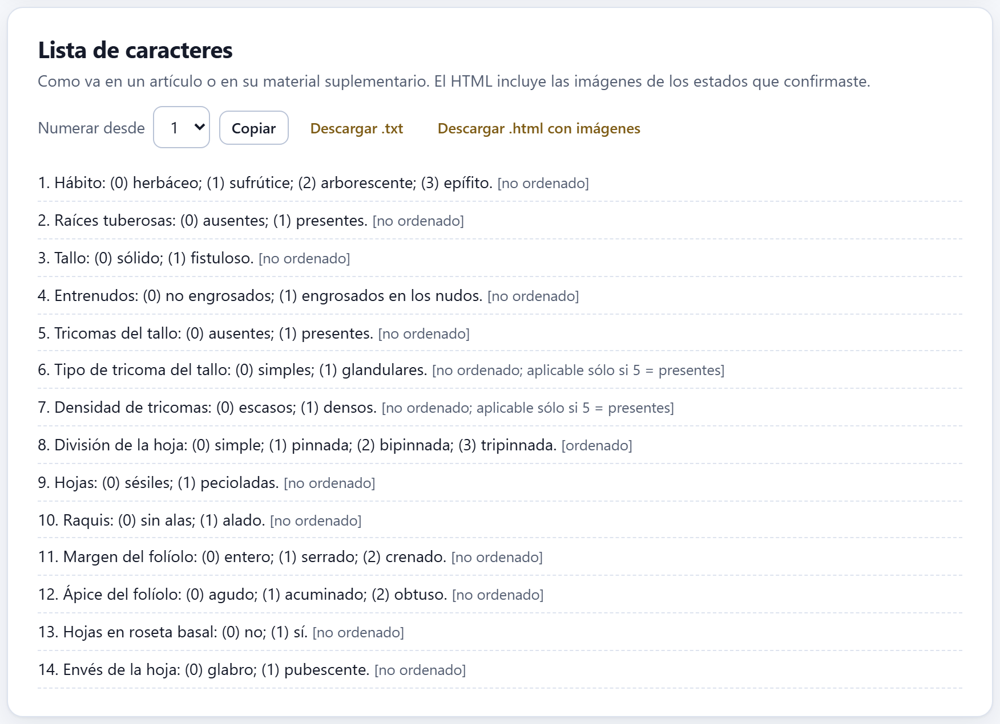
Numerar desde elige si el primer carácter es el 1, como se acostumbra en los artículos, o el 0, como numeran los caracteres algunos programas de parsimonia; conviene que la lista publicada use la misma numeración que el texto. Copiar la deja en el portapapeles; Descargar .txt la guarda como texto, y Descargar .html con imágenes la guarda como página web con las imágenes de los estados que se confirmaron con el botón ▣ del inspector: una lista ilustrada para el material suplementario.
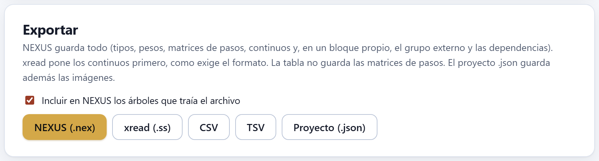
| Botón | Qué guarda |
|---|---|
| NEXUS (.nex) | Todo lo de la matriz: tipos, pesos, matrices de pasos, caracteres inactivos y, en su propio bloque de caracteres, los continuos. El grupo externo, las dependencias, las unidades, las notas y los taxones inactivos van en el bloque CLADISTICSPRO. Con la casilla Incluir en NEXUS los árboles que traía el archivo, añade el bloque TREES que venía en el archivo de origen (Dahlia trae uno, arbol_verdadero). |
| xread (.ss) | La matriz para los programas clásicos de parsimonia, con los continuos primero, como exige el formato, y los tipos, pesos y caracteres inactivos en ccode. |
| CSV · TSV | Para hoja de cálculo o R: filas # estados, # tipo y, si hacen falta, # peso, # depende y # activo; polimorfismos [01] e intervalos 2.1–3.4, que la hoja de cálculo no altera. Sin matrices de pasos. |
| Proyecto (.json) | Todo lo anterior y además las imágenes de los taxones y de los estados. Es el respaldo completo: el archivo para guardar el trabajo, pasarlo a otra computadora o entregarlo a un coautor. |
El bloque CLADISTICSPRO sigue la regla del formato NEXUS para bloques privados: cualquier otro lector lo salta sin error. Así, el mismo archivo abre en la app con todo su detalle y en cualquier otro programa con la matriz, los tipos, los pesos y los árboles. El archivo que se archiva con un artículo puede ser este.
| Mensaje | Qué significa y qué hacer |
|---|---|
| Matriz leída: N taxones × M caracteres | La lectura salió bien. Debajo pueden venir notas de cómo se leyó el archivo. |
| Es una matriz simulada sobre un árbol conocido… | Recordatorio al cargar una matriz de práctica: sirve para aprender y probar, no para concluir nada sobre esas plantas. |
| No se pudo leer la matriz: … | Después de los dos puntos va la causa: el archivo NEXUS no tiene bloque de caracteres, no se encontró la palabra xread, la tabla necesita un encabezado y al menos una fila, no es un proyecto de CladisticsPro… Debajo, la lista de formatos que se leen. |
| Se omitió el bloque X, que esta app no usa | Nota de lectura: un bloque NEXUS ajeno a la matriz (por ejemplo, de otro programa) se saltó sin consecuencias. |
| Símbolos que no son estados se leyeron como «?» · «v» en T, carácter N: …; se leyó como «?» | Una celda con algo que no es un estado. Buscarla en el editor y corregirla. |
| El encabezado dice N caracteres y la matriz trae M · «T» tiene N celdas y se esperaban M; se completó con «?» o se recortó | El archivo no cuadra consigo mismo. Revisar las filas señaladas: un carácter de más o de menos corre toda la fila. |
| N peso(s) con decimales o negativos se redondearon… · Tipo de carácter desconocido…; se dejó sin ordenar | El archivo traía algo que la app interpretó de la manera más cercana. Revisar el carácter en el inspector. |
| La matriz necesita al menos un carácter · Un análisis necesita al menos tres taxones | Se intentó borrar demasiado. |
| Para eliminar, selecciona columnas enteras o filas enteras | Eliminar la selección sólo borra caracteres o taxones completos: clic en el número de la columna o en el nombre de la fila. |
| Las columnas continuas no reciben estados: escribe un valor con Intro | Se tecleó un estado sobre un carácter continuo. |
| N celdas usan el estado S. Al quitarlo, las que sólo tienen ese estado quedarán en «?». ¿Seguir? | Confirmación antes de quitar un estado usado. Se puede deshacer. |
| Pasar de continuo a discreto borra los N valores de esta columna… | Confirmación antes de cambiar el tipo de un carácter con datos. |
| El archivo no es una imagen · El navegador no pudo abrir la imagen | Al añadir la imagen de un taxón. Guardarla como JPG o PNG y volver a intentarlo. |
Con la matriz lista, el Bloque 3 busca los árboles que necesitan menos cambios. Dice qué va a leer y cómo trata los inaplicables y los continuos; ofrece la búsqueda exacta, que garantiza el resultado en matrices pequeñas, y tres búsquedas heurísticas para las grandes; admite grupos obligados o prohibidos; reparte el trabajo entre los núcleos de la computadora, y entrega la longitud, los índices, cuántas réplicas llegaron al óptimo, la curva de la búsqueda, los árboles empatados y su consenso estricto, listos para los bloques siguientes.
El criterio de parsimonia elige el árbol que explica la matriz con el menor número de cambios: el que obliga a suponer menos homoplasia (Farris 1983). Calcular cuántos pasos necesita un árbol es rápido; lo difícil es encontrar el más corto entre todos los posibles.
Con n taxones hay (2n − 5)!! árboles sin raíz: el producto 3 × 5 × 7 × … × (2n − 5). Con los 8 taxones de Bursera son 10 395; con los 20 de Dahlia, unos 2 × 1020 (la app escribe 10^20.3); con 120, un número de 229 cifras. Ninguna computadora los revisa todos más allá de una docena de taxones, y por eso hay dos familias de métodos:
Una réplica heurística tiene dos pasos. Primero, la adición de Wagner (Farris 1970): los taxones entran en un orden al azar, cada uno en la rama donde alarga menos el árbol. Después, el intercambio TBR (tree bisection and reconnection; Swofford y Olsen 1990): se corta cada rama del árbol, el subárbol que queda suelto se re-enraíza en cada una de sus ramas y se prueba unido a cada rama del resto; si algún reacomodo acorta el árbol, se acepta y se empieza otra vez. La réplica termina cuando ningún TBR acorta el árbol. Como el orden de entrada es al azar, cada réplica empieza en un lugar distinto del paisaje de la figura 3.1.
Las búsquedas más fuertes añaden maneras de salir de los valles. El ratchet (Nixon 1999) repite ciclos en los que cambia al azar el peso de una fracción de los caracteres, mejora el árbol con esos pesos falsos —lo que lo empuja fuera del valle—, devuelve los pesos verdaderos y lo mejora otra vez. La búsqueda sectorial, la deriva y la fusión de árboles (Goloboff 1999) resuelven por partes un árbol grande, aceptan de vez en cuando reacomodos que lo alargan un poco, y combinan los mejores grupos de árboles distintos.
Un TBR completo sobre un árbol de 120 taxones prueba decenas de miles de reacomodos. El motor no rearma cada uno: al cortar una rama, las dos mitades conservan su longitud, y la del árbol unido depende sólo de qué caracteres tienen conjuntos de estados disjuntos en las dos ramas que se unen (Goloboff 1996). Además, los caracteres no ordenados se guardan de 32 en 32 en cada palabra de la máquina, así que un paso de Fitch evalúa 32 caracteres a la vez, y los ordenados entran como su codificación binaria aditiva (Farris, Kluge y Eckardt 1970). Las matrices de pasos y los caracteres con inaplicables se optimizan uno por uno, sólo para los reacomodos que pasan el primer filtro.
La primera tarjeta del bloque resume lo que la búsqueda va a leer y deja decidir cómo tratar los dos tipos de dato que admiten más de una lectura: los inaplicables y los continuos. Si no hay matriz, el bloque muestra «Primero hace falta una matriz» y un botón para ir al Bloque 2.
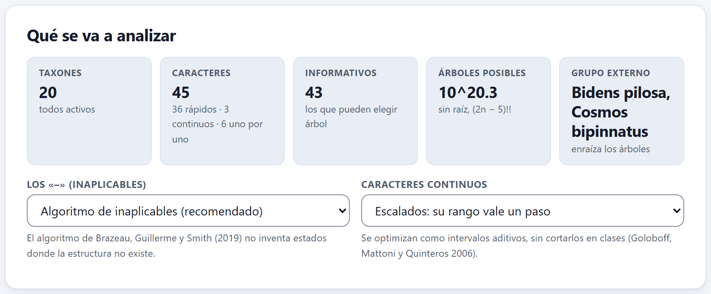
| Recuadro | Qué dice | En Dahlia |
|---|---|---|
| Taxones | Los taxones activos; los inactivos se quedan fuera de la búsqueda. | 20, todos activos |
| Caracteres | Cuántos se evalúan por la vía rápida (no ordenados y ordenados, de 32 en 32), cuántos como intervalos (continuos) y cuántos uno por uno (matrices de pasos y caracteres con «–» leídos por el algoritmo). | 36 rápidos · 3 continuos · 6 uno por uno |
| Informativos | Los que pueden elegir entre árboles. | 43 |
| Árboles posibles | (2n − 5)!! árboles sin raíz; con muchos taxones se escribe como potencia de 10. | 10^20.3 |
| Grupo externo | Los taxones donde se enraízan los árboles. | Bidens pilosa, Cosmos bipinnatus |
El selector Los «–» (inaplicables) sólo aparece si la matriz tiene «–». Con Algoritmo de inaplicables (recomendado), la app usa el algoritmo de Brazeau, Guillerme y Smith (2019), que no inventa estados donde la estructura no existe (sección 2.1). Con Leerlos como «?», cada «–» se trata como un dato faltante: es lo que hacían los programas clásicos, más rápido pero con el riesgo de semejanzas fabricadas; sirve para comparar con un análisis publicado así.
El selector Caracteres continuos sólo aparece si hay caracteres continuos activos. Se optimizan como intervalos aditivos, sin cortarlos en clases (Goloboff, Mattoni y Quinteros 2006), y la pregunta es cuánto pesan: Escalados: su rango vale un paso divide cada carácter entre su rango, de modo que ir del valor más bajo al más alto de la matriz cuesta un paso, lo mismo que un cambio en un carácter discreto; En sus unidades cuenta la diferencia tal cual (un carácter en centímetros pesa cien veces más que el mismo en metros), y Excluirlos los deja fuera de la búsqueda.
Con los continuos escalados, la opción por omisión, el árbol más corto mide 97.036 pasos y empatan 6 árboles, 2 distintos al colapsar. En sus unidades, las tres medidas —dos en centímetros, una en milímetros— ponen la mayor parte de la longitud: el árbol mide 1346.3 pasos, empatan sólo 3 y la topología cambia; D. linearis, por ejemplo, pasa a ser hermana del grupo de las dalias arborescentes. Excluidos, los 42 caracteres discretos dan árboles de 94 pasos, pero empatan 108 (4 distintos al colapsar) y el consenso pierde resolución: las medidas eran las que desempataban. Por último, leer los «–» como «?», con los continuos escalados, da un solo árbol de 97.032 pasos con otro arreglo de los grupos: es el efecto de las semejanzas que el «?» permite inventar.
La tarjeta Método y parámetros ofrece cinco métodos. El seleccionado se ve resaltado, y debajo una línea explica qué conviene esperar de él. Con Automático, la línea dice cuál eligió: con los 20 taxones de Dahlia, «Elegido: Ratchet. Una búsqueda heurística no garantiza el óptimo: lo que da confianza es que muchas réplicas lleguen a la misma longitud».
| Método | Qué hace | Cuándo |
|---|---|---|
| Automático | Elige por el número de taxones activos: exacta hasta 12; ratchet de 13 a 60; combinada con más de 60. | Siempre es un buen punto de partida. |
| Exacta | Rama y cota, con la cota inicial de una réplica heurística. Garantiza todos los árboles más cortos. | Hasta 12 a 14 taxones. Con más de 14, la app advierte que puede tardar horas. |
| Heurística | Adición de Wagner al azar más TBR, varias réplicas. | Matrices fáciles o una primera exploración. |
| Ratchet | Cada réplica sigue con ciclos de reponderación (Nixon 1999). | De 13 a unos 60 taxones. |
| Combinada | Ratchet, búsqueda sectorial, deriva y, al final, fusión de los mejores árboles de todas las réplicas (Goloboff 1999). | Más de 60 taxones o matrices difíciles. |
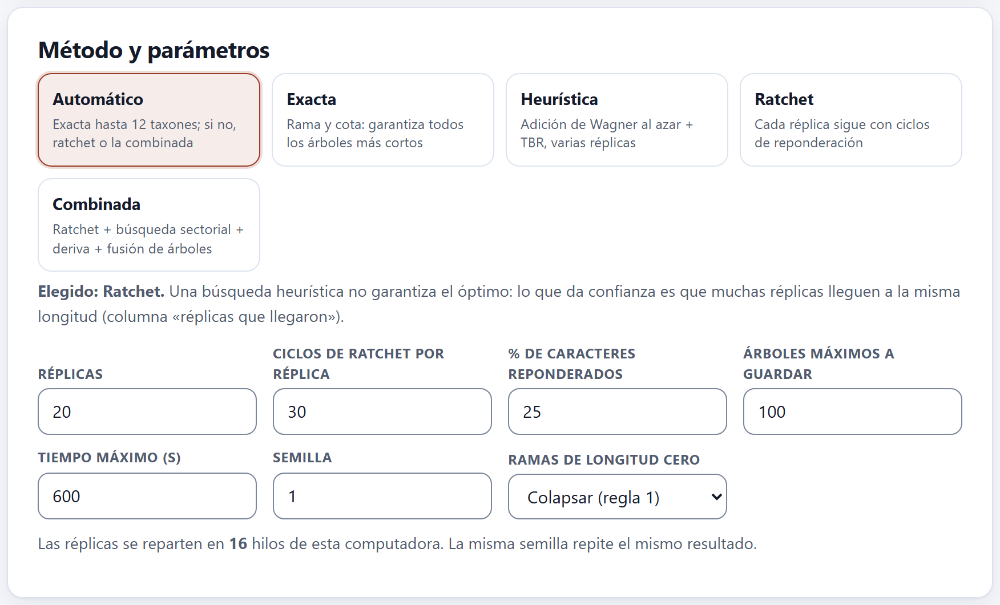
| Parámetro | Qué controla | Por omisión |
|---|---|---|
| Réplicas | Cuántas búsquedas independientes, cada una desde su propia adición de Wagner. No aparece con la exacta. | 20 |
| Ciclos de ratchet por réplica | Cuántas veces se perturban los pesos en cada réplica (ratchet y combinada). | 30 |
| % de caracteres reponderados | La fracción de caracteres cuyo peso cambia en cada ciclo (de 5 a 60 %). | 25 % |
| Árboles máximos a guardar | El tope de árboles empatados que se conservan. Si se alcanza, la app avisa que puede haber más. | 100 |
| Tiempo máximo (s) | La búsqueda se detiene al cumplirse y entrega lo mejor que encontró. | 600 |
| Semilla | El punto de partida del azar: la misma semilla, con los mismos datos y parámetros, repite el mismo resultado. | 1 |
| Ramas de longitud cero | Colapsar (regla 1) junta en una politomía cada rama que puede medir cero (Coddington y Scharff 1994); No colapsar deja los árboles binarios. | Colapsar |
La última línea de la tarjeta dice en cuántos hilos se reparten las réplicas: la app usa los núcleos del procesador (hasta 16), cada uno con su parte de las réplicas, y al final junta los árboles de todos. En la computadora de las figuras son 16. Cada hilo recibe una semilla derivada de la principal, así que en la misma computadora la misma semilla da siempre los mismos árboles. En otra con distinto número de núcleos las réplicas se reparten de otro modo y el camino de cada una cambia; una búsqueda que convergió llega, de todos modos, a la misma longitud.
Dos árboles binarios que sólo difieren en una rama sin cambios no son dos hipótesis distintas: los datos no dicen nada sobre esa rama. La regla 1 de Coddington y Scharff (1994) colapsa una rama cuando, para cada carácter, alguna reconstrucción igual de parsimoniosa no pone ningún cambio en ella. Así, varios árboles binarios se reducen a uno con una politomía, y el recuadro Árboles más cortos dice cuántos quedan distintos. Contar los árboles binarios inflaría la incertidumbre: los seis árboles de Dahlia son sólo dos al colapsar.
| Si hay 12 taxones o menos | entonces la exacta: el resultado está garantizado y tarda segundos. |
| Si hay de 13 a 60 | entonces el ratchet con 20 réplicas; si menos del 30 % de las réplicas llegan a la mejor longitud, sube las réplicas o pasa a la combinada. |
| Si hay más de 60 | entonces la combinada; repítela con otra semilla y comprueba que llega a la misma longitud. |
| Si se llegó al máximo de árboles guardados | entonces sube el tope y repite: el consenso puede estar incompleto. |
| Si la búsqueda se detuvo por tiempo | entonces el resultado no es el definitivo: sube el tiempo máximo o reduce las réplicas. |
Una restricción obliga a que un grupo sea monofilético o prohíbe que lo sea. Sirve para preguntar cuánto cuesta una hipótesis: si el grupo que propone una clasificación no aparece en el árbol más corto, ¿cuántos pasos más hacen falta para que aparezca? La búsqueda con la restricción responde con un número, y el Bloque 9 convierte esa diferencia en una prueba estadística.
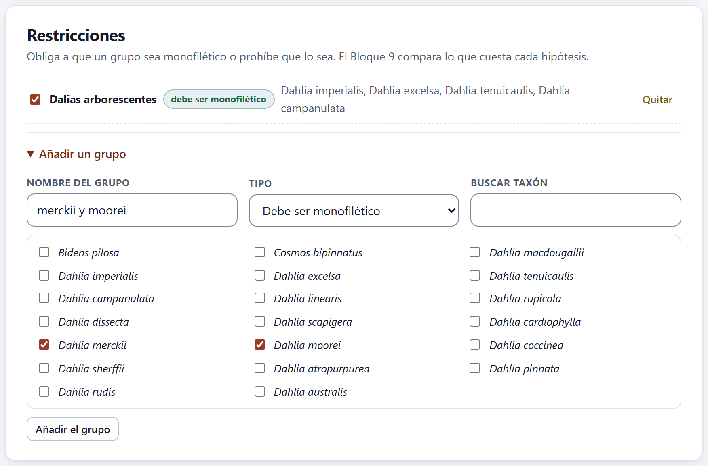
Las restricciones activas valen para todas las búsquedas siguientes del Bloque 3 y también para las del Bloque 4. El apoyo del Bloque 7 se calcula sin ellas.
Sin restricciones, el árbol más corto mide 97.036 pasos. Si se obliga a que D. merckii y D. moorei formen un grupo, la búsqueda encuentra 2 árboles de la misma longitud: el grupo ya estaba en dos de los seis árboles más cortos; los datos lo admiten, pero no lo exigen. Si, en cambio, se prohíbe que las cuatro dalias arborescentes (D. imperialis, D. excelsa, D. tenuicaulis y D. campanulata) formen un grupo, el árbol más corto mide 99.080: separar a esas cuatro especies cuesta 2.04 pasos. Si esa diferencia es mayor de lo que el azar explicaría es lo que contesta el Bloque 9.
El botón Buscar abre la ventana de espera (figura 3.5): una animación, el avance con el tiempo que falta, la mejor longitud encontrada hasta el momento («Mejor hasta ahora: …»), un consejo sobre la app que cambia cada pocos segundos y el botón Cancelar, que detiene la búsqueda sin cambiar nada. Al final, mientras colapsa las ramas y calcula los índices, dice cuántos árboles lleva de cuántos. Al terminar, la tarjeta Resultados de la búsqueda resume lo encontrado en seis recuadros.
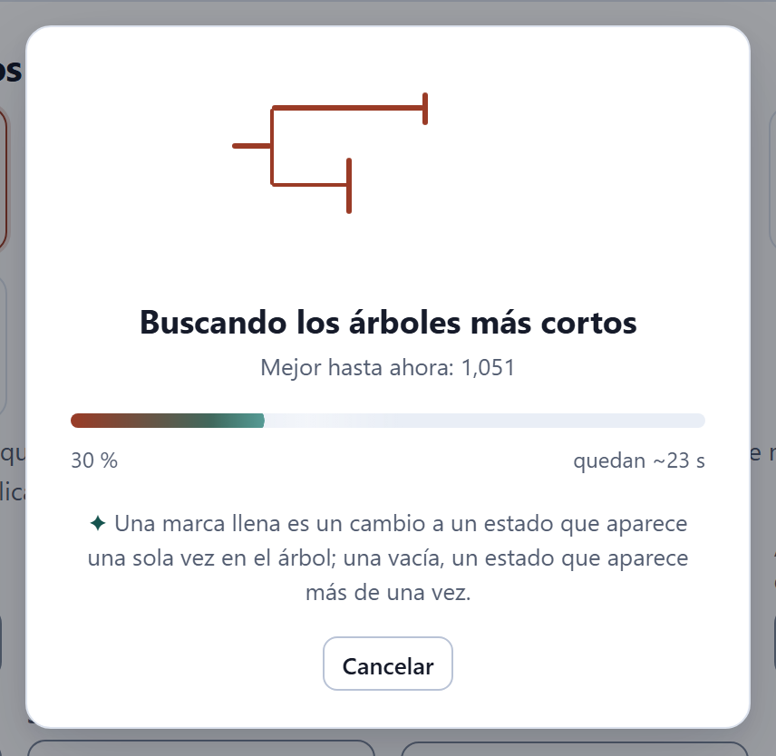
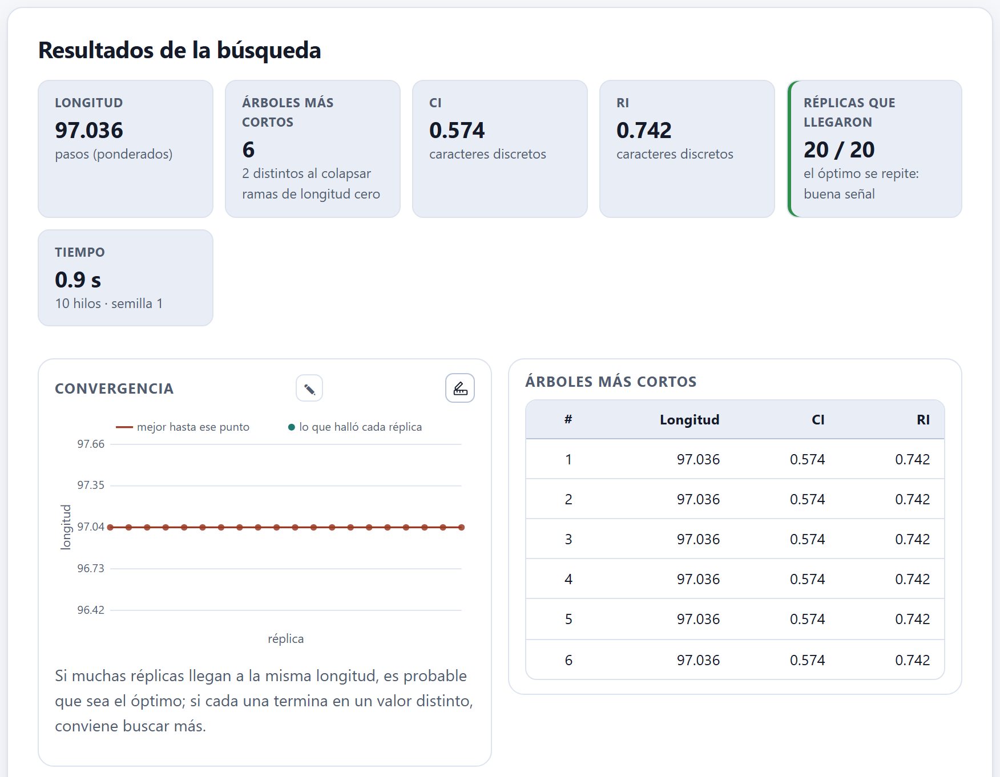
| Recuadro | Qué dice | En Dahlia |
|---|---|---|
| Longitud | Los pasos del árbol más corto, con los pesos de cada carácter. Con continuos escalados lleva decimales. | 97.036 |
| Árboles más cortos | Cuántos árboles binarios empatan y cuántos quedan distintos al colapsar las ramas que pueden medir cero. | 6; 2 distintos |
| CI · RI | El índice de consistencia y el de retención del primer árbol, calculados sobre los caracteres discretos (Kluge y Farris 1969; Farris 1989). El Bloque 6 los da carácter por carácter. | 0.574 · 0.742 |
| Réplicas que llegaron | Cuántas réplicas encontraron la mejor longitud. Con el 30 % o más, la app lo marca como buena señal; con menos, aconseja buscar más. | 20 / 20 |
| Tiempo | Lo que tardó, los hilos que usó y la semilla. | alrededor de 1 s |
Editar la matriz descarta la búsqueda (sección 2.2). Los resultados del Bloque 3 también se descartan al terminar una búsqueda nueva, y con ellos el cladograma, el diagnóstico, el apoyo, los consensos y las hipótesis, que dependían de los árboles anteriores. Si por alguna razón quedara a la vista una búsqueda hecha con otra matriz, un aviso ámbar lo dice: «La matriz cambió después de esta búsqueda: conviene repetirla».
Con la búsqueda exacta, el recuadro de las réplicas cambia: dice Exacta ✓ y «rama y cota: no hay árboles más cortos»; si se agotó el tiempo, dice «incompleta» y advierte que el resultado no está garantizado. En Bursera, la búsqueda exacta encuentra en un instante un solo árbol de 17 pasos, con CI 0.706 y RI 0.762 (figura 3.7).
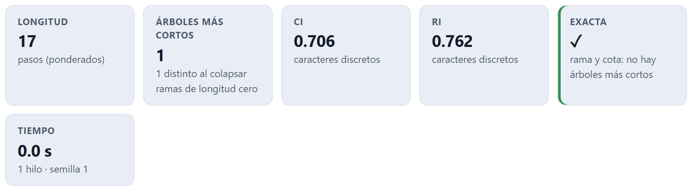
La gráfica Convergencia es la forma de saber si una búsqueda heurística terminó bien. Cada punto es una réplica, en el eje horizontal, con la longitud que encontró en el vertical; la línea es la mejor longitud hasta esa réplica. Los puntos del color principal llegaron a la mejor longitud de ese momento; los del color de acento se quedaron en un árbol más largo.
En Dahlia la gráfica es plana: las 20 réplicas llegaron a 97.036 desde la primera (figura 3.8 A). La matriz grande se comporta igual: con los valores por omisión —la búsqueda combinada, porque tiene más de 60 taxones— las 20 réplicas llegan a 1051 pasos en unos 47 segundos, y hasta la heurística simple, sin ratchet, llega en 3 segundos. Son matrices simuladas sobre un árbol conocido, con poca homoplasia; con datos reales, sobre todo con muchos taxones y mucha homoplasia, la gráfica se parece más a la de la figura 3.8 B.
La matriz grande enseña, además, el otro aviso: con los valores por omisión guarda 100 árboles, el máximo, y el recuadro dice «se llegó al máximo guardado: puede haber más». En efecto, hay más de 1000 árboles de 1051 pasos. Con tantos árboles empatados no importa guardarlos todos, sino que el consenso no cambie: sube el tope —a 1000, por ejemplo— y compara el consenso estricto con el anterior. Colapsar y medir 1000 árboles de 120 taxones toma alrededor de un minuto, con su avance en la ventana de espera.
| Si muchas réplicas llegan a la mejor longitud y la línea se aplana pronto | entonces es muy probable que sea el óptimo. |
| Si sólo una o dos réplicas llegan, o la línea sigue bajando en las últimas | entonces busca más: más réplicas, más ciclos de ratchet o la combinada. |
| Si otra semilla da una longitud menor | entonces la primera búsqueda no había llegado: quédate con la menor y vuelve a repetir hasta que dos semillas coincidan. |
La tabla Árboles más cortos, a la derecha de la convergencia, lista cada árbol empatado con su longitud, su CI y su RI. Debajo, el selector Mostrar dibuja el Consenso estricto —la opción por omisión, con el número de árboles distintos entre paréntesis— o cualquiera de los árboles, enraizado en el grupo externo.
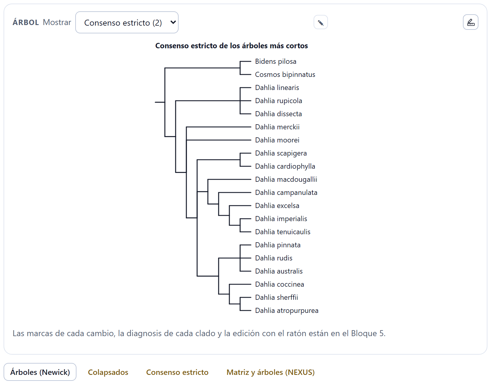
El consenso estricto conserva sólo los grupos que están en todos los árboles; lo que los árboles no comparten se vuelve una politomía. Se arma con los árboles ya colapsados, así que también quedan como politomías las ramas que la regla 1 colapsó. En Dahlia, los seis árboles binarios difieren en dos lugares: el orden de D. linearis, D. dissecta y D. rupicola, y la posición de D. merckii y D. moorei respecto al resto del género. Además, dos ramas pueden medir cero en todos ellos —la que une a D. rudis con D. pinnata y la que junta al grupo de las arborescentes con el de D. coccinea y D. pinnata— y también salen como politomías.
Lo que sí comparten los seis es el género completo, el grupo de D. linearis, el de las dalias arborescentes con D. macdougallii, el de D. coccinea con D. sherffii y D. atropurpurea, el de D. pinnata, D. rudis y D. australis, y el par D. scapigera y D. cardiophylla. El Bloque 8 compara este consenso con los otros cuatro; el Bloque 5 dibuja cada árbol con sus cambios.
| Botón | Qué descarga |
|---|---|
| Árboles (Newick) | Todos los árboles más cortos, binarios, uno por línea (…_arboles.nwk). |
| Colapsados | Los árboles distintos después de colapsar las ramas que pueden medir cero (…_colapsados.nwk). |
| Consenso estricto | El consenso, en Newick (…_estricto.nwk). |
| Matriz y árboles (NEXUS) | La matriz completa con los árboles mpt_1, mpt_2… y consenso_estricto en un bloque TREES: un solo archivo con todo lo de la búsqueda (…_busqueda.nex). |
| Mensaje | Qué significa y qué hacer |
|---|---|
| Primero hace falta una matriz | No hay matriz cargada. Ir a la matriz lleva al Bloque 2. |
| Con N taxones la búsqueda exacta puede tardar horas o no terminar: conviene la heurística | Se eligió la exacta con más de 14 taxones. Puede intentarse, con el tiempo máximo como red de seguridad. |
| Un grupo necesita al menos 2 taxones y dejar fuera al menos 2 | Al añadir una restricción con muy pocos o con casi todos los taxones. |
| pocas réplicas llegaron: conviene buscar más | Menos del 30 % de las réplicas llegaron a la mejor longitud (sección 3.6). |
| se llegó al máximo guardado: puede haber más | Hay más árboles empatados que el tope. Súbelo y repite. |
| Exacta · incompleta · se agotó el tiempo: el resultado no está garantizado | La rama y cota no terminó. Sube el tiempo máximo o usa una heurística. |
| La matriz cambió después de esta búsqueda: conviene repetirla | Los resultados no corresponden a la matriz actual. |
| Una sola corrida: no hay curva que mostrar | En la gráfica de convergencia, con la exacta o con una sola réplica. |
| La búsqueda falló: … | Después de los dos puntos va la causa; por ejemplo, hacen falta al menos tres taxones activos. |
Con pesos iguales, todos los caracteres cuentan lo mismo, aunque unos cambien una vez en todo el árbol y otros cinco. El Bloque 4 repite la búsqueda dando menos peso a los caracteres que más homoplasia muestran: con pesos implícitos, con su versión extendida para matrices con datos faltantes o con pesos sucesivos, y prueba varios valores de la constante de concavidad para separar los grupos que dependen de esa elección de los que resisten cualquiera.
La búsqueda del Bloque 3 cuenta un paso de cada carácter igual que un paso de cualquier otro. Pero un carácter que en el árbol más corto cambia cinco veces ya mostró que sus estados se repiten por convergencia o reversión; uno que cambia una sola vez se comportó como una buena homología. ¿Deben pesar lo mismo?
Pesar a priori —decidir antes del análisis que los caracteres florales valen el doble— exige argumentos que casi nunca se tienen. Los métodos de este bloque pesan a posteriori: el peso de cada carácter sale de la homoplasia que muestra en los árboles, de modo que los datos mismos dicen en cuáles confiar menos. Hay dos maneras de hacerlo. Los pesos sucesivos (Farris 1969) buscan, miden qué tan bien se ajusta cada carácter a los árboles encontrados, le dan un peso según ese ajuste y vuelven a buscar hasta que los pesos dejan de cambiar. Los pesos implícitos (Goloboff 1993) cambian el criterio mismo: en vez del árbol con menos pasos, buscan el árbol con menos homoplasia ponderada, donde cada paso extra de un carácter cuesta menos que el anterior.
Dos árboles para la misma matriz. En el árbol A, toda la homoplasia está en un solo carácter, que necesita 10 pasos extra. En el árbol B, 8 caracteres necesitan 1 paso extra cada uno. Con pesos iguales gana B: 8 pasos extra contra 10. Con pesos implícitos y k = 3, cada carácter suma h/(h + k): A suma 10/13 = 0.77 y B suma 8 × 1/4 = 2.00, así que gana A. Los pesos implícitos prefieren concentrar la homoplasia en pocos caracteres —los que se declaran poco confiables— y que el resto se comporte como homologías limpias.
La tarjeta Esquema de pesos ofrece cuatro opciones. Debajo de ellas aparecen sólo los parámetros del esquema elegido y, para los implícitos, la curva que dice cuánto pesa un carácter según su homoplasia (figura 4.1). Analizar corre el esquema; la búsqueda usa el método, las réplicas, las restricciones y la lectura de «–» y de los continuos elegidos en el Bloque 3.
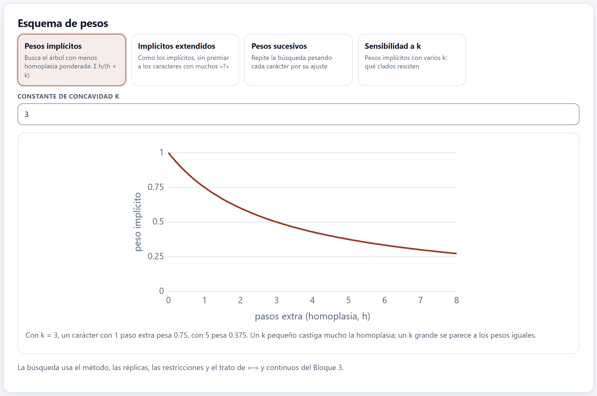
| Esquema | Qué hace | Parámetros |
|---|---|---|
| Pesos implícitos | Busca el árbol con la menor homoplasia ponderada, Σ h/(h + k) (Goloboff 1993). | Constante de concavidad k (3) |
| Implícitos extendidos | Lo mismo, pero sin premiar a los caracteres con muchos «?», que tuvieron menos oportunidades de mostrar homoplasia (Goloboff 2014). | k (3), r (0.5) y M (5) |
| Pesos sucesivos | Repite la búsqueda con pesos iguales a un índice de ajuste de cada carácter, hasta que los pesos se estabilizan (Farris 1969). | Índice (RC), Peso máximo (10), Con varios árboles, el valor (máximo) |
| Sensibilidad a k | Pesos implícitos con varios valores de k: qué clados resisten todos (Mirande 2009). | Valores de k a probar (1 2 3 5 7 10 15 20 30 50) y Con pesos extendidos |
Conviene correr primero el Bloque 3: el recuadro Frente a pesos iguales de los resultados compara el consenso con pesos con el de pesos iguales, y sin éste dice «corre el Bloque 3 para comparar». Cada análisis del Bloque 4 reemplaza al anterior del mismo bloque y descarta el cladograma, el diagnóstico, el apoyo, los consensos y las hipótesis; la búsqueda del Bloque 3 se conserva, y el Bloque 5 puede dibujar los árboles de cualquiera de los dos.
Con pesos implícitos, un carácter con h pasos extra —los que necesita en el árbol por encima del mínimo posible— aporta h/(h + k) a la homoplasia ponderada del árbol, y la búsqueda minimiza la suma. Visto al revés, su peso implícito es k/(k + h): 1 si no tiene homoplasia, y cada vez menos con cada paso extra. La constante de concavidad k dice qué tan rápido cae: con k = 3, un carácter con 1 paso extra pesa 0.75 y con 5 pesa 0.375; con k = 1 caen a 0.5 y 0.17; con k = 50, apenas a 0.98 y 0.91, casi como con pesos iguales.
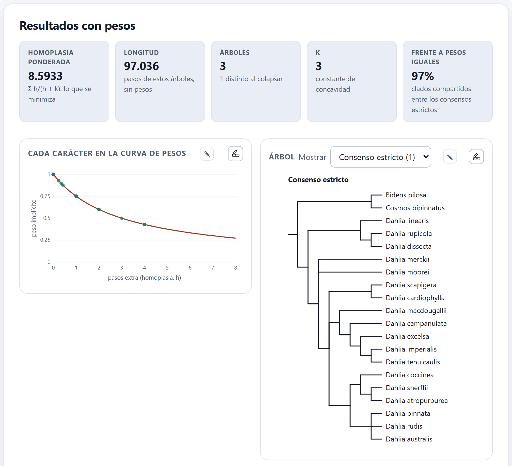
| Recuadro | Qué dice | En Dahlia, k = 3 |
|---|---|---|
| Homoplasia ponderada | Σ h/(h + k) del árbol más corto: lo que se minimiza. Sólo se compara entre análisis con el mismo k. | 8.5933 |
| Longitud | Los pasos de estos árboles contados sin pesos, para compararlos con el Bloque 3. | 97.036 |
| Árboles | Cuántos empatan y cuántos quedan distintos al colapsar. | 3; 1 distinto |
| k | La constante usada (con los extendidos, la de referencia). | 3 |
| Frente a pesos iguales | La proporción de clados que comparten este consenso estricto y el del Bloque 3. | 97 % |
En Dahlia, los pesos implícitos con k = 3 encuentran árboles de 97.036 pasos, la misma longitud que con pesos iguales: son tres de los seis árboles más cortos del Bloque 3. Al quedarse sólo con ellos, el consenso resuelve el grupo de D. linearis —D. rupicola y D. dissecta salen como hermanas— y todo lo demás coincide: 97 % de clados compartidos.
Un carácter con muchos «?» tiene menos taxones donde mostrar homoplasia, y los pesos implícitos lo premian sin querer: parece limpio porque no se observó.
Los implícitos extendidos (Goloboff 2014) suponen que en los datos faltantes hay una proporción r de la homoplasia observada en el resto. A cada carácter con faltantes le dan su propia concavidad, k/f, con f = 1 + r·(t − o)/o, donde t es el número de taxones y o los observados, sin pasar del Factor máximo (M); luego lo reescalan para que su primer paso extra cueste lo mismo que con k. Así, a igual homoplasia observada, un carácter con faltantes pesa un poco menos.
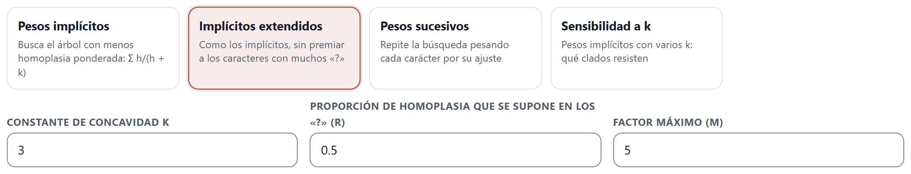
El carácter 1, «Hábito», falta en 2 de los 20 taxones de Dahlia y necesita 2 pasos extra. Con pesos implícitos pesa 3/(3 + 2) = 0.600. Con los extendidos y r = 0.5, f = 1 + 0.5 × 2/18 = 1.056: su concavidad baja a 2.84 y su peso, ya reescalado, a 0.564. El carácter 30, «Anteras», con 3 faltantes, tiene f = 1.088. En Dahlia, con tan pocos faltantes (4.6 %), los extendidos dan los mismos árboles que los implícitos; la homoplasia ponderada baja de 8.5933 a 8.5797. La diferencia crece en matrices con fósiles o con taxones mal conocidos.
A la izquierda de los resultados, la gráfica Cada carácter en la curva de pesos pone a cada carácter como un punto sobre la curva de k, en sus pasos extra del primer árbol (figura 4.2). Al pasar el ratón sobre un punto aparece su número y su enunciado. Los puntos en la parte alta de la curva son los caracteres que el análisis trata como homologías confiables; los de la derecha, los que castiga. Muchos caracteres comparten punto: en Dahlia, todos los que no tienen pasos extra están juntos en el peso 1.
La tabla Pesos por carácter da lo mismo en números, ordenada del carácter más castigado al menos: sus pasos, los pasos extra (h), su CI y su peso implícito; con los extendidos, además, sus faltantes y su factor f.
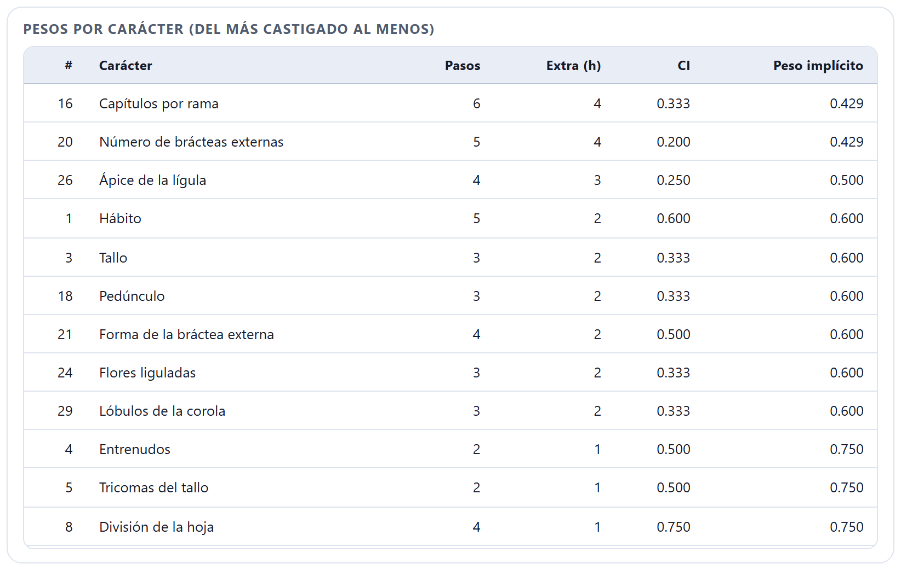
En Dahlia, los dos caracteres más castigados son el 16, «Capítulos por rama» (6 pasos donde bastarían 2; peso 0.429), y el 20, «Número de brácteas externas» (5 donde bastaría 1; peso 0.429); les sigue el 26, «Ápice de la lígula» (peso 0.500). Son los candidatos a revisar en la matriz: un carácter muy homoplásico puede ser una mala homología primaria —estados mal definidos, dos estructuras distintas con el mismo nombre— o, simplemente, un rasgo que evoluciona muchas veces.
Los pesos sucesivos no cambian el criterio: siguen buscando el árbol más corto, pero con pesos. En la primera vuelta, buscan con los pesos de la matriz; después, a cada carácter le dan un peso igual a su índice de ajuste en los árboles encontrados, multiplicado por el Peso máximo y redondeado a un entero, y vuelven a buscar. Se detienen cuando ningún peso cambia, o a las 10 vueltas.
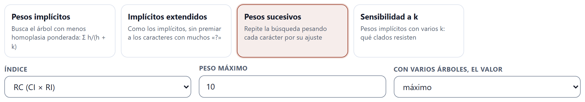
| Parámetro | Qué decide |
|---|---|
| Índice | El ajuste de cada carácter: el RC (CI × RI, por omisión), el CI o el RI. Un carácter no informativo recibe peso 0; con el RC o el RI, también uno con el RI en cero. |
| Peso máximo | La escala: con 10, los pesos van de 0 a 10. Un carácter sin homoplasia recibe 10. |
| Con varios árboles, el valor | Si hay varios árboles más cortos, qué índice tomar de cada carácter: el máximo (el más favorable), el promedio o el mínimo. |
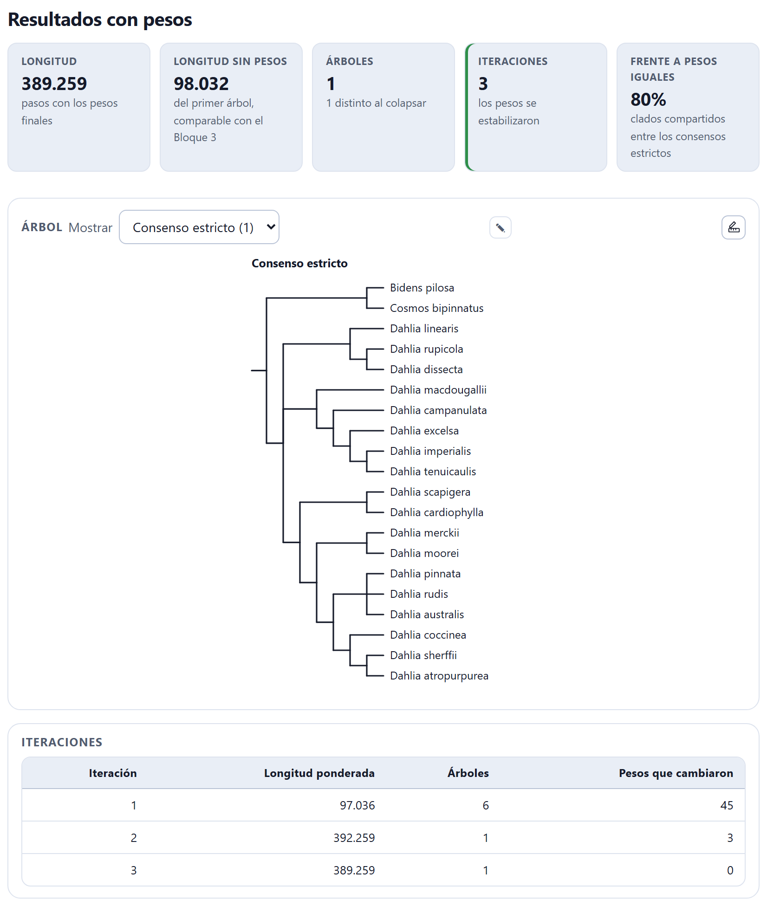
Los recuadros cambian un poco: Longitud son los pasos con los pesos finales; Longitud sin pesos, los del primer árbol contados con pesos iguales, comparables con el Bloque 3, e Iteraciones dice cuántas vueltas dio y si los pesos se estabilizaron. La tabla Iteraciones da, por vuelta, la longitud ponderada, los árboles y cuántos pesos cambiaron; en lugar de la curva, la tabla de pesos lleva el Peso final de cada carácter.
La primera vuelta encuentra los seis árboles de 97.036 pasos del Bloque 3 y reparte pesos nuevos a los 45 caracteres; la segunda encuentra un solo árbol (392.259 pasos ponderados) y cambia 3 pesos; la tercera, el mismo árbol (389.259) sin cambiar ninguno: los pesos se estabilizaron. Al final, 15 caracteres pesan 10 y 9 pesan 0. El árbol elegido mide 98.032 pasos sin pesos —uno más que los del Bloque 3— y comparte el 80 % de los clados con el consenso de pesos iguales: junta a D. merckii con D. moorei y los pone como hermanos del grupo de D. coccinea y D. pinnata. Es otra hipótesis, no un refinamiento de la anterior; el apoyo del Bloque 7 y las pruebas del Bloque 9 ayudan a decidir entre ellas.
No hay un valor «correcto» de k. Por eso el esquema Sensibilidad a k repite la búsqueda con pesos implícitos —o extendidos, con la casilla Con pesos extendidos— para cada valor del campo Valores de k a probar (hasta 20, separados por espacios o comas). Antes de analizar, la tarjeta dibuja la curva de cada k (figura 4.7).
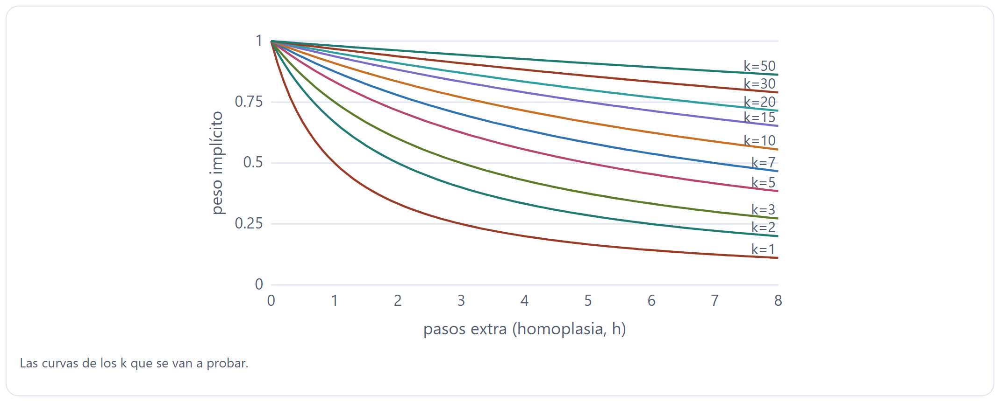
Los resultados son una tabla con una fila por k —la homoplasia ponderada, la longitud sin pesos, los árboles distintos, los clados del consenso estricto y la similitud media con los demás k— y una tabla de clados que marca con un punto en qué valores aparece cada uno; la columna Con todos señala con ✓ los que aparecen siempre. Debajo se dibuja el consenso del k elegido. Para elegir, la app usa el criterio de Mirande (2009): el k cuyo consenso estricto se parece más, en promedio, a los de los demás k. Si varios empatan, la nota los nombra a todos.
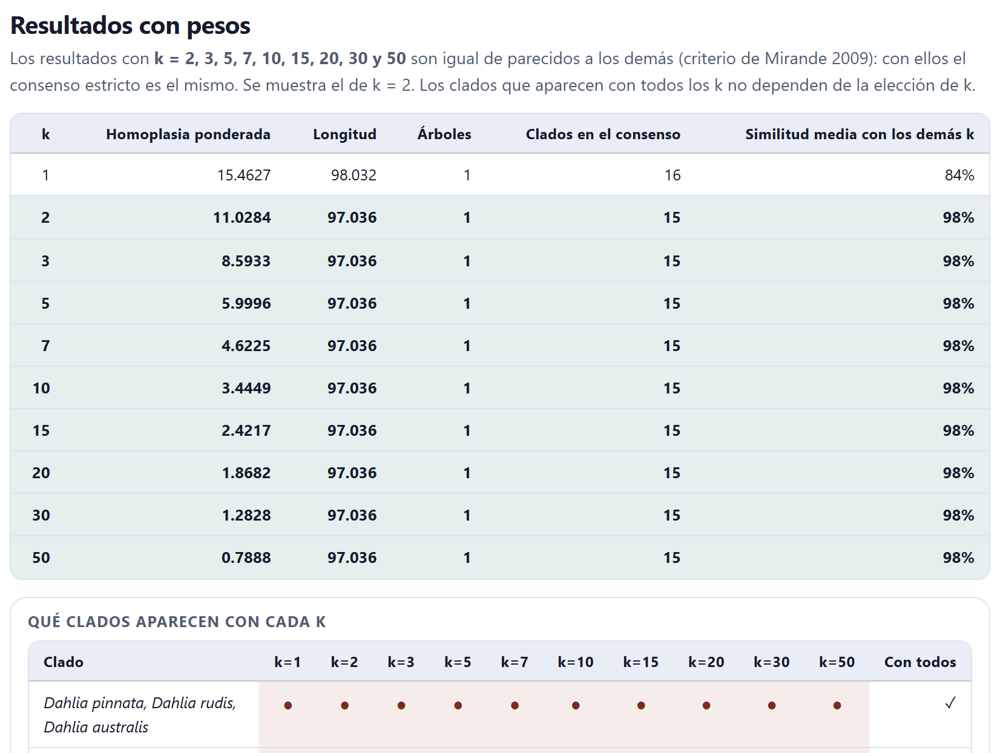
En Dahlia, los nueve valores de k de 2 a 50 dan el mismo consenso estricto, de 15 clados, con árboles de 97.036 pasos; k = 1, el que más castiga la homoplasia, da otro de 16 clados, con árboles de 98.032 pasos y el mismo arreglo de D. merckii y D. moorei que encontraron los pesos sucesivos. La tabla de clados lo resume así:
| Clados | Con qué k aparecen |
|---|---|
| 13 clados, entre ellos el género, el grupo de D. linearis, el de las arborescentes con D. macdougallii, el de D. coccinea y el de D. pinnata | Con los diez valores (✓): no dependen de k. |
| 2 clados grandes: el género sin el grupo de D. linearis (15 especies) y, dentro de él, ese grupo sin D. merckii ni D. moorei (13) | De k = 2 a k = 50, no con k = 1. |
| 3 clados: D. merckii con D. moorei, ese par con 6 especies más, y D. scapigera y D. cardiophylla con 8 más | Sólo con k = 1. |
| Si un clado aparece con pesos iguales y con todos los k | entonces no depende de cómo se pesen los caracteres: dilo así. |
| Si un clado aparece sólo con algunos k | entonces depende del peso que se dé a la homoplasia; repórtalo con esa salvedad y con los k donde aparece. |
| Si vas a dar un solo árbol con pesos implícitos | entonces usa el k que recomienda el criterio de Mirande y menciona la sensibilidad; si hay empate, cualquiera de los empatados da el mismo consenso. |
| Si los pesos sucesivos y los implícitos dan árboles distintos | entonces son hipótesis distintas: compáralas con el apoyo (Bloque 7) y con las pruebas de topología (Bloque 9). |
El botón Árboles (Newick), al pie de los resultados, descarga los árboles del análisis (…_pesos_iw.nwk, …_pesos_eiw.nwk o …_pesos_sw.nwk); con la sensibilidad, el consenso estricto de cada k, cada uno precedido por su valor entre corchetes (…_sensibilidad_k.nwk). El Bloque 10 redacta en los métodos el esquema que se corrió, con sus parámetros y sus referencias.
| Mensaje | Qué significa y qué hacer |
|---|---|
| Primero hace falta una matriz | No hay matriz cargada. Ir a la matriz lleva al Bloque 2. |
| corre el Bloque 3 para comparar | En el recuadro Frente a pesos iguales: no hay búsqueda con pesos iguales con qué comparar. |
| se detuvo sin estabilizarse | Los pesos sucesivos llegaron a 10 vueltas y los pesos seguían cambiando. El resultado es el de la última vuelta; puede oscilar entre dos soluciones. |
| Escribe al menos un valor de k | El campo de valores de k está vacío o no tiene números entre 0 y 1000. |
| El análisis falló: … | Después de los dos puntos va la causa. |
Mientras analiza, la ventana de espera dice qué está haciendo: «Búsqueda con pesos implícitos», «Buscando y reponderando…» con los sucesivos, o «k = 3 (3 de 10)» con la sensibilidad, y siempre deja cancelar.
El Bloque 5 dibuja cualquier árbol de la sesión con cada cambio de cada carácter sobre la rama donde ocurre, como se publica en la cladística morfológica. Deja elegir la optimización, pintar el árbol con los estados de un carácter, ver los cambios de cada clado con un clic y editar el árbol con el ratón —mover un clado, colapsar, enraizar, girar— viendo al instante cuánto se alarga. El árbol editado es el que leen el diagnóstico del Bloque 6 y las hipótesis del Bloque 9.
En un cladograma con marcas, cada cambio de estado de cada carácter es un pequeño círculo sobre la rama donde ocurre. Encima del círculo va el número del carácter; debajo, el estado al que cambia. El relleno dice si ese estado aparece una sola vez en el árbol o más de una.
Una marca llena es un cambio a un estado que surge una sola vez en todo el árbol: una sinapomorfía que define al clado de esa rama. Una marca vacía es un cambio a un estado que surge más de una vez —por convergencia, paralelismo o reversión—: el carácter apoya al clado, pero no lo define por sí solo. Una marca gris es un cambio ambiguo: con la otra optimización caería en otra rama (sección 1.4). Los caracteres continuos no llevan marcas; se ven pintando el árbol (sección 5.4).
La tarjeta Qué árbol decide qué se dibuja y cómo se reconstruyen los caracteres. Si todavía no hay árboles, el bloque lo dice («Primero hace falta un árbol») y ofrece ir a la búsqueda o pegar uno.
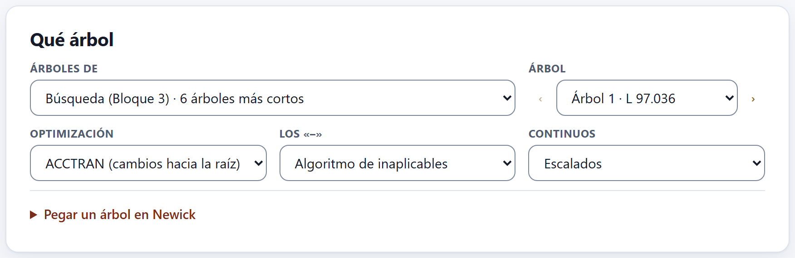
| Campo | Qué decide |
|---|---|
| Árboles de | La fuente: los árboles más cortos de la búsqueda (Bloque 3), esos mismos colapsados por la regla 1, su consenso estricto, los del último análisis con pesos (Bloque 4), los que traía el archivo de la matriz, o el árbol pegado. |
| Árbol ‹ › | Cuál de los árboles de la fuente, con su longitud («Árbol 1 · L 97.036»); las flechas pasan al anterior o al siguiente. |
| Optimización | ACCTRAN (cambios hacia la raíz), DELTRAN (cambios hacia las puntas) o Sólo los cambios no ambiguos (sección 5.3). |
| Los «–» · Continuos | Las mismas lecturas del Bloque 3; al llegar, toman las de la búsqueda que hizo los árboles. Sólo aparecen si la matriz tiene «–» o continuos. |
| Pegar un árbol en Newick | Un árbol escrito en Newick, con los nombres de la matriz (espacios o guiones bajos, da igual). Usar este árbol lo enraíza en el grupo externo y lo dibuja. |
La matriz de práctica trae el árbol sobre el que se simuló, arbol_verdadero: elige Del archivo de la matriz en Árboles de. Mide 99.947 pasos, casi 3 más que los árboles más cortos (97.036), y comparte con el primero de ellos 12 de sus 18 grupos. La historia verdadera no siempre es la más parsimoniosa: con 45 caracteres y algo de homoplasia, algunos cambios del árbol verdadero se pueden explicar con menos pasos en otro árbol. Es un buen ejercicio comparar los dos árboles marca por marca.
La tarjeta El cladograma empieza con cinco recuadros: la longitud del árbol con los pesos de la matriz, su CI y su RI, cuál árbol es de cuántos, y cuántos cambios se dibujan con la optimización elegida. Debajo, el interruptor Marcas de cambio · Pintar un carácter y las opciones de cada modo.
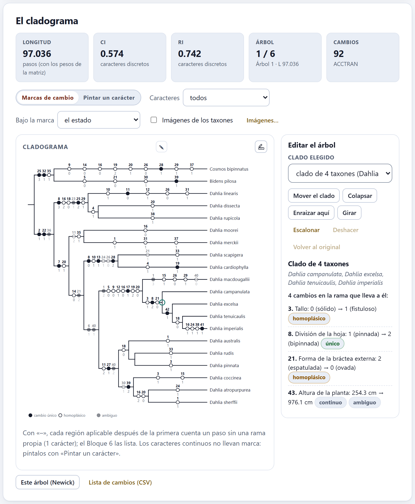
| Opción | Qué hace |
|---|---|
| Caracteres | Qué marcas dibujar: todos, sólo informativos, sólo cambios únicos (las sinapomorfías) o ninguno (sólo el árbol). |
| Bajo la marca | el estado (su símbolo) o el nombre del estado, recortado a 12 letras. |
| Imágenes de los taxones · Imágenes… | Dibuja la imagen de cada taxón junto a su nombre y abre la galería para añadir o cambiar imágenes (sección 5.6). |
| Clic en una rama | Elige el clado que sale de ella: su nodo se marca con un círculo y el panel de la derecha muestra sus cambios. Otro clic en la misma rama lo suelta. |
El panel Editar el árbol, a la derecha, dice del clado elegido qué taxones tiene y cuántos cambios hay en la rama que lleva a él, cada uno en palabras —«8. División de la hoja: 1 (pinnada) → 2 (bipinnada)»— con su etiqueta: único, homoplásico, ambiguo o continuo. Para la raíz dice que sus estados son los ancestrales del árbol. El selector Clado elegido hace lo mismo que el clic, desde el teclado.
Cuando varias reconstrucciones son igual de cortas, la optimización elige una. ACCTRAN adelanta los cambios hacia la raíz y prefiere las reversiones; DELTRAN los retrasa hacia las puntas y prefiere los paralelismos (Swofford y Maddison 1987). La longitud, el CI y el RI no cambian: cambia dónde se dibuja cada paso. Sólo los cambios no ambiguos deja los que caen en la misma rama con las dos (Agnarsson y Miller 2008). En el primer árbol de Dahlia, ACCTRAN dibuja 92 cambios, DELTRAN 91 y los no ambiguos son 78: los demás dependen de la elección. Para defender una sinapomorfía en un artículo, conviene que sea no ambigua.
Con Pintar un carácter, el selector Carácter elige uno y el árbol se dibuja con cada rama del color de su estado en la reconstrucción elegida; los colores son los de los estados en toda la app (0 azul, 1 naranja, 2 verde, 3 amarillo…), no los de las plantas. En cada nodo, un círculo muestra los estados posibles en alguna reconstrucción igual de corta (los conjuntos MPR): un círculo de dos colores es un nodo que puede estar en cualquiera de los dos estados sin alargar el árbol. La leyenda, abajo, nombra los estados que aparecen.
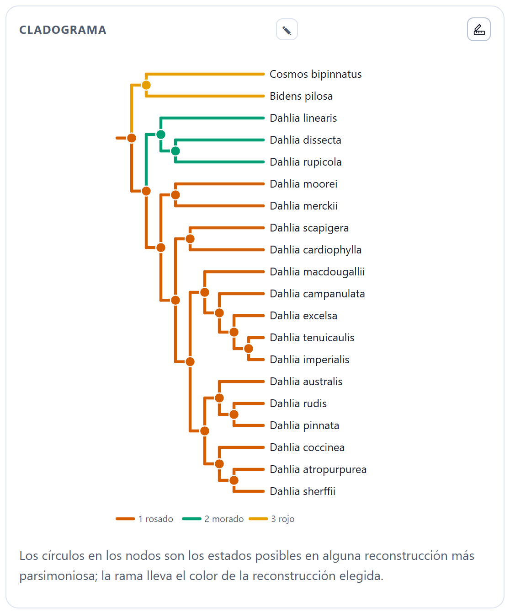
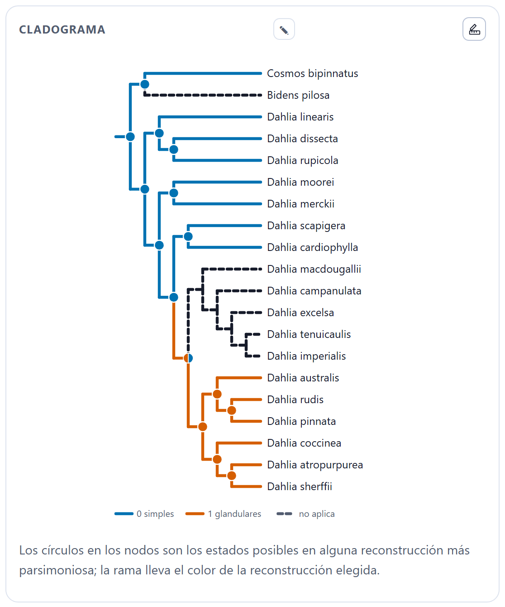
En un carácter con «–», las ramas donde la estructura no existe se dibujan punteadas (no aplica): en la figura 5.5, Bidens pilosa y las cinco dalias del grupo de las arborescentes no tienen tricomas, así que su tipo no existe. El nodo de dos colores es el que une a ese grupo con el de D. coccinea y D. pinnata: puede tener tricomas simples o glandulares sin alargar el árbol.
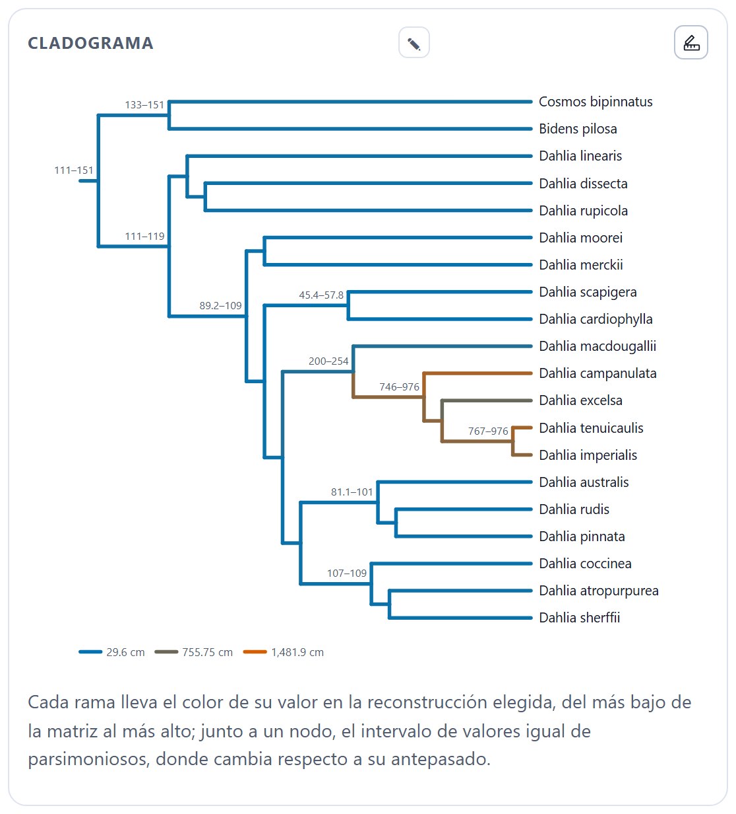
Un carácter continuo se pinta con un degradado entre su valor más bajo y el más alto de la matriz, y junto a los nodos se escribe el intervalo de valores igual de parsimoniosos, sólo donde cambia respecto a su antepasado y con tres cifras significativas. En Dahlia, la altura reconstruida se mantiene entre unos 80 y 120 cm en casi todo el género, sube a 200–254 cm en el antepasado de D. macdougallii y las arborescentes y salta a 746–976 cm en el de las cuatro arborescentes: el gigantismo de esas especies se concentra en dos ramas.
Editar un árbol es la manera más directa de preguntar «¿y si…?»: ¿cuánto cuesta poner este taxón en otro lugar?, ¿qué cambios pierde este clado si lo colapso? Cada edición recalcula la reconstrucción, los índices y las marcas al instante, y el recuadro Longitud dice cuánto más largo (o más corto) quedó el árbol frente al original.
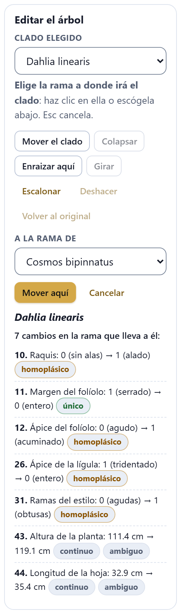
| Botón | Qué hace |
|---|---|
| Mover el clado | El clado elegido se va a otra rama: haz clic en la rama de destino o elígela en A la rama de y pulsa Mover aquí. Esc o Cancelar lo dejan donde estaba. |
| Colapsar | Quita la rama que lleva al clado: sus hijos pasan a colgar del nodo de arriba (una politomía). |
| Enraizar aquí | Pone la raíz en la rama del clado elegido. |
| Girar | Invierte el orden de los hijos del nodo. No cambia el árbol, sólo el dibujo. |
| Escalonar | Ordena todo el árbol para que los clados grandes queden abajo, en escalera. |
| Deshacer | Deshace la última edición (guarda hasta 100). |
| Volver al original | Regresa al árbol de la fuente; también se puede deshacer. |
| Unir las dos elegidas | Si el nodo elegido es una politomía, aparecen sus ramas con una casilla cada una: marca dos y únelas en un clado nuevo. |
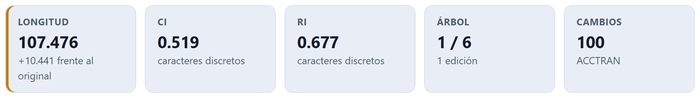
Con el primer árbol de Dahlia, elige D. linearis (clic en su rama), pulsa Mover el clado y haz clic en la rama de las cuatro dalias arborescentes. El árbol pasa de 97.036 a 107.476 pasos: 10.441 más, con el CI de 0.574 a 0.519. Los datos se oponen con fuerza a esa posición. Si la pregunta es de verdad —un autor la propuso—, el Bloque 9 dice si esos 10 pasos son más de lo que el azar explicaría, y el Bloque 6 lista qué caracteres se oponen. Deshacer devuelve el árbol original.
El árbol editado, con sus marcas, es el que leen el Bloque 6 para la diagnosis de cada clado y el Bloque 9 como hipótesis de árbol completo; el Bloque 10 puede dibujarlo para publicar. Al pie de la tarjeta, Este árbol (Newick) lo descarga (…_arbol.nwk) y Lista de cambios (CSV) descarga una tabla con cada cambio: el clado, cuántos taxones tiene, el carácter, de qué estado a qué estado, si es único, homoplásico o continuo, y si es ambiguo (…_cambios.csv).
La casilla Imágenes de los taxones pone, junto al nombre de cada taxón, la imagen que se le dio en el Bloque 2 (sección 2.6), en un cuadro de esquinas redondeadas. Sólo se dibujan las confirmadas; los taxones sin imagen dejan su lugar vacío para que los nombres queden alineados. Las filas crecen para que la imagen quepa. La casilla se marca sola la primera vez que se añade una imagen, y el botón Imágenes… abre la galería en una ventana, para añadir o cambiar imágenes sin salir del bloque.
Con imágenes y todas las marcas, un árbol de muchos taxones se vuelve pesado. Para una presentación o un cartel suele funcionar mejor Caracteres: ninguno o sólo cambios únicos con imágenes; para el artículo, todas las marcas sin imágenes, o las imágenes en una figura aparte.
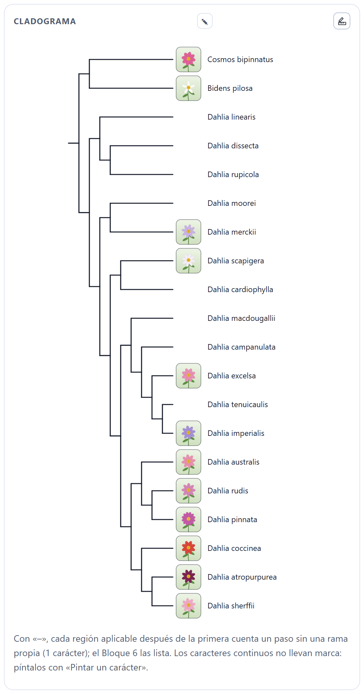
Las imágenes van dentro de la figura: se exportan con ella al estudio de figuras y al Bloque 10, que ofrece además más opciones —el tamaño, la forma (círculo, redondeada o cuadrada), un marco y si van antes o después del nombre— y arma la línea de créditos con el autor y la licencia de cada imagen.
| Mensaje | Qué significa y qué hacer |
|---|---|
| Primero hace falta una matriz · Primero hace falta un árbol | Falta la matriz (Bloque 2) o no hay árboles: búscalos en el Bloque 3, carga una matriz que los traiga o pega uno en Newick. |
| N taxones del árbol no están activos en la matriz y se quitaron · Al árbol le faltan N taxones de la matriz | El árbol pegado tiene nombres que no son taxones activos de la matriz (o están mal escritos), o no los incluye a todos; se dibuja con los que coinciden. |
| No se pudo leer el árbol: … | El texto no es un Newick válido: revisa los paréntesis y el punto y coma final. |
| Este árbol tiene politomías y el algoritmo de inaplicables pide árboles dicotómicos: en N caracteres con «–» se leyeron como «?» | Con un consenso o un árbol colapsado, los caracteres con «–» se reconstruyen como faltantes. Para su reconstrucción exacta, usa un árbol dicotómico. |
| Con «–», cada región aplicable después de la primera cuenta un paso sin una rama propia | Cuando un carácter con «–» vuelve a aplicar en otra parte del árbol, ese paso se cuenta pero no tiene marca. El panel del clado lo dice («Aquí empieza una región aplicable más de…») y el Bloque 6 los lista. |
| Un clado no puede ir dentro de sí mismo · Elige exactamente dos ramas | Al mover, se eligió como destino una rama del mismo clado; al resolver una politomía, hay que marcar dos de sus ramas. |
Un cladograma no está terminado hasta que dice qué lo sostiene. El Bloque 6 mide la homoplasia de cada carácter con el CI, el RI y el RC; lista, clado por clado, sus sinapomorfías y sus cambios homoplásicos; reordena la matriz siguiendo el árbol para que las sinapomorfías se vean como bloques de color, y compara los árboles igual de cortos para decir qué caracteres cambian de lectura de uno a otro.
Cada carácter necesita en un árbol un número de pasos s. Ese número se compara con dos cotas que no dependen del árbol: m, los pasos mínimos que el carácter podría necesitar en el mejor árbol posible, y g, los que necesitaría en el peor, el «arbusto» con todos los taxones colgando de la raíz.
Para un carácter no ordenado con k estados, m = k − 1: cada estado aparece una vez. Los pasos extra, h = s − m, son la homoplasia. Con esas tres cifras se definen los índices que la sistemática usa desde hace medio siglo:
| Índice | Fórmula | Qué dice |
|---|---|---|
| CI, consistencia (Kluge y Farris 1969) | m / s | 1 si el carácter no tiene homoplasia; baja con cada paso extra. |
| RI, retención (Farris 1989) | (g − s) / (g − m) | Qué fracción de la similitud posible se conserva como sinapomorfía: 1 si toda, 0 si el árbol no explica mejor el carácter que el arbusto. |
| RC, consistencia reescalada | CI × RI | Combina las dos; es el índice que usan por omisión los pesos sucesivos (sección 4.5). |
| Ajuste (peso implícito) | k / (k + h) | El peso que el carácter tendría con pesos implícitos (sección 4.3). |
El carácter 3, «Tallo» (sólido o fistuloso), tiene dos estados: en el mejor árbol bastaría 1 paso (m); en el arbusto harían falta 5 (g), tantos como taxones con el estado menos común. En el árbol más corto de Dahlia necesita 3 (s), así que tiene 2 pasos extra: CI = 1/3 = 0.333, RI = (5 − 3)/(5 − 1) = 0.500, RC = 0.167 y, con k = 3, un ajuste de 3/5 = 0.600. El carácter 8, «División de la hoja», ordenado, necesita 4 pasos donde bastarían 3 y el arbusto pediría 12: CI 0.750 y RI 0.889. El tallo fistuloso apareció tres veces; la hoja casi se comporta como una homología perfecta.
Un carácter no informativo —una autapomorfía, un estado en un solo taxón— tiene s = m = g: su CI es 1 y su RI es 0/0, no cero, por eso la app lo escribe «—». Sumado a los demás, sube el CI de la matriz sin decir nada del árbol; el RI no cambia, porque el carácter no aporta ni a g − s ni a g − m. Por eso el RI se compara mejor entre estudios que el CI. Con inaplicables, m y g se calculan con el algoritmo de Brazeau et al. (2019), y con matrices de pasos, m es el árbol de Steiner de los estados presentes. Los índices de toda la matriz se calculan sobre los caracteres discretos; los continuos tienen los suyos, en la misma tabla.
El bloque trabaja con el árbol que está a la vista en el Bloque 5 —con su optimización y sus ediciones— y con todos los árboles de la misma fuente, para compararlos. Una línea arriba dice cuál es la fuente; para cambiarla hay que volver al Bloque 5. Si todavía no hay árboles, el bloque lo dice y ofrece Ir al cladograma.
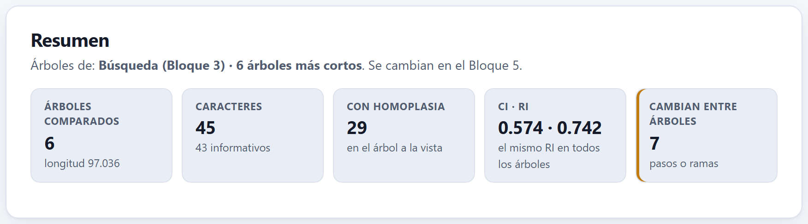
| Recuadro | Qué dice | En Dahlia |
|---|---|---|
| Árboles comparados | Cuántos árboles tiene la fuente (hasta 500) y su longitud. | 6, de 97.036 |
| Caracteres | Cuántos hay y cuántos son informativos. | 45; 43 informativos |
| Con homoplasia | Cuántos tienen pasos extra en el árbol a la vista. | 29 |
| CI · RI | Los índices del árbol a la vista y si cambian entre árboles. | 0.574 · 0.742 |
| Cambian entre árboles | Los caracteres cuyos pasos o cuyas ramas difieren de un árbol a otro (sección 6.6). | 7 |
La tabla Cada carácter pone en una fila todo lo que se sabe de un carácter en los árboles: su tipo, sus cotas, sus pasos y sus índices en el árbol a la vista, cuántos pasos necesita en cada uno de los árboles de la fuente, si sus cambios caen siempre en las mismas ramas y su peso implícito, en el orden de la matriz.
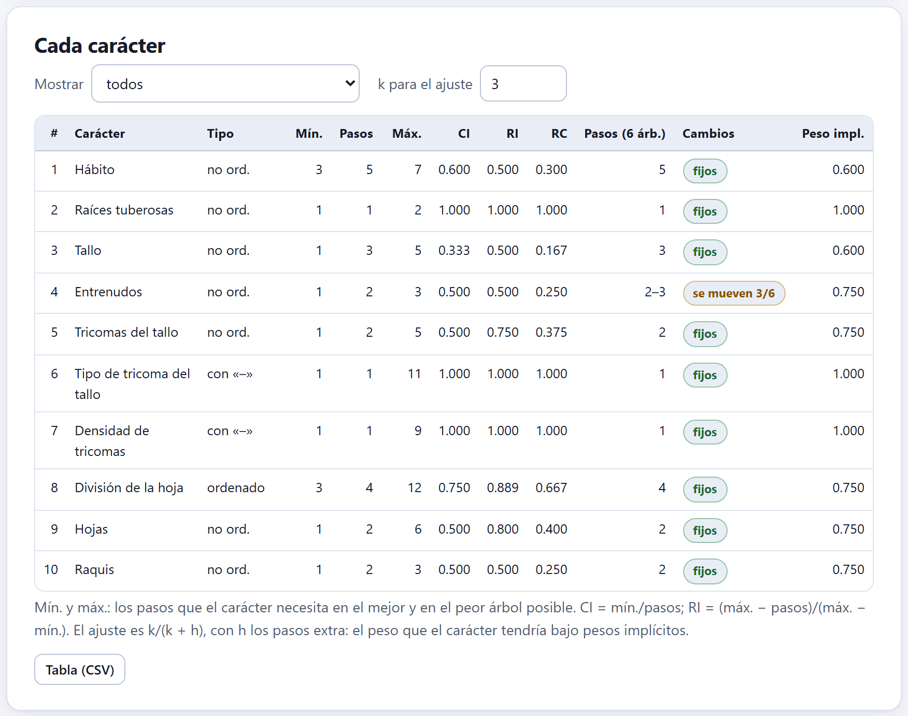
| Columna | Qué dice |
|---|---|
| Tipo | no ord., ordenado, pasos (matriz de pasos), continuo o con «–»; si un carácter con «–» vuelve a aplicar en varias partes del árbol, dice cuántas regiones tiene. |
| Mín. · Pasos · Máx. | m, s y g en el árbol a la vista (sección 6.1). |
| CI · RI · RC | Los índices; «—» si no están definidos. |
| Pasos (N árb.) | Los pasos en los N árboles de la fuente: un solo número si son iguales en todos, o el intervalo. |
| Cambios | fijos si sus cambios caen en las mismas ramas en todos los árboles; se mueven m/N si difieren en m de ellos. |
| Peso impl. | El ajuste k/(k + h), con el k del campo k para el ajuste (3 por omisión). |
El selector Mostrar filtra la tabla: todos, sólo los homoplásicos (29 en Dahlia), sólo los que no tienen homoplasia (14), sólo los que cambian entre árboles (7) o sólo los no informativos (2). Tabla (CSV) descarga la tabla completa, con los pasos mínimos y máximos en los árboles en columnas separadas, para el material suplementario o para R.
La diagnosis es la lista de caracteres que definen a un grupo: lo que se escribe en una descripción taxonómica o en la sección de resultados de un artículo. La tarjeta Diagnosis de cada clado numera los clados del árbol a la vista —el cladograma de la izquierda lleva el número junto a cada nodo— y, a la derecha, da para cada uno sus taxones y los cambios de la rama que lleva a él, separados en cuatro grupos.
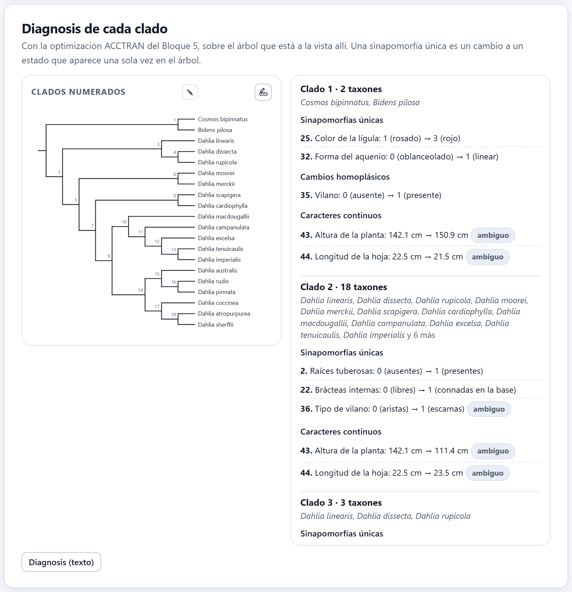
| Grupo de cambios | Qué reúne |
|---|---|
| Sinapomorfías únicas | Cambios a un estado que aparece una sola vez en el árbol: lo que define al clado sin ambigüedad de homoplasia. |
| Cambios homoplásicos | Cambios a un estado que aparece también en otras ramas: apoyan al clado, pero no son exclusivos de él. |
| Caracteres continuos | Los cambios de valor de los continuos, de qué valor a qué valor. |
| Empieza una región aplicable más de | Los caracteres con «–» que en ese clado vuelven a existir. |
Cualquiera de ellos lleva la etiqueta ambiguo si con la otra optimización caería en otra rama. Al final, Autapomorfías de los terminales da los cambios exclusivos de cada especie. La diagnosis sigue la optimización y el árbol del Bloque 5: si allí se elige DELTRAN o sólo los cambios no ambiguos, o se edita el árbol, aquí cambia todo. Diagnosis (texto) la descarga como texto, con la optimización, la longitud, el CI y el RI del árbol al principio, lista para pegar en un documento.
El clado 3 —D. linearis, D. dissecta y D. rupicola— tiene tres sinapomorfías únicas: la hoja tripinnada (8: 1 → 3), las páleas caducas (23: 0 → 1, ambigua) y la lígula morada (25: 1 → 2); y tres cambios homoplásicos: muchos capítulos por rama (16), pedúnculo más corto que la hoja (18) y lóbulos de la corola pilosos (29). Una diagnosis prudente diría: «hojas tripinnadas y lígulas moradas; páleas caducas (con ACCTRAN)». El clado 5, el resto del género, sólo tiene una sinapomorfía única: los tricomas densos (7: 0 → 1).
El clado 1 es el grupo externo y el 2, el grupo interno. Los cambios de esas dos ramas dependen de dónde se ponga la raíz: con otro grupo externo, o con DELTRAN, se reparten distinto. Las raíces tuberosas (2) y las brácteas internas connadas (22) sólo son sinapomorfías del género si el grupo externo representa bien el estado ancestral; por eso conviene incluir más de un taxón externo.
La tarjeta La matriz ordenada por el árbol muestra la matriz con las filas en el orden de las puntas del cladograma y, por omisión, las columnas por el clado donde cambian: primero los caracteres que cambian en las ramas de arriba del árbol, luego los de abajo. Así, las sinapomorfías de cada clado forman bloques de color en la esquina de sus taxones. Las celdas con borde son el estado derivado de una sinapomorfía única en los taxones del clado que la tiene. Con Columnas se vuelve al orden de la matriz, y Resaltar el clado pinta los nombres de un clado y destaca con otro color el marco de sus sinapomorfías.
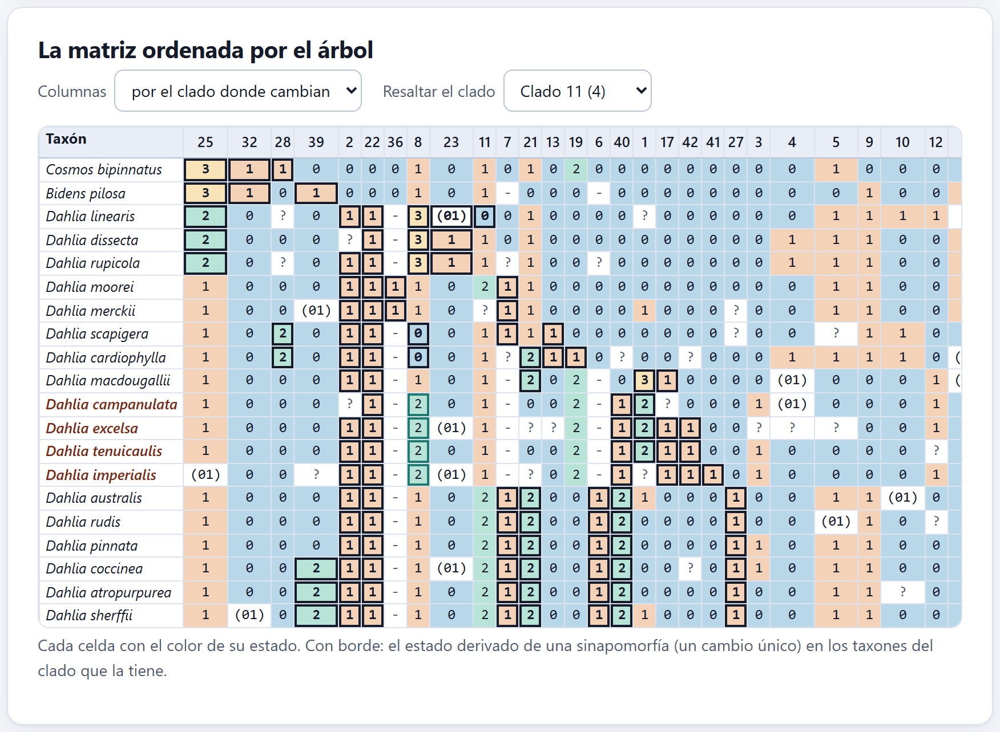
Es la mejor vista para revisar la codificación con el árbol en la mano: una celda que rompe un bloque de color —un «0» donde todos sus parientes tienen «1»— es una homoplasia o un error de codificación, y conviene volver al ejemplar antes de aceptarla.
Si la fuente tiene varios árboles igual de cortos, algo los separa. La tarjeta Lo que cambia entre árboles lo dice: primero, si la longitud, el CI y el RI son los mismos en todos; luego, los caracteres que cambian de número de pasos de un árbol a otro y los que tienen los mismos pasos, pero en ramas distintas.
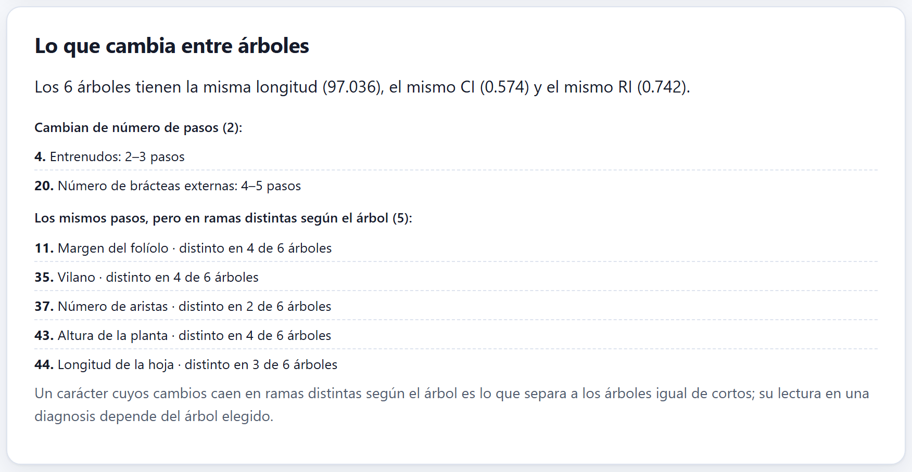
En Dahlia, los seis árboles miden lo mismo, pero el carácter 4, «Entrenudos», necesita 2 pasos en unos y 3 en otros, y el 20, «Número de brácteas externas», 4 o 5: lo que uno gana, el otro lo pierde. Otros cinco caracteres tienen los mismos pasos en todos los árboles, pero sus cambios caen en ramas distintas: el margen del folíolo (11) y el vilano (35) en 4 de los 6 árboles, por ejemplo. Son justo los que deciden dónde van D. merckii y D. moorei y cómo se ordena el grupo de D. linearis (sección 3.7). Una diagnosis que los use depende del árbol elegido; la de los caracteres fijos, no.
| Si es una sinapomorfía única, no ambigua y fija en todos los árboles | entonces cítala sin reservas. |
| Si es ambigua | entonces cítala diciendo con qué optimización (o deja sólo los cambios no ambiguos). |
| Si se mueve entre árboles | entonces dila sólo para el árbol que presentas, o ve al consenso (Bloque 8). |
| Si es homoplásica | entonces preséntala como apoyo, no como carácter diagnóstico exclusivo. |
| Mensaje | Qué significa y qué hacer |
|---|---|
| Primero hace falta un árbol | No hay árboles: búscalos en el Bloque 3 (o carga una matriz con árboles) y elige uno en el Bloque 5. Ir al cladograma lleva allá. |
| Sólo hay un árbol en esta fuente: no hay nada que comparar | En Lo que cambia entre árboles, con un consenso, un árbol pegado o una búsqueda que encontró uno solo. |
| Se compararon los primeros 500 | La fuente tiene más de 500 árboles; la comparación usa los primeros 500. |
| Sin cambios en esta rama | En la diagnosis: ningún cambio con la optimización elegida (frecuente con sólo los cambios no ambiguos). Con ACCTRAN o DELTRAN, una rama sin cambios puede medir cero, y la regla 1 la colapsaría (sección 3.3). |
El árbol más corto no dice qué tan firmes son sus grupos: uno puede deshacerse con medio paso más y otro resistir diez. El Bloque 7 mide el apoyo de cada grupo de dos maneras complementarias: el apoyo de Bremer, que cuenta los pasos que cuesta perderlo, y el remuestreo —bootstrap, jackknife y remuestreo simétrico—, que mide con qué frecuencia reaparece cuando se perturban los caracteres. Los valores se ven sobre el árbol, en una tabla y en los archivos que se descargan.
Un grupo del árbol más corto puede estar sostenido por diez sinapomorfías sin homoplasia o por un solo carácter que, en otro árbol apenas más largo, se explica igual de bien. Las dos situaciones dan el mismo dibujo; el apoyo las distingue.
El apoyo de Bremer (Bremer 1988, 1994) responde con pasos: cuánto más largo es el mejor árbol que no tiene el grupo. Si perder el grupo cuesta 4 pasos, los datos lo exigen; si cuesta 0.2, apenas lo prefieren. El Bremer relativo (Goloboff y Farris 2001) compara, carácter por carácter, lo que habla a favor y en contra del grupo, de 0 a 1. El remuestreo responde con frecuencias: se arman cientos de matrices perturbadas —quitando, repitiendo o duplicando caracteres al azar—, se busca en cada una y se cuenta en qué porcentaje reaparece el grupo. El GC (Goloboff et al. 2003) resta a esa frecuencia la del grupo contradictorio más frecuente: un GC negativo dice que algo lo contradice más de lo que aparece.
El Bremer depende de la escala de los datos: un grupo apoyado por un solo carácter en una matriz pequeña tiene Bremer 1, igual que uno apoyado por un carácter en una matriz de mil. Las frecuencias no tienen escala, pero dependen del método y de su probabilidad, y un grupo con un solo carácter a favor y ninguno en contra puede salir con frecuencia moderada. Por eso se reportan juntas, a menudo como «Bremer / jackknife» sobre cada rama, y se lee con más confianza un grupo fuerte en las dos. Ninguna es una probabilidad de que el grupo sea verdadero.
El apoyo se mide sobre los árboles más cortos del Bloque 3; si no hay búsqueda, el bloque dice «Primero hace falta una búsqueda». La tarjeta Sobre qué árbol elige en qué árbol se dibujan los valores y qué grupos se miden.
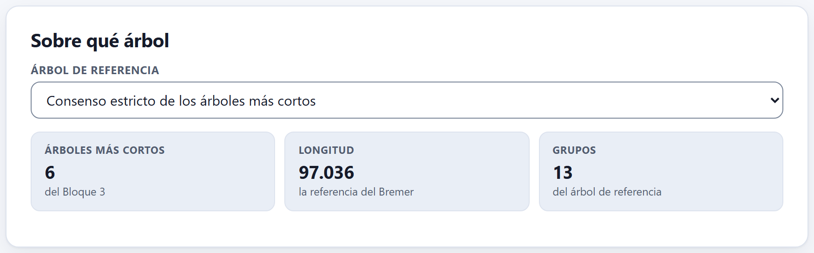
El Árbol de referencia puede ser el Consenso estricto de los árboles más cortos (por omisión: sólo los grupos que comparten todos), El primer árbol más corto o El árbol a la vista en el Bloque 5, que puede estar editado. Los recuadros dicen cuántos árboles más cortos hay, su longitud —la referencia contra la que se mide el Bremer— y cuántos grupos tiene el árbol de referencia: en Dahlia, 13. Las restricciones del Bloque 3 no se aplican aquí: el apoyo se mide siempre sin ellas.
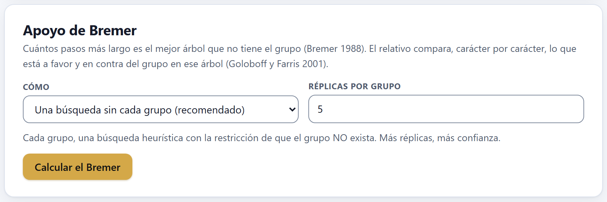
| Cómo | Qué hace | Parámetros |
|---|---|---|
| Una búsqueda sin cada grupo (recomendado) | Para cada grupo, una búsqueda con la restricción de que no exista; el Bremer es su longitud menos la del árbol más corto. Con 12 taxones o menos, cada búsqueda es exacta y el Bremer también. Las búsquedas se reparten entre los hilos. | Réplicas por grupo (5): más réplicas, más confianza. |
| Árboles subóptimos hasta k pasos | Guarda todos los árboles hasta k pasos más largos que el óptimo y, para cada grupo, busca entre ellos el más corto que no lo tiene. Rápido, pero sólo ve lo que guardó: un grupo sin árbol contrario dentro de k pasos sale «> k». | k (3) y Árboles subóptimos máximos (2000). |
En Dahlia, el Bremer de los 13 grupos tarda poco más de un segundo y va de 0.181 a 4.443 pasos; los valores con decimales vienen de los caracteres continuos escalados. Si alguna búsqueda sin un grupo encuentra un árbol más corto que los del Bloque 3, la app lo avisa: la búsqueda original no había llegado al óptimo, y conviene repetirla con más réplicas.
| Método | Cómo perturba la matriz | p |
|---|---|---|
| Bootstrap | Toma tantos caracteres como hay, al azar y con reemplazo: unos salen dos o tres veces, otros ninguna (Felsenstein 1985). | — |
| Jackknife | Borra cada carácter con probabilidad p (Farris et al. 1996). | 36 % |
| Remuestreo simétrico | Cambia cada carácter con probabilidad p: la mitad de las veces lo borra y la otra mitad lo duplica, así que no favorece ni a los grupos con caracteres a favor ni a los que tienen en contra (Goloboff et al. 2003). | 33 % |
Pseudorréplicas dice cuántas matrices perturbadas se arman (100 por omisión; 1000 para publicar). Búsqueda en cada una puede ser Rápida (2 adiciones de Wagner + TBR), Cuidadosa (10 adiciones) o Exacta (hasta 12 taxones). En cada pseudorréplica se cuenta el consenso estricto de los árboles encontrados, para no premiar a un grupo que aparece en algunos árboles empatados y en otros no. La Semilla hace repetible el resultado; con pocas pseudorréplicas, otra semilla da frecuencias algo distintas. En Dahlia, cada remuestreo de 100 pseudorréplicas tarda alrededor de un segundo.
Correr el bootstrap no borra el jackknife: cada método guarda su último resultado, y la tabla de la sección 7.5 tiene una columna por método. El selector En el árbol elige cuál dibujar. Cambiar la matriz o hacer una búsqueda nueva sí los borra a todos.
La tarjeta El apoyo de cada grupo aparece con el primer cálculo. Los recuadros dicen cuántos grupos se midieron, el intervalo del Bremer y, por cada remuestreo, cuántos grupos superan el 50 %. El selector En el árbol elige qué valor dibujar junto a cada rama: el Bremer, el Bremer relativo, la frecuencia o el GC de cada remuestreo, o Bremer / GC del último remuestreo, la forma habitual de publicarlo.
Cada rama se pinta según su clase. Para las frecuencias y el GC: 90 o más, fuerte; 70 a 89, bueno; 50 a 69, débil; menos de 50, sin apoyo. Para el Bremer: 3 o más, fuerte; 2 a 3, bueno; 1 a 2, débil; menos de 1, sin apoyo. Las ramas sin color son grupos sin valor calculado; las dos ramas de la raíz son un solo grupo y llevan el mismo valor. Debajo, una tabla repite todo en números; la app numera los grupos como el Bloque 6, sobre el árbol de referencia.
| Clado | Grupo de Dahlia | Bremer | Relativo | Bootstrap | Jackknife | Simétrico |
|---|---|---|---|---|---|---|
| 2 | El género (18 especies) | 1.196 | 0.193 | 53 | 58 / 31 | 69 |
| 3 | D. linearis, D. dissecta, D. rupicola | 4.027 | 0.556 | 91 | 99 / 98 | 100 |
| 4 | El género sin el grupo de D. linearis (15) | 0.181 | 0.083 | 17 | 30 / 3 | 44 |
| 5 | Ese grupo sin D. merckii ni D. moorei (13) | 0.996 | 0.330 | 22 | 31 / 4 | 50 |
| 6 | D. scapigera y D. cardiophylla | 3.036 | 0.603 | 95 | 99 / 98 | 99 |
| 7 | D. macdougallii y las arborescentes (5) | 4.443 | 0.690 | 89 | 95 / 93 | 97 |
| 8 | Las cuatro dalias arborescentes | 2.044 | 0.666 | 93 | 96 / 95 | 99 |
| 9 | D. excelsa, D. imperialis, D. tenuicaulis | 0.734 | 0.367 | 63 | 58 / 30 | 81 |
| 10 | D. imperialis y D. tenuicaulis | 0.734 | 0.367 | 34 | 33 / 6 | 64 |
| 11 | Los grupos de D. pinnata y D. coccinea (6) | 2.950 | 0.737 | 85 | 88 / 81 | 97 |
| 12 | D. pinnata, D. rudis, D. australis | 1.000 | 0.500 | 40 | 54 / 47 | 79 |
| 13 | D. coccinea, D. sherffii, D. atropurpurea | 1.003 | 0.501 | 53 | 66 / 59 | 85 |
| 14 | D. sherffii y D. atropurpurea | 2.000 | 1.000 | 77 | 91 / 91 | 98 |
Bootstrap y simétrico: frecuencia en %; jackknife: frecuencia / GC en %. 100 pseudorréplicas, búsqueda rápida, semilla 1.
Seis grupos son firmes por los dos criterios —Bremer de 2 o más y jackknife de 88 % o más—: el de D. linearis, el par D. scapigera–D. cardiophylla, el de D. macdougallii con las arborescentes, las cuatro arborescentes, el de D. pinnata con D. coccinea y el par D. sherffii–D. atropurpurea. En el otro extremo, el clado 4 —el género sin el grupo de D. linearis— se pierde con 0.18 pasos y aparece en el 30 % de los jackknife, con un GC de 3: los datos casi no lo distinguen de sus alternativas, que es justo lo que mostró la sección 3.7. El género mismo tiene un apoyo moderado (Bremer 1.2, jackknife 58 %): tiene dos sinapomorfías únicas, pero hay árboles apenas más largos en los que deja de ser un grupo. Los valores del remuestreo simétrico son más altos en todos los grupos débiles: con p = 33 %, perturba menos que el jackknife con 36 %.
| Si vas a publicar | entonces da el Bremer y un remuestreo (jackknife o simétrico con 1000 pseudorréplicas y búsqueda cuidadosa) sobre el consenso estricto, y di el método, p y la búsqueda; el Bloque 10 lo redacta. |
| Si un grupo tiene Bremer menor que 1 y frecuencia menor que 50 % | entonces no lo discutas como resultado: es una de varias resoluciones casi igual de buenas. |
| Si el GC es negativo | entonces algún grupo incompatible aparece más que él; revisa qué caracteres lo contradicen (Bloques 6 y 9). |
| Si el Bremer y la frecuencia no coinciden | entonces mira cuántos caracteres hay a favor y en contra (el Bremer relativo y la diagnosis del Bloque 6). |
Al pie de la tarjeta, Árbol con los valores (Newick) descarga el árbol de referencia con el valor que se ve en el árbol como rótulo de cada nodo (…_apoyo.nwk), legible por cualquier programa de dibujo de árboles, y Tabla (CSV), la tabla completa con el Bremer, el Bremer relativo y la frecuencia y el GC de cada remuestreo.
| Mensaje | Qué significa y qué hacer |
|---|---|
| Primero hace falta una búsqueda | El apoyo se mide sobre los árboles más cortos: búscalos en el Bloque 3. |
| El árbol de referencia no tiene grupos que medir | El árbol elegido es una politomía completa (por ejemplo, un consenso estricto sin grupos). Elige otro árbol de referencia. |
| Sin algún grupo apareció un árbol MÁS CORTO que los del Bloque 3… | La búsqueda del Bloque 3 no llegó al óptimo. Repítela con más réplicas o con la combinada; mientras tanto, ese Bremer sale negativo. |
| «> k» en la tabla o en el árbol | Con árboles subóptimos, ningún árbol guardado contradice al grupo: su Bremer es mayor que k. Sube k o usa la búsqueda sin cada grupo. |
| El cálculo falló: … · El remuestreo falló: … | Después de los dos puntos va la causa. |
Cuando la búsqueda deja varios árboles igual de cortos, hay que decir qué tienen en común. El Bloque 8 calcula los cinco consensos clásicos —estricto, mayoría, mayoría extendida, semiestricto y Adams—, los compara lado a lado y busca los taxones comodín: los que cambian de lugar entre árboles y deshacen el consenso, con el consenso reducido que queda sin ellos y los caracteres que los llevan de un lugar a otro.
Un consenso es un árbol que resume un conjunto de árboles: guarda los grupos que comparten, según una regla, y deja como politomías los que no. No es un árbol más parsimonioso que los que resume —casi siempre es más largo— ni un árbol con apoyo: es una manera de decir qué afirman todos.
La regla cambia la lectura. El estricto sólo admite los grupos de todos los árboles: lo que queda es lo que la matriz sostiene sin excepción, y cada politomía dice «aquí los datos no deciden». La mayoría admite los grupos de más de la mitad de los árboles: más resuelto, pero un grupo del 60 % de los árboles empatados no tiene, por eso, el 60 % de apoyo (el apoyo es el Bloque 7). El semiestricto añade los grupos que algún árbol tiene y ninguno contradice, y el de Adams conserva los anidamientos comunes aunque ningún grupo lo sea.
En un consenso, un nodo con cinco ramas no dice que cinco linajes se separaron a la vez: dice que los árboles más cortos no se ponen de acuerdo en cómo se ordenan. Por eso el consenso estricto se arma, en la práctica, con los árboles colapsados por la regla 1 (sección 3.3): una rama que puede medir cero tampoco es un grupo que los datos sostengan. Así lo hace el Bloque 3, y así empieza este bloque.
La tarjeta Qué árboles elige el conjunto que se resume: los árboles más cortos de la búsqueda, tal cual (binarios); esos mismos colapsados por la regla 1 —la opción con la que empieza el bloque—; los del último análisis con pesos, o los que traía el archivo de la matriz. Dos recuadros dicen cuántos árboles son y cuántos taxones activos tienen.
Con los dos árboles colapsados de Dahlia, el consenso estricto tiene 14 clados de 18 posibles (78 % de resolución): es el mismo del Bloque 3. Con los seis árboles binarios tendría 16 (89 %): los dos de más son grupos que aparecen en los seis árboles sólo porque se sostienen sobre ramas que pueden medir cero, como el par D. rudis–D. pinnata. Para publicar, el consenso de los árboles colapsados es el honesto.
La tarjeta Consensos ofrece los cinco tipos; al elegir uno, se dibuja y sus recuadros dicen cuántos árboles resume, cuántos clados tiene —de los n − 2 que tendría un árbol totalmente resuelto— y su resolución, la proporción de esos clados que tiene.
| Consenso | Qué guarda |
|---|---|
| Estricto | Sólo los clados de todos los árboles; en los programas de parsimonia se le llama también «de Nelsen» (Nelson 1979; Sokal y Rohlf 1981). |
| Mayoría | Los clados de más de la mitad de los árboles (Margush y McMorris 1981), o de más del Umbral de la mayoría (%) que se elija, de 50 a 100. Junto a cada clado escribe el porcentaje de árboles que lo tienen. |
| Mayoría extendida | Los de mayoría y luego, de más a menos frecuente, todos los que sean compatibles con lo ya aceptado. Resuelve más, pero con frecuencias empatadas la elección entre dos grupos incompatibles es arbitraria. |
| Semiestricto | Los clados que algún árbol tiene y ninguno contradice (Bremer 1990): útil cuando unos árboles están resueltos donde otros tienen politomías. |
| Adams | Los anidamientos que todos comparten aunque ningún clado sea común (Adams 1972). Puede mostrar grupos que ningún árbol tiene: se lee como una hipótesis de anidamientos, no de clados, y la app lo advierte bajo el árbol. |
Este consenso (Newick) descarga el consenso que está a la vista, con su tipo en el nombre del archivo (…_consenso_strict.nwk, …_consenso_majority.nwk…).
A la derecha del árbol, la tabla Los consensos, lado a lado da los clados y la resolución de los cinco con los mismos árboles, con el elegido resaltado. Cuando todos coinciden, como en Dahlia, el conflicto entre árboles es pequeño y local; cuando el estricto se queda muy por debajo de los demás, algo deshace el consenso, y suele ser un comodín.
| Consenso | Dahlia: 2 árboles colapsados | Dahlia: 6 árboles binarios |
|---|---|---|
| Estricto | 14 clados · 78 % | 16 clados · 89 % |
| Mayoría (50 %) | 14 · 78 % | 16 · 89 % |
| Mayoría extendida | 15 · 83 % | 18 · 100 % |
| Semiestricto | 14 · 78 % | 16 · 89 % |
| Adams | 14 · 78 % | 16 · 89 % |
Con dos árboles, «más de la mitad» quiere decir «los dos», así que la mayoría coincide con el estricto. La mayoría extendida añade un grupo más: resuelve el trío de D. linearis juntando a D. rupicola con D. dissecta, aunque el otro árbol junta a D. linearis con D. rupicola con la misma frecuencia (50 %): es el ejemplo de elección arbitraria de la tabla anterior.
Un comodín es un taxón que se puede colocar en lugares muy distintos de árboles igual de cortos, casi siempre porque tiene muchos datos faltantes o porque sus caracteres se contradicen (Kearney 2002). Basta uno para que el consenso estricto se deshaga: en cada árbol está en otro lugar, y ningún grupo que lo incluya o lo excluya es común a todos. La tarjeta Taxones comodín los busca uno por uno: prueba a quitar cada taxón y se queda con el que más clados devuelve al consenso estricto —el consenso reducido (Wilkinson 1994; Pol y Escapa 2009)—, hasta el número de Comodines a buscar como máximo (5) o hasta que ninguno devuelva nada. El primer taxón del grupo externo, donde se enraízan los árboles, no se poda.
En Dahlia no hay comodines: «Ningún taxón, al quitarlo, devuelve clados al consenso estricto». Los árboles sólo difieren en arreglos locales, que quitar un taxón no resuelve. Para ver uno, basta con un ejercicio: dejar a D. moorei con sólo sus dos primeros caracteres y el resto en «?» —como un fósil del que sólo se conservó un fragmento— y repetir la búsqueda.
Con ese cambio, el control de calidad del Bloque 2 avisa que a D. moorei le falta el 96 % de los datos y que puede ser un comodín; la búsqueda encuentra 54 árboles igual de cortos, 39 distintos al colapsar, y el consenso estricto baja a 5 clados. Buscar comodines lo encuentra.
| Columna o sección | Qué dice |
|---|---|
| Clados que devuelve | Cuántos clados gana el consenso estricto al quitar ese taxón (después de quitar los anteriores de la lista). |
| «?» en la matriz | La proporción de sus celdas con «?»: un comodín por falta de datos lo deja ver aquí. |
| Dónde se coloca | Sus lugares en los árboles —junto a qué taxón o grupo— y en cuántos árboles está en cada uno. |
| Por qué se mueve | Para el primer comodín, dos árboles iguales salvo por su lugar, con sus longitudes, y los caracteres que lo llevan a cada lugar con los pasos de diferencia. Si ninguno cambia, lo dice: nada en la matriz decide. |
| Consenso estricto reducido | El consenso sin los comodines, con cuántos clados tiene contra el consenso completo. |
En el ejercicio, quitar a D. moorei devuelve 9 clados: el consenso reducido tiene 14, tantos como el de la matriz original. D. moorei cabe en 28 lugares distintos de los 54 árboles, y ningún carácter cambia de pasos al moverla: con 96 % de «?», nada en la matriz decide.
| Si un taxón devuelve muchos clados y tiene muchos «?» | entonces presenta el consenso reducido junto al completo y di dónde puede ir el comodín; no lo borres de la matriz sin decirlo. |
| Si tiene pocos «?» y aun así se mueve | entonces sus caracteres se contradicen: revisa su codificación con Por qué se mueve y la diagnosis (Bloque 6). |
| Si quieres saber cómo se ve el árbol sin él | entonces desactívalo en el Bloque 2 y repite la búsqueda: el consenso reducido y el árbol sin el taxón pueden diferir. |
| Mensaje | Qué significa y qué hacer |
|---|---|
| Primero hacen falta árboles | Busca árboles en el Bloque 3 o carga una matriz que los traiga. Ir a la búsqueda lleva allá. |
| El consenso de Adams puede mostrar grupos que ningún árbol tiene… | Recordatorio bajo el consenso de Adams: se lee como anidamientos, no como clados. |
| Los números son el % de árboles que tienen cada clado | Bajo los consensos de mayoría: la frecuencia entre árboles empatados, no un apoyo. |
| Ningún taxón, al quitarlo, devuelve clados al consenso estricto: no hay comodines | Los árboles difieren en arreglos que no se resuelven quitando un solo taxón. |
Una clasificación, otro estudio o una idea propia proponen un grupo que el árbol más corto no tiene. El Bloque 9 dice cuánto cuesta aceptarlo —cuántos pasos más largo es el mejor árbol que lo incluye— y si esa diferencia es más de lo que el azar explicaría, con las pruebas de Templeton, de los sitios ganadores y de Kishino–Hasegawa. La hipótesis puede ser uno o varios grupos, obligados o prohibidos, o un árbol completo, y cada prueba queda en un historial para compararlas.
Que un grupo no esté en el árbol más corto no quiere decir que los datos lo rechacen: puede estar en un árbol medio paso más largo. La pregunta tiene dos partes: cuánto cuesta el grupo, y si ese costo es grande.
El costo es la diferencia de longitud entre el mejor árbol que cumple la hipótesis y el árbol más corto: el mismo número que se obtiene con una restricción en el Bloque 3 (sección 3.4). Para decidir si es grande, las tres pruebas clásicas comparan los dos árboles carácter por carácter: para cada carácter, d = pasos en el árbol de la hipótesis − pasos en el árbol más corto. Si la hipótesis fuera tan buena como el árbol más corto, las d positivas y negativas se compensarían; si casi todas son positivas, los caracteres, uno por uno, la rechazan.
| Prueba | Qué hace con las diferencias |
|---|---|
| Templeton (Templeton 1983) | La prueba de rangos con signo de Wilcoxon sobre los caracteres que cambian. V es la suma de los rangos de las diferencias que favorecen al árbol más corto. Exacta con menos de 50 caracteres sin empates ni ceros; si no, la aproximación normal con corrección por empates y continuidad. |
| Sitios ganadores (Prager y Wilson 1988) | Cuántos caracteres prefieren a cada árbol, contra una binomial con p = ½, de dos colas. |
| Kishino–Hasegawa (Kishino y Hasegawa 1989) | La diferencia media de todos los caracteres contra cero, con la t de Student con n − 1 grados de libertad. |
Las tres pruebas suponen que los dos árboles se eligieron sin mirar estos datos. El árbol más corto sí sale de ellos, así que, cuando la hipótesis también se eligió mirando la matriz —«este grupo casi sale, ¿lo pruebo?»—, las pruebas rechazan de más (Goldman, Anderson y Rodrigo 2000). Úsalas para grupos de la literatura, de una clasificación o de otro tipo de datos; la app lo recuerda debajo de los resultados.
El bloque necesita los árboles más cortos del Bloque 3 (si no los hay, dice «Primero hace falta una búsqueda»). La tarjeta La hipótesis ofrece dos tipos: Grupos propuestos —uno o varios grupos que deben, o no deben, ser monofiléticos— y Un árbol completo, que se compara tal cual (sección 9.5).
La tarjeta Lo que dicen los datos aparece con la primera prueba. El selector Hipótesis elige cuál de las probadas se muestra; los recuadros dan las dos longitudes, los pasos de más y cuántos caracteres están a favor y en contra, y la tabla, las tres pruebas con su estadístico, cuántos caracteres usan, su p y una lectura: rechazada (p < 0.05), no se rechaza o, si la hipótesis resultara más corta, preferida.
Primera: que D. linearis forme un grupo con las cuatro dalias arborescentes. El mejor árbol que lo cumple mide 105.42 pasos, 8.385 más que el más corto; 12 caracteres la rechazan y 3 la favorecen, y las tres pruebas dan p entre 0.015 y 0.035: rechazada. (En la sección 5.5, mover sólo a D. linearis costaba 10.44; la búsqueda con la restricción reacomoda el resto del árbol y encuentra algo mejor.) Segunda: que las cuatro arborescentes no formen un grupo. Cuesta 2.044 pasos —el número de la sección 3.4—, con 3 caracteres en contra y 1 a favor: Templeton p = 0.198, sitios ganadores 0.625, Kishino–Hasegawa 0.151: no se rechaza. Con tan pocos caracteres, los datos no alcanzan para descartarla, aunque la prefieran poco. Tercera: el árbol verdadero sobre el que se simuló la matriz (sección 9.5).
Debajo de las pruebas, El árbol de la hipótesis dibuja el mejor árbol que la cumple, con los grupos exigidos en color; con un grupo prohibido, es el mejor árbol en el que ese grupo no existe.
El árbol de la primera hipótesis enseña por qué cuesta tanto: para juntar a D. linearis con las arborescentes, la búsqueda lleva a las cinco junto a D. dissecta y D. rupicola y deja a D. macdougallii con el resto del género. La tabla Carácter por carácter: los que cambian de pasos lo explica: cada carácter cuyo número de pasos difiere entre los dos árboles, con sus pasos en cada uno, la diferencia y a cuál prefiere. En la primera hipótesis son 15, entre ellos los tricomas del tallo (5), las hojas (9) y la forma de la bráctea externa (21), que necesitan un paso más; el margen del folíolo (11) y el número de brácteas externas (20) están entre los tres que la favorecen.
Carácter por carácter (CSV) descarga esa tabla para la hipótesis a la vista, y Árbol de la hipótesis (Newick), el árbol.
Con Un árbol completo, la hipótesis es un árbol entero, sin búsqueda: el que está a la vista en el Bloque 5 (con sus ediciones), uno de los que traía el archivo de la matriz o uno pegado en Newick con los nombres de la matriz. El árbol debe tener todos los taxones activos; se compara tal cual con el primer árbol más corto del Bloque 3, carácter por carácter, con las mismas tres pruebas. Es la forma de probar la topología de otro estudio, o el árbol que se armó a mano en el Bloque 5.
El árbol sobre el que se simuló Dahlia, arbol_verdadero (sección 5.2), mide 99.947 pasos: 2.911 más que el más corto. Siete caracteres lo rechazan y tres lo favorecen, pero ninguna prueba lo descarta: Templeton p = 0.290, sitios ganadores 0.344, Kishino–Hasegawa 0.280. Es la lección del bloque: el árbol más corto es la mejor estimación, pero no el único árbol compatible con los datos, y la historia verdadera puede estar entre los que los datos no rechazan.
La tabla Todas las hipótesis probadas guarda cada prueba de la sesión con su nombre —los grupos prohibidos llevan «¬» delante—, sus pasos de más y las tres p: es el resumen para el artículo. El selector Hipótesis vuelve a mostrar cualquiera. El historial se borra si cambia la matriz.
| Hipótesis | Pasos de más | Templeton p | Sitios ganadores p | KH p |
|---|---|---|---|---|
| D. linearis con las arborescentes | +8.385 | 0.0171 | 0.0352 | 0.0149 |
| ¬ Sin el grupo de las arborescentes | +2.044 | 0.1975 | 0.6250 | 0.1510 |
| El árbol verdadero (del archivo) | +2.911 | 0.2898 | 0.3437 | 0.2803 |
| Si las tres pruebas dan p < 0.05 | entonces los datos rechazan la hipótesis: dilo con el costo en pasos y los caracteres que se oponen. |
| Si ninguna la rechaza | entonces no digas que los datos la apoyan: di que no la rechazan, y cuánto cuesta. |
| Si las pruebas no coinciden | entonces mira cuántos caracteres cambian: con muy pocos, la binomial casi nunca rechaza y Templeton es más sensible; Kishino–Hasegawa usa todos. |
| Mensaje | Qué significa y qué hacer |
|---|---|
| Primero hace falta una búsqueda | Una hipótesis se compara con los árboles más cortos: búscalos en el Bloque 3. |
| Añade al menos un grupo · Un grupo necesita al menos 2 taxones y dejar fuera al menos 2 | La hipótesis de grupos está vacía, o el grupo tiene muy pocos o casi todos los taxones. |
| Ningún árbol cumple a la vez todos los grupos: son incompatibles entre sí | Dos grupos obligados se traslapan sin que uno contenga al otro (o uno obligado choca con uno prohibido). |
| El árbol tiene N de los M taxones activos: para compararlo hacen falta todos | Al árbol completo le faltan taxones; corrige el Newick o desactiva esos taxones en el Bloque 2. (Con politomías, además, «–» se lee como «?» en los dos árboles.) |
| La hipótesis dio un árbol MÁS CORTO que los del Bloque 3… | La búsqueda del Bloque 3 no llegó al óptimo; repítela con más réplicas antes de seguir. |
| No se pudo leer el árbol: … · La prueba falló: … | Después de los dos puntos va la causa. |
El último bloque reúne todo lo que sale de la sesión: el cladograma para publicar, con las marcas de cambio, los valores de apoyo y, si se quiere, las imágenes de los taxones; todas las figuras de los bloques, listas para el estudio de figuras; los árboles y la matriz en los formatos de otros programas; los métodos redactados en español o en inglés con sus referencias, y un paquete que guarda todo junto para que otra persona pueda repetir el análisis.
Un análisis cladístico se publica con tres cosas: una figura que muestre el árbol y lo que lo sostiene, un texto que diga exactamente cómo se obtuvo y los datos para repetirlo. El Bloque 10 las arma con lo que se hizo en la sesión, sin copiar números a mano.
| Tarjeta | Qué entrega |
|---|---|
| Cladograma para publicar | La figura principal: cualquier árbol de la sesión con marcas, apoyo e imágenes, que el estudio exporta en PNG, SVG, PDF o TIFF. |
| Todas las figuras | Las figuras de los Bloques 3 a 10 ya dibujadas, cada una en SVG o abierta en el estudio. |
| Árboles y matriz para otros programas | La matriz con los árboles elegidos en NEXUS o xread, y los árboles solos en Newick. |
| Métodos redactados | La sección de métodos, en español o en inglés, con sólo lo que se corrió y sus referencias completas. |
| Paquete reproducible | Un ZIP con la matriz, los árboles, las figuras, las tablas y los métodos, con un índice. |
Cada bloque tiene además sus propias descargas —la lista de caracteres (sección 2.8), la tabla de caracteres (6.3), la del apoyo (7.5), la de una hipótesis (9.4)—; el paquete las reúne. Si no hay matriz, el bloque lo dice («Primero hace falta una matriz»); con matriz pero sin análisis, entrega lo que hay: la matriz y un método que la describe.
La tarjeta Cladograma para publicar combina en una figura lo que cada bloque calculó por separado: el árbol (Bloques 3, 5 u 8), las marcas de cambio (Bloque 5) y el apoyo (Bloque 7). Los valores de apoyo se leen en cualquier árbol que tenga el grupo.
| Control | Qué decide |
|---|---|
| Árbol · Cuál de ellos | El árbol del Bloque 5 (con sus ediciones), los árboles más cortos, los colapsados, el consenso estricto, los del archivo, el consenso del Bloque 8 o los del último análisis con pesos; y cuál, si la fuente tiene varios. |
| Marcas de cambio · Optimización | Todos los cambios, Sólo caracteres informativos, Sólo cambios únicos o Sin marcas; con ACCTRAN, DELTRAN o sólo los no ambiguos. |
| Debajo de cada marca | El símbolo del estado o su nombre. |
| Valores en las ramas | Ninguno, el Bremer, el Bremer relativo, la frecuencia o el GC de cada remuestreo, o Bremer / GC. Un «?» es un grupo del árbol dibujado que no estaba en el árbol de referencia del Bloque 7, así que no tiene Bremer. |
| Largo de las ramas | Según sus marcas (cada rama mide lo que necesitan sus cambios) o Iguales, el cladograma clásico. |
| Tamaño de letra · Título de la figura | De 8 a 20 puntos (12 por omisión) y un título opcional dentro de la figura. |
| Imágenes de los taxones | Sin imágenes, Antes del nombre o En columna, después del nombre, con su Tamaño de la imagen (44 por omisión), su Forma (esquinas suaves, círculo o cuadrado) y la casilla Marco de las imágenes. |
| Nombres en cursiva · Leyenda | Los nombres de los taxones en cursiva, como se escriben los nombres científicos, y la leyenda de las marcas. |
Con imágenes, debajo de la figura aparece la línea Créditos de las imágenes, lista para el pie de figura: cada autor y licencia con los taxones que cubre, y el botón Copiar los créditos. El botón Imágenes de los taxones… abre la galería del Bloque 2 sin salir de aquí.
La tarjeta Todas las figuras lista las figuras que ya se dibujaron en los bloques, con los resultados vigentes: el bloque, el nombre, el tamaño del dibujo, un enlace SVG que la descarga con los colores del tema claro (aunque la app esté en oscuro) y Abrir en el estudio. En la sesión de este capítulo son seis: la convergencia y el árbol del Bloque 3, el cladograma del 5, el árbol con el apoyo del 7, el consenso del 8 y el cladograma del 10.
El estudio de figuras se abre con el botón de la regla y el lápiz que tiene cada figura en su esquina, o desde la lista. Muestra la figura a la izquierda, siempre a la vista y a escala, con la silueta de su tamaño de exportación —en milímetros o pulgadas, por columnas de revista— y su resolución; a la derecha, un inspector con los mismos controles de la tarjeta (cada cambio se escribe en la app) y la edición fina. Arriba, deshacer y rehacer, comparar antes y después con una cortina, el zoom, los preajustes y Exportar: PNG a 300, 600 o 1200 ppp, SVG, PDF o TIFF, con fondo transparente si se quiere y vista a tamaño real. Tiene paletas científicas con simulación de daltonismo, deja cambiar un texto con doble clic y recuerda los ajustes en este navegador. Cerrar estudio devuelve la figura a su lugar.
El botón ✎, en la esquina de cada figura, abre el editor de esa figura sin salir del bloque: un título, un subtítulo y una nota al pie dentro de la figura; la tipografía, el tamaño y el color de los textos, el grosor de las líneas y el tamaño de los puntos; el fondo y un marco; y, en sus otras pestañas, los ejes, las series, la leyenda, cada texto y anotaciones propias. Copiar el estilo a todas las figuras da a todas el mismo aspecto, y Deshacer todo en esta figura la devuelve a como la dibujó la app. Las ediciones se guardan en el navegador y se aplican cada vez que la figura se vuelve a dibujar.
Las casillas eligen qué conjuntos de árboles van al archivo; por omisión, los árboles más cortos, el consenso estricto y el consenso del Bloque 8. Cada árbol lleva un nombre que dice de dónde viene.
| Botón | Qué escribe |
|---|---|
| NEXUS (matriz y árboles) | La matriz completa (sección 2.8) y un bloque TREES con los árboles, por número, con su tabla TRANSLATE: así no hay problemas con los nombres que llevan espacios. |
| xread (matriz y árboles) | La matriz en el formato de los programas clásicos de parsimonia y los árboles en un bloque tread. |
| Newick (sólo árboles) | Los árboles, uno por línea, cada uno precedido por su nombre entre corchetes, que los lectores de Newick toman como comentario; una línea pegada en el Bloque 5 o en el 9 se lee tal cual. |
Los árboles que escribe la app se comprobaron con tres lectores independientes —de NEXUS, de Newick y de tread—, que leyeron los mismos grupos, y las matrices se compararon celda por celda al leerlas de vuelta. Lo que un archivo NEXUS no prevé, como las dependencias o los taxones inactivos, va en el bloque propio de la app, que los demás programas saltan sin error.
La tarjeta Métodos redactados escribe la sección de métodos del artículo con lo que se corrió en la sesión: ni un análisis de más ni uno de menos. Cada parámetro sale de la sesión —el número de réplicas, la semilla, los pesos, las pseudorréplicas, la probabilidad— y cada método lleva su cita, con la bibliografía completa al final. Idioma del texto lo da en español o en inglés.
El texto se organiza en las secciones de lo que se hizo —matriz de caracteres, búsqueda de árboles, pesos, cladograma y optimización, diagnóstico, apoyo de ramas, consensos y comodines, hipótesis— y termina con el programa y las referencias. En la sesión de este capítulo, el párrafo de la búsqueda dice:
Copiar el texto lo deja en el portapapeles; Texto (.txt) lo descarga para pegarlo en el procesador de textos, y Página para imprimir (.html), como una página con formato y la bibliografía en lista.
El texto es exacto, pero es un borrador: conviene revisarlo, adaptarlo al estilo de la revista y añadir lo que la app no sabe —de dónde salieron los ejemplares, por qué se eligió el grupo externo, qué se hizo fuera del programa—. Si se usaron caracteres continuos, matrices de pasos o inaplicables, el texto ya cita los artículos de cada método; si un análisis se repitió con otros parámetros, sólo aparece el último.
La tarjeta Paquete reproducible arma un ZIP con todo lo de la sesión: la matriz en cuatro formatos y la lista de caracteres, los árboles en NEXUS, Newick y xread, las figuras en SVG, las tablas en CSV y los métodos en texto y en página, con un LEEME.txt que dice qué es cada archivo. Las casillas Matriz, Árboles, Figuras (SVG), Tablas (CSV) y Métodos eligen qué va. El ZIP lo escribe la propia app, sin red ni programas externos, con su propia suma de verificación (CRC-32); cualquier descompresor lo abre.
Con el paquete, otra persona —un revisor, un coautor, uno mismo dentro de cinco años— tiene todo para repetir el análisis: abre el proyecto .json en CladisticsPro, o el NEXUS en cualquier programa, y sigue los métodos. Es el archivo que conviene depositar en un repositorio de datos junto con el artículo.
Una lista para repasar antes de enviar el artículo, con la sección del manual donde se explica cada punto:
Lo que conviene tener a la mano y no cabía en ningún capítulo: qué archivos lee y escribe la app, las reglas de decisión de los diez bloques reunidas en una sola lista, un glosario de los términos de la cladística que usa el manual, qué hacer cuando algo no sale como se esperaba, las 53 referencias de la app y cómo citar el programa.
CladisticsPro corre en el navegador y no envía nada a ningún servidor: todos los archivos entran desde la computadora y salen a la carpeta de descargas. La sesión —la matriz, sus árboles y las imágenes— se guarda sola en la base de datos del propio navegador, un instante después de cada cambio.
| Formato | Extensión | Qué toma |
|---|---|---|
| NEXUS | .nex, .nexus, .nxs | Los bloques TAXA, CHARACTERS o DATA (estándar, continuos o secuencias, intercalados o no), los nombres de caracteres y estados, los supuestos (TYPESET, WTSET, EXSET, USERTYPE, CHARSET), los árboles (TREES con TRANSLATE) y el bloque propio CLADISTICSPRO (sección 2.2). |
| xread | .ss, .xread | La matriz con sus particiones &[num] y &[cont], ccode, cnames, smatrix, outgroup y los árboles de tread. |
| Tabla | .csv, .tsv, .txt | Separada por comas, punto y coma o tabuladores, o pegada de una hoja de cálculo: encabezado con los caracteres, taxones en la primera columna y filas opcionales # estados, # tipo, # peso, # depende y # activo. |
| Proyecto | .cladisticspro.json | Todo lo de una sesión: la matriz, los árboles que traía el archivo y las imágenes de taxones y estados. |
| Árbol | texto Newick | Pegado en los Bloques 5 y 9, con los nombres de la matriz. |
| Imagen | .jpg, .png, .webp… | Las imágenes de los taxones (sección 2.6) y de los estados (botón ▣ del inspector); las muy grandes se reducen. |
Cada archivo empieza con el título de la matriz (en Dahlia, Dahlia_didactico) seguido de lo que contiene:
| Bloque | Archivo | Qué contiene |
|---|---|---|
| 2 | .nex · .ss · .csv · .tsv · .cladisticspro.json | La matriz en cada formato; el proyecto, además, las imágenes (sección 2.8). |
| 2 | _caracteres.txt · _caracteres.html | La lista de caracteres; la página, con las imágenes de los estados. |
| 3 | _arboles.nwk · _colapsados.nwk · _estricto.nwk · _busqueda.nex | Los árboles más cortos, los colapsados, el consenso estricto, y la matriz con todos ellos. |
| 4 | _pesos_iw.nwk (o _eiw, _sw) · _sensibilidad_k.nwk | Los árboles con pesos; el consenso de cada k. |
| 5 | _arbol.nwk · _cambios.csv | El árbol a la vista (con sus ediciones) y la lista de cambios por rama. |
| 6 | _caracteres.csv · _diagnosis.txt | La tabla de cada carácter y la diagnosis de cada clado. |
| 7 | _apoyo.nwk · _apoyo.csv | El árbol de referencia con los valores y la tabla del apoyo. |
| 8 | _consenso_strict.nwk (o el tipo elegido) | El consenso a la vista. |
| 9 | _hipotesis_N.csv · Newick | Carácter por carácter de una hipótesis, y su árbol. |
| 10 | .nex · .ss · .tre · _metodos.txt · _metodos.html · _paquete_AAAA-MM-DD.zip | La matriz con los árboles elegidos, los árboles solos, los métodos (_methods en inglés) y el paquete (sección 10.6). |
| todas | .svg · .png · .pdf · .tif | Cualquier figura, desde el estudio de figuras (sección 10.3). |
La matriz de la sesión se recupera con Recuperar la última sesión en el mismo navegador de la misma computadora. En una ventana privada, o si se borran los datos del sitio, no queda nada guardado: el proyecto .json es el respaldo que viaja. Las preferencias —el idioma, el tema, las ediciones de las figuras, los ajustes del estudio— también se guardan en el navegador.
Las reglas de decisión de los capítulos, en una sola lista y con el capítulo donde se explican. Son guías de lectura, no leyes: lo que se sabe del grupo y de los caracteres siempre manda.
| Bloque | Si… | Entonces… |
|---|---|---|
| 2 | Los estados no tienen un orden que puedas defender | No ordenado, el tipo por omisión: cualquier cambio cuesta un paso. |
| 2 | Los estados forman una serie con intermedios argumentados | Ordenado, y en la nota del carácter, por qué. |
| 2 | Unos cambios son más fáciles que otros, o la ida no cuesta lo que la vuelta | Matriz de pasos, con un costo para cada par de estados. |
| 2 | Es una medida y cortarla en clases sería arbitrario | Continuo, con el valor o el intervalo de cada taxón. |
| 2 | La estructura falta en algunos taxones | Un carácter de presencia y otros que dependen de él, con «–» donde no aplica. |
| 2 | Un taxón presenta dos estados | Un polimorfismo (01); si no se sabe cuál de los dos, {01}; si no se sabe nada, «?». |
| 2 | El control de calidad da errores / avisos / sólo notas | No buscar todavía y corregirlos con Ir / leer cada uno y anotar los intencionales / la matriz está lista. |
| 3 | Hay 12 taxones o menos | La exacta: el resultado está garantizado. |
| 3 | Hay de 13 a 60 / más de 60 | El ratchet con 20 réplicas / la combinada, repetida con otra semilla. |
| 3 | Se llegó al máximo de árboles, o la búsqueda se detuvo por tiempo | Subir el tope o el tiempo y repetir: el resultado no es el definitivo. |
| 3 | Sólo una o dos réplicas llegan, o la línea sigue bajando al final | Buscar más: más réplicas, más ciclos de ratchet o la combinada. |
| 3 | Otra semilla da una longitud menor | Quedarse con la menor y repetir hasta que dos semillas coincidan. |
| 4 | Un clado aparece con pesos iguales y con todos los k | No depende de cómo se pesen los caracteres: decirlo así. |
| 4 | Un clado aparece sólo con algunos k | Reportarlo con esa salvedad y con los k donde aparece. |
| 4 | Se va a dar un solo árbol con pesos implícitos | El k que recomienda el criterio de Mirande, mencionando la sensibilidad. |
| 4 | Los pesos sucesivos y los implícitos dan árboles distintos | Son hipótesis distintas: compararlas con el apoyo y las pruebas de topología. |
| 6 | Una sinapomorfía es única, no ambigua y fija en todos los árboles | Citarla sin reservas. |
| 6 | Es ambigua / se mueve entre árboles / es homoplásica | Decir con qué optimización / decirla sólo para el árbol presentado / presentarla como apoyo, no como diagnóstica exclusiva. |
| 7 | Se va a publicar | El Bremer y un remuestreo con 1000 pseudorréplicas y búsqueda cuidadosa, diciendo el método, p y la búsqueda. |
| 7 | Bremer menor que 1 y frecuencia menor que 50 % | No discutir el grupo como resultado. |
| 7 | El GC es negativo | Algún grupo incompatible aparece más: revisar qué caracteres lo contradicen. |
| 7 | El Bremer y la frecuencia no coinciden | Mirar cuántos caracteres hay a favor y en contra. |
| 8 | Un comodín devuelve muchos clados y tiene muchos «?» | El consenso reducido junto al completo, diciendo dónde puede ir; no borrarlo de la matriz sin decirlo. |
| 8 | Tiene pocos «?» y aun así se mueve | Revisar su codificación con Por qué se mueve y la diagnosis. |
| 8 | Se quiere ver el árbol sin él | Desactivarlo en el Bloque 2 y repetir la búsqueda. |
| 9 | Las tres pruebas dan p < 0.05 | Los datos rechazan la hipótesis: decirlo con el costo en pasos y los caracteres que se oponen. |
| 9 | Ninguna la rechaza | Decir que no la rechazan, no que la apoyan, y cuánto cuesta. |
| 9 | Las pruebas no coinciden | Mirar cuántos caracteres cambian: con muy pocos, la binomial casi nunca rechaza. |
| Término | Qué es |
|---|---|
| ACCTRAN, DELTRAN | Dos maneras de elegir entre reconstrucciones igual de cortas: adelantar los cambios hacia la raíz (y preferir reversiones) o retrasarlos hacia las puntas (y preferir paralelismos). |
| Adición de Wagner | Armar un árbol agregando los taxones de uno en uno, cada uno en la rama donde alarga menos el árbol. |
| Apoyo de Bremer | Cuántos pasos más largo es el mejor árbol sin un grupo; el relativo compara lo que está a favor y en contra del grupo, de 0 a 1. |
| Autapomorfía | Un estado derivado exclusivo de un solo taxón. No informa sobre las relaciones entre taxones. |
| Carácter dependiente | Un carácter que sólo existe cuando otro está en ciertos estados (el tipo de tricoma sólo si hay tricomas); donde no existe lleva «–». |
| Carácter informativo | Uno cuya longitud cambia de un árbol a otro: al menos dos de sus estados aparecen cada uno en dos taxones o más. |
| CI, RI, RC | Índices de consistencia (m/s), de retención ((g − s)/(g − m)) y de consistencia reescalada (CI × RI) (sección 6.1). |
| Clado | Un grupo formado por un antepasado y todos sus descendientes; en un árbol, todo lo que cuelga de un nodo. |
| Comodín | Un taxón que cambia de lugar entre árboles igual de cortos y deshace el consenso; casi siempre por falta de datos. |
| Consenso | Un árbol que resume varios: el estricto guarda los grupos de todos; el de mayoría, los de más de la mitad; el reducido, los de todos tras podar los comodines. |
| Continuo (carácter) | Una medida analizada como tal, con un valor o un intervalo por taxón; el costo de un cambio es la diferencia. |
| Convergencia | Un estado al que se llega independientemente en linajes distintos: una forma de homoplasia. |
| GC | La frecuencia de un grupo en el remuestreo menos la del grupo contradictorio más frecuente. |
| Grupo externo | Los taxones fuera del grupo de estudio que enraízan el árbol y dan la polaridad de los cambios. |
| Homología primaria, secundaria | La conjetura de que dos estructuras son la misma (al codificar) y su confirmación como sinapomorfía en el árbol más corto. |
| Homoplasia | La similitud que no se debe a un antepasado común: convergencias, paralelismos y reversiones; los pasos extra (h) de un carácter. |
| Inaplicable («–») | Una celda donde el carácter no existe; distinto de «?», que es «existe, pero no se sabe cómo es». |
| Jackknife, bootstrap, remuestreo simétrico | Formas de perturbar la matriz al azar para ver con qué frecuencia reaparece cada grupo (sección 7.4). |
| k (constante de concavidad) | El parámetro de los pesos implícitos: cuanto más pequeño, más se castiga cada paso extra. |
| Longitud | El número de pasos (cambios de estado, con sus pesos) que un árbol necesita para explicar la matriz. |
| Matriz de pasos | Un carácter con un costo propio para cada cambio entre dos estados; puede ser asimétrica. |
| MPR | Los estados posibles de un nodo en alguna reconstrucción igual de corta (most parsimonious reconstructions). |
| Optimización | Asignar estados a los nodos internos de un árbol con el menor número de cambios. |
| Ordenado (aditivo) | Un carácter cuyos estados forman una serie: pasar de 0 a 2 cuesta dos pasos. |
| Parsimonia | El criterio de preferir el árbol que explica los datos con menos cambios. |
| Pesos implícitos, sucesivos | Dar menos peso a los caracteres más homoplásicos, cambiando el criterio de la búsqueda o repitiéndola con pesos por ajuste. |
| Polimorfismo | Un taxón con dos o más estados de un carácter, (01); una incertidumbre, {01}, es no saber cuál de ellos tiene. |
| Politomía | Un nodo con más de dos ramas: en un consenso, un «los datos no deciden». |
| Ratchet | Una búsqueda que perturba los pesos para salir de óptimos locales y vuelve a los pesos verdaderos. |
| Regla 1 | Colapsar las ramas que pueden medir cero en alguna reconstrucción igual de corta. |
| Réplica | Una búsqueda heurística independiente, desde su propia adición de Wagner. |
| Reversión, paralelismo | Volver a un estado anterior; llegar al mismo estado desde el mismo punto de partida en dos linajes. |
| Sinapomorfía | Un estado derivado compartido que define a un clado: en la app, un cambio único. |
| TBR | Intercambio de ramas por bisección y reconexión: cortar un subárbol, re-enraizarlo y probarlo en cada rama. |
| Lo que pasa | Qué hacer |
|---|---|
| Un bloque dice «Primero hace falta una matriz» (o un árbol, o una búsqueda) | Cada bloque usa lo de los anteriores: carga la matriz en el Bloque 2 o recupera la última sesión, y busca en el Bloque 3. |
| El archivo no se lee | Lee el motivo después de los dos puntos. Un libro de hoja de cálculo no se lee directamente: guárdalo como CSV o copia y pega las celdas. Los nombres con espacios van entre comillas simples en NEXUS. |
| Los resultados desaparecieron | Se cambió la matriz o se hizo otra búsqueda, que descartan lo que dependía de ellas (secciones 2.2 y 3.5). Vuelve a calcular. |
| La búsqueda tarda mucho | Mira la tabla de tamaños del Bloque 1 (sección 1.8). Baja las réplicas o el máximo de árboles, o pon un tiempo máximo; con más de 14 taxones no uses la exacta. |
| Cada búsqueda da otra longitud | No convergió: más réplicas, más ciclos de ratchet o la combinada, hasta que dos semillas coincidan (sección 3.6). |
| «se llegó al máximo guardado» | Hay más árboles empatados que el tope: súbelo y compara el consenso (sección 3.6). |
| El consenso estricto casi no tiene grupos | Busca comodines en el Bloque 8 y revisa los taxones con muchos «?» (sección 8.5). |
| Un Bremer sale negativo o una hipótesis sale más corta | La búsqueda del Bloque 3 no llegó al óptimo: repítela con más esfuerzo. |
| Un carácter con «–» se reconstruye raro en un consenso | Con politomías, los «–» se leen como «?»: dibújalo sobre un árbol dicotómico (sección 5.7). |
| Las imágenes no aparecen en el cladograma | Sólo se dibujan las confirmadas (sección 2.6). Después, activa la casilla Imágenes de los taxones en el Bloque 5, o elige dónde van en el desplegable del mismo nombre del Bloque 10. |
En un CSV, los polimorfismos se volvieron números negativos (-1, -12) | Se guardó en una hoja de cálculo, que lee (01) como −1. La app ya escribe [01]; vuelve a exportar desde el proyecto .json. |
| La figura exportada se ve distinta de la pantalla en oscuro | Es a propósito: los SVG y las exportaciones usan los colores del tema claro, los que se imprimen. |
| No se recupera la sesión de ayer | Sólo en el mismo navegador, fuera de la ventana privada. Guarda el proyecto .json al terminar cada día. |
| La app abre sin estilos o no responde | Abre index.html dentro de la carpeta completa, con js y css a su lado, en un navegador reciente (sección I.5). tests/index.html dice si el motor calcula bien en ese navegador. |
Las 53 referencias de la portada de la app (sección 1.9), por tema. Son las publicaciones originales de cada método: el código cita la misma referencia en el lugar donde lo implementa, y el Bloque 10 toma de aquí sólo las de los métodos que el estudio usó (sección 10.5).
CladisticsPro está escrita en HTML, CSS y JavaScript sin ninguna biblioteca de terceros: el motor de parsimonia, la optimización de caracteres, los formatos de archivo, las figuras, las pruebas estadísticas y el archivo .zip del paquete están escritos para este programa, y no carga nada de internet.
Cada método sigue su publicación original (apéndice E), citada en el código donde se implementa. Las tres matrices de práctica son simuladas (sección I.7). El archivo PROCEDENCIA.md de la carpeta del programa detalla el origen de cada cosa, y tests/index.html comprueba el motor en tu navegador: las búsquedas contra la enumeración de todos los árboles, las optimizaciones, los índices, los consensos, las pruebas estadísticas y los formatos.
El programa se distribuye bajo la Licencia Pública General de GNU, versión 3 o posterior (GPL-3.0-or-later): se puede usar, copiar, estudiar y modificar libremente, con la condición de que las versiones modificadas se distribuyan bajo la misma licencia y conserven la atribución. El texto completo está en el archivo LICENSE. Este manual es © 2026 Luis Ángel Barrera-Guzmán, todos los derechos reservados.
La sección Cómo citar de la portada (sección 1.9) da la cita del programa con la versión que tengas abierta, un botón para copiarla y la misma cita en BibTeX:
@software{barreraguzman2026cladisticspro,
author = {Barrera-Guzmán, Luis Ángel},
title = {CladisticsPro: cladística morfológica en el navegador},
version = {1.0.1},
year = {2026},
doi = {10.5281/zenodo.23147012},
url = {https://doi.org/10.5281/zenodo.23147012}
}
Si usaste un método en particular —el remuestreo simétrico, los pesos implícitos extendidos, el algoritmo de inaplicables—, cita también su artículo original; el texto de métodos del Bloque 10 ya lo hace (sección 10.5).
DOI de concepto, que siempre lleva a la versión más reciente: 10.5281/zenodo.23147012; cada versión tiene además el suyo en Zenodo. Código: https://github.com/luisangelbg/CladisticsPro · app en línea: https://luisangelbg.github.io/CladisticsPro/.